<!DOCTYPE HTML>
<html lang="" >
    <head>
        <meta charset="UTF-8">
        <meta content="text/html; charset=utf-8" http-equiv="Content-Type">
        <title>2.Hadoop（入门） · 程序猿成长笔记</title>
        <meta http-equiv="X-UA-Compatible" content="IE=edge" />
        <meta name="description" content="">
        <meta name="generator" content="GitBook 3.2.3">
        <meta name="author" content="阿苍老师">
        
        
    
    <link rel="stylesheet" href="../gitbook/style.css">

    
            
                
                <link rel="stylesheet" href="../gitbook/gitbook-plugin-disqus/plugin.css">
                
            
                
                <link rel="stylesheet" href="../gitbook/gitbook-plugin-back-to-top-button/plugin.css">
                
            
                
                <link rel="stylesheet" href="../gitbook/gitbook-plugin-code/plugin.css">
                
            
                
                <link rel="stylesheet" href="../gitbook/gitbook-plugin-advanced-emoji/emoji-website.css">
                
            
                
                <link rel="stylesheet" href="../gitbook/gitbook-plugin-splitter/splitter.css">
                
            
                
                <link rel="stylesheet" href="../gitbook/gitbook-plugin-insert-logo/plugin.css">
                
            
                
                <link rel="stylesheet" href="../gitbook/gitbook-plugin-highlight/website.css">
                
            
                
                <link rel="stylesheet" href="../gitbook/gitbook-plugin-search/search.css">
                
            
                
                <link rel="stylesheet" href="../gitbook/gitbook-plugin-fontsettings/website.css">
                
            
        

    

    
        
    
        
    
        
    
        
    
        
    
        
    

        
    
    
    <meta name="HandheldFriendly" content="true"/>
    <meta name="viewport" content="width=device-width, initial-scale=1, user-scalable=no">
    <meta name="apple-mobile-web-app-capable" content="yes">
    <meta name="apple-mobile-web-app-status-bar-style" content="black">
    <link rel="apple-touch-icon-precomposed" sizes="152x152" href="../gitbook/images/apple-touch-icon-precomposed-152.png">
    <link rel="shortcut icon" href="../gitbook/images/favicon.ico" type="image/x-icon">

    
    <link rel="next" href="3.HDFS.html" />
    
    
    <link rel="prev" href="1.大数据概述.html" />
    

    </head>
    <body>
        
<div class="book">
    <div class="book-summary">
        
            
<div id="book-search-input" role="search">
    <input type="text" placeholder="Type to search" />
</div>

            
                <nav role="navigation">
                


<ul class="summary">
    
    

    

    
        
        
    
        <li class="chapter " data-level="1.1" data-path="../">
            
                <a href="../">
            
                    
                    介绍
            
                </a>
            

            
        </li>
    
        <li class="chapter " data-level="1.2" >
            
                <span>
            
                    
                    0.0数据结构与算法
            
                </span>
            

            
            <ul class="articles">
                
    
        <li class="chapter " data-level="1.2.1" data-path="../0.0数据结构与算法/剑指Offer.html">
            
                <a href="../0.0数据结构与算法/剑指Offer.html">
            
                    
                    剑指Offer
            
                </a>
            

            
        </li>
    
        <li class="chapter " data-level="1.2.2" data-path="../0.0数据结构与算法/布隆过滤器.html">
            
                <a href="../0.0数据结构与算法/布隆过滤器.html">
            
                    
                    布隆过滤器
            
                </a>
            

            
        </li>
    
        <li class="chapter " data-level="1.2.3" data-path="../0.0数据结构与算法/常见代码算法题.html">
            
                <a href="../0.0数据结构与算法/常见代码算法题.html">
            
                    
                    常见代码算法题
            
                </a>
            

            
        </li>
    
        <li class="chapter " data-level="1.2.4" data-path="../0.0数据结构与算法/数据结构与算法.html">
            
                <a href="../0.0数据结构与算法/数据结构与算法.html">
            
                    
                    数据结构与算法
            
                </a>
            

            
        </li>
    

            </ul>
            
        </li>
    
        <li class="chapter " data-level="1.3" >
            
                <span>
            
                    
                    0.1计算机网络
            
                </span>
            

            
            <ul class="articles">
                
    
        <li class="chapter " data-level="1.3.1" data-path="../0.1计算机网络/计算机网络md/计算机网络.html">
            
                <a href="../0.1计算机网络/计算机网络md/计算机网络.html">
            
                    
                    计算机网络
            
                </a>
            

            
        </li>
    

            </ul>
            
        </li>
    
        <li class="chapter " data-level="1.4" >
            
                <span>
            
                    
                    0.2.操作系统
            
                </span>
            

            
            <ul class="articles">
                
    
        <li class="chapter " data-level="1.4.1" data-path="../0.2.操作系统/bat.html">
            
                <a href="../0.2.操作系统/bat.html">
            
                    
                    Bat
            
                </a>
            

            
        </li>
    
        <li class="chapter " data-level="1.4.2" data-path="../0.2.操作系统/操作系统.html">
            
                <a href="../0.2.操作系统/操作系统.html">
            
                    
                    操作系统
            
                </a>
            

            
        </li>
    

            </ul>
            
        </li>
    
        <li class="chapter " data-level="1.5" >
            
                <span>
            
                    
                    0.3计算机组成原理
            
                </span>
            

            
            <ul class="articles">
                
    
        <li class="chapter " data-level="1.5.1" data-path="../0.3计算机组成原理/计算机组成原理.html">
            
                <a href="../0.3计算机组成原理/计算机组成原理.html">
            
                    
                    计算机组成原理
            
                </a>
            

            
        </li>
    

            </ul>
            
        </li>
    
        <li class="chapter " data-level="1.6" >
            
                <span>
            
                    
                    0.4：软件工程
            
                </span>
            

            
            <ul class="articles">
                
    
        <li class="chapter " data-level="1.6.1" data-path="../0.4：软件工程/信息系统基础/信息系统基础.html">
            
                <a href="../0.4：软件工程/信息系统基础/信息系统基础.html">
            
                    
                    信息系统基础
            
                </a>
            

            
        </li>
    
        <li class="chapter " data-level="1.6.2" data-path="../0.4：软件工程/基于构件的开发/基于构件的开发.html">
            
                <a href="../0.4：软件工程/基于构件的开发/基于构件的开发.html">
            
                    
                    基于构件的开发
            
                </a>
            

            
        </li>
    
        <li class="chapter " data-level="1.6.3" data-path="../0.4：软件工程/安全性与保密性/安全性与保密性.html">
            
                <a href="../0.4：软件工程/安全性与保密性/安全性与保密性.html">
            
                    
                    安全性与保密性
            
                </a>
            

            
        </li>
    
        <li class="chapter " data-level="1.6.4" data-path="../0.4：软件工程/嵌入式相关/嵌入式.html">
            
                <a href="../0.4：软件工程/嵌入式相关/嵌入式.html">
            
                    
                    嵌入式
            
                </a>
            

            
        </li>
    
        <li class="chapter " data-level="1.6.5" data-path="../0.4：软件工程/案例分析/案例分析.html">
            
                <a href="../0.4：软件工程/案例分析/案例分析.html">
            
                    
                    案例分析
            
                </a>
            

            
        </li>
    
        <li class="chapter " data-level="1.6.6" data-path="../0.4：软件工程/系统开发方法/系统开发方法.html">
            
                <a href="../0.4：软件工程/系统开发方法/系统开发方法.html">
            
                    
                    系统开发方法
            
                </a>
            

            
        </li>
    
        <li class="chapter " data-level="1.6.7" data-path="../0.4：软件工程/系统的可靠性分析与设计/系统的可靠性分析与设计.html">
            
                <a href="../0.4：软件工程/系统的可靠性分析与设计/系统的可靠性分析与设计.html">
            
                    
                    系统的可靠性分析与设计
            
                </a>
            

            
        </li>
    
        <li class="chapter " data-level="1.6.8" data-path="../0.4：软件工程/软件架构设计/软件架构设计.html">
            
                <a href="../0.4：软件工程/软件架构设计/软件架构设计.html">
            
                    
                    软件架构设计
            
                </a>
            

            
        </li>
    
        <li class="chapter " data-level="1.6.9" data-path="../0.4：软件工程/软件的知识产权保护与标准化/软件的知识产品保护与标准化.html">
            
                <a href="../0.4：软件工程/软件的知识产权保护与标准化/软件的知识产品保护与标准化.html">
            
                    
                    软件的知识产品保护与标准化
            
                </a>
            

            
        </li>
    
        <li class="chapter " data-level="1.6.10" data-path="../0.4：软件工程/面向对象方法/面向对象方法.html">
            
                <a href="../0.4：软件工程/面向对象方法/面向对象方法.html">
            
                    
                    面向对象方法
            
                </a>
            

            
        </li>
    
        <li class="chapter " data-level="1.6.11" data-path="../0.4：软件工程/项目开发管理/项目开发管理.html">
            
                <a href="../0.4：软件工程/项目开发管理/项目开发管理.html">
            
                    
                    项目开发管理
            
                </a>
            

            
        </li>
    

            </ul>
            
        </li>
    
        <li class="chapter " data-level="1.7" data-path="../1.1版本控制/1.Git/Git/Git.html">
            
                <a href="../1.1版本控制/1.Git/Git/Git.html">
            
                    
                    Git
            
                </a>
            

            
            <ul class="articles">
                
    
        <li class="chapter " data-level="1.7.1" data-path="../1.1版本控制/1.Git/Git/Git.html">
            
                <a href="../1.1版本控制/1.Git/Git/Git.html">
            
                    
                    Git
            
                </a>
            

            
        </li>
    
        <li class="chapter " data-level="1.7.2" data-path="../1.1版本控制/3.GitHub/Github使用.html">
            
                <a href="../1.1版本控制/3.GitHub/Github使用.html">
            
                    
                    Github使用
            
                </a>
            

            
        </li>
    

            </ul>
            
        </li>
    
        <li class="chapter " data-level="1.8" >
            
                <span>
            
                    
                    1.2：开发工具
            
                </span>
            

            
            <ul class="articles">
                
    
        <li class="chapter " data-level="1.8.1" >
            
                <span>
            
                    
                    IDEA
            
                </span>
            

            
            <ul class="articles">
                
    
        <li class="chapter " data-level="1.8.1.1" data-path="../1.2：开发工具/IDEA/IDEA笔记md/IDEA插件.html">
            
                <a href="../1.2：开发工具/IDEA/IDEA笔记md/IDEA插件.html">
            
                    
                    IDEA插件
            
                </a>
            

            
        </li>
    
        <li class="chapter " data-level="1.8.1.2" data-path="../1.2：开发工具/IDEA/IDEA笔记md/IDEA笔记.html">
            
                <a href="../1.2：开发工具/IDEA/IDEA笔记md/IDEA笔记.html">
            
                    
                    IDEA笔记
            
                </a>
            

            
        </li>
    

            </ul>
            
        </li>
    
        <li class="chapter " data-level="1.8.2" data-path="../1.2：开发工具/MobaXterm/MobaXterm.html">
            
                <a href="../1.2：开发工具/MobaXterm/MobaXterm.html">
            
                    
                    Moba Xterm
            
                </a>
            

            
        </li>
    
        <li class="chapter " data-level="1.8.3" data-path="../1.2：开发工具/Pycharm/Pycharm.html">
            
                <a href="../1.2：开发工具/Pycharm/Pycharm.html">
            
                    
                    Pycharm
            
                </a>
            

            
        </li>
    

            </ul>
            
        </li>
    
        <li class="chapter " data-level="1.9" >
            
                <span>
            
                    
                    10.Mybatis
            
                </span>
            

            
            <ul class="articles">
                
    
        <li class="chapter " data-level="1.9.1" data-path="../10.Mybatis/MyBatis.html">
            
                <a href="../10.Mybatis/MyBatis.html">
            
                    
                    My Batis
            
                </a>
            

            
        </li>
    
        <li class="chapter " data-level="1.9.2" data-path="../10.Mybatis/MybatisPlus.html">
            
                <a href="../10.Mybatis/MybatisPlus.html">
            
                    
                    Mybatis Plus
            
                </a>
            

            
        </li>
    

            </ul>
            
        </li>
    
        <li class="chapter " data-level="1.10" >
            
                <span>
            
                    
                    12.SpringBoot
            
                </span>
            

            
            <ul class="articles">
                
    
        <li class="chapter " data-level="1.10.1" data-path="../12.SpringBoot/SpringBoot.html">
            
                <a href="../12.SpringBoot/SpringBoot.html">
            
                    
                    Spring Boot
            
                </a>
            

            
        </li>
    
        <li class="chapter " data-level="1.10.2" data-path="../12.SpringBoot/项目整合篇.html">
            
                <a href="../12.SpringBoot/项目整合篇.html">
            
                    
                    项目整合篇
            
                </a>
            

            
        </li>
    

            </ul>
            
        </li>
    
        <li class="chapter " data-level="1.11" >
            
                <span>
            
                    
                    13.dubbo
            
                </span>
            

            
            <ul class="articles">
                
    
        <li class="chapter " data-level="1.11.1" data-path="../13.dubbo/Dubbo笔记md/dubbo.html">
            
                <a href="../13.dubbo/Dubbo笔记md/dubbo.html">
            
                    
                    Dubbo
            
                </a>
            

            
        </li>
    

            </ul>
            
        </li>
    
        <li class="chapter " data-level="1.12" >
            
                <span>
            
                    
                    14.1SpringCloudAlibaba
            
                </span>
            

            
            <ul class="articles">
                
    
        <li class="chapter " data-level="1.12.1" data-path="../14.1SpringCloudAlibaba/SpringCloudAlibaba.html">
            
                <a href="../14.1SpringCloudAlibaba/SpringCloudAlibaba.html">
            
                    
                    Spring Cloud Alibaba
            
                </a>
            

            
        </li>
    

            </ul>
            
        </li>
    
        <li class="chapter " data-level="1.13" >
            
                <span>
            
                    
                    14.SpringCloud
            
                </span>
            

            
            <ul class="articles">
                
    
        <li class="chapter " data-level="1.13.1" data-path="../14.SpringCloud/springcloud/SpringCloud.html">
            
                <a href="../14.SpringCloud/springcloud/SpringCloud.html">
            
                    
                    Spring Cloud
            
                </a>
            

            
        </li>
    

            </ul>
            
        </li>
    
        <li class="chapter " data-level="1.14" >
            
                <span>
            
                    
                    14.消息队列
            
                </span>
            

            
            <ul class="articles">
                
    
        <li class="chapter " data-level="1.14.1" data-path="../14.消息队列/Kafka/Kafka.html">
            
                <a href="../14.消息队列/Kafka/Kafka.html">
            
                    
                    Kafka
            
                </a>
            

            
        </li>
    
        <li class="chapter " data-level="1.14.2" data-path="../14.消息队列/rabbitMQ/RabbitMQ/RabbitMQ.html">
            
                <a href="../14.消息队列/rabbitMQ/RabbitMQ/RabbitMQ.html">
            
                    
                    Rabbit MQ
            
                </a>
            

            
        </li>
    
        <li class="chapter " data-level="1.14.3" data-path="../14.消息队列/RocketMQ/RocketMQ.html">
            
                <a href="../14.消息队列/RocketMQ/RocketMQ.html">
            
                    
                    Rocket MQ
            
                </a>
            

            
        </li>
    
        <li class="chapter " data-level="1.14.4" data-path="../14.消息队列/基础知识与对比选型.html">
            
                <a href="../14.消息队列/基础知识与对比选型.html">
            
                    
                    基础知识与对比选型
            
                </a>
            

            
        </li>
    

            </ul>
            
        </li>
    
        <li class="chapter " data-level="1.15" >
            
                <span>
            
                    
                    15.Zookeeper
            
                </span>
            

            
            <ul class="articles">
                
    
        <li class="chapter " data-level="1.15.1" data-path="../15.Zookeeper/Zookeeper.html">
            
                <a href="../15.Zookeeper/Zookeeper.html">
            
                    
                    Zookeeper
            
                </a>
            

            
        </li>
    

            </ul>
            
        </li>
    
        <li class="chapter " data-level="1.16" >
            
                <span>
            
                    
                    16.linux
            
                </span>
            

            
            <ul class="articles">
                
    
        <li class="chapter " data-level="1.16.1" data-path="../16.linux/Arthas/Arthas.html">
            
                <a href="../16.linux/Arthas/Arthas.html">
            
                    
                    Arthas
            
                </a>
            

            
        </li>
    
        <li class="chapter " data-level="1.16.2" data-path="../16.linux/linux/linux.html">
            
                <a href="../16.linux/linux/linux.html">
            
                    
                    Linux
            
                </a>
            

            
            <ul class="articles">
                
    
        <li class="chapter " data-level="1.16.2.1" data-path="../16.linux/linux/sh.html">
            
                <a href="../16.linux/linux/sh.html">
            
                    
                    Sh
            
                </a>
            

            
        </li>
    

            </ul>
            
        </li>
    

            </ul>
            
        </li>
    
        <li class="chapter " data-level="1.17" >
            
                <span>
            
                    
                    17：项目开发中你一定用到过的组件
            
                </span>
            

            
            <ul class="articles">
                
    
        <li class="chapter " data-level="1.17.1" data-path="../17：项目开发中你一定用到过的组件/EasyExcel.html">
            
                <a href="../17：项目开发中你一定用到过的组件/EasyExcel.html">
            
                    
                    Easy Excel
            
                </a>
            

            
        </li>
    
        <li class="chapter " data-level="1.17.2" data-path="../17：项目开发中你一定用到过的组件/freemarker.html">
            
                <a href="../17：项目开发中你一定用到过的组件/freemarker.html">
            
                    
                    Freemarker
            
                </a>
            

            
        </li>
    
        <li class="chapter " data-level="1.17.3" data-path="../17：项目开发中你一定用到过的组件/itextpdf.html">
            
                <a href="../17：项目开发中你一定用到过的组件/itextpdf.html">
            
                    
                    Itextpdf
            
                </a>
            

            
        </li>
    
        <li class="chapter " data-level="1.17.4" data-path="../17：项目开发中你一定用到过的组件/JustAuth第三方登录.html">
            
                <a href="../17：项目开发中你一定用到过的组件/JustAuth第三方登录.html">
            
                    
                    JustAuth第三方登录
            
                </a>
            

            
        </li>
    
        <li class="chapter " data-level="1.17.5" data-path="../17：项目开发中你一定用到过的组件/metadata-extractor.html">
            
                <a href="../17：项目开发中你一定用到过的组件/metadata-extractor.html">
            
                    
                    Metadata Extractor
            
                </a>
            

            
        </li>
    
        <li class="chapter " data-level="1.17.6" data-path="../17：项目开发中你一定用到过的组件/使用POI打印报表.md">
            
                <span>
            
                    
                    使用POI打印报表
            
                </a>
            

            
        </li>
    

            </ul>
            
        </li>
    
        <li class="chapter " data-level="1.18" >
            
                <span>
            
                    
                    17.1-Lucene
            
                </span>
            

            
            <ul class="articles">
                
    
        <li class="chapter " data-level="1.18.1" data-path="../17.1-Lucene/lucene笔记.html">
            
                <a href="../17.1-Lucene/lucene笔记.html">
            
                    
                    lucene笔记
            
                </a>
            

            
        </li>
    

            </ul>
            
        </li>
    
        <li class="chapter " data-level="1.19" >
            
                <span>
            
                    
                    17.2-solr
            
                </span>
            

            
            <ul class="articles">
                
    
        <li class="chapter " data-level="1.19.1" data-path="../17.2-solr/solr教案.html">
            
                <a href="../17.2-solr/solr教案.html">
            
                    
                    solr教案
            
                </a>
            

            
        </li>
    

            </ul>
            
        </li>
    
        <li class="chapter " data-level="1.20" >
            
                <span>
            
                    
                    17.2.3ElasticSearch
            
                </span>
            

            
            <ul class="articles">
                
    
        <li class="chapter " data-level="1.20.1" data-path="../17.2.3ElasticSearch/Beats.html">
            
                <a href="../17.2.3ElasticSearch/Beats.html">
            
                    
                    Beats
            
                </a>
            

            
        </li>
    
        <li class="chapter " data-level="1.20.2" data-path="../17.2.3ElasticSearch/ElasticSearch.html">
            
                <a href="../17.2.3ElasticSearch/ElasticSearch.html">
            
                    
                    Elastic Search
            
                </a>
            

            
        </li>
    
        <li class="chapter " data-level="1.20.3" data-path="../17.2.3ElasticSearch/Kibana.html">
            
                <a href="../17.2.3ElasticSearch/Kibana.html">
            
                    
                    Kibana
            
                </a>
            

            
        </li>
    
        <li class="chapter " data-level="1.20.4" data-path="../17.2.3ElasticSearch/logstash.html">
            
                <a href="../17.2.3ElasticSearch/logstash.html">
            
                    
                    Logstash
            
                </a>
            

            
        </li>
    

            </ul>
            
        </li>
    
        <li class="chapter " data-level="1.21" >
            
                <span>
            
                    
                    17.3-Shiro
            
                </span>
            

            
            <ul class="articles">
                
    
        <li class="chapter " data-level="1.21.1" data-path="../17.3-Shiro/shiro.html">
            
                <a href="../17.3-Shiro/shiro.html">
            
                    
                    Shiro
            
                </a>
            

            
        </li>
    

            </ul>
            
        </li>
    
        <li class="chapter " data-level="1.22" >
            
                <span>
            
                    
                    17.3.2-SpringSecurity
            
                </span>
            

            
            <ul class="articles">
                
    
        <li class="chapter " data-level="1.22.1" data-path="../17.3.2-SpringSecurity/JWT(JsonWebToken">
            
                <span>
            
                    
                    JWT Json Web Token
            
                </a>
            

            
        </li>
    
        <li class="chapter " data-level="1.22.2" data-path="../17.3.2-SpringSecurity/SpringSecurity.html">
            
                <a href="../17.3.2-SpringSecurity/SpringSecurity.html">
            
                    
                    Spring Security
            
                </a>
            

            
        </li>
    

            </ul>
            
        </li>
    
        <li class="chapter " data-level="1.23" >
            
                <span>
            
                    
                    17.7-Netty
            
                </span>
            

            
            <ul class="articles">
                
    
        <li class="chapter " data-level="1.23.1" data-path="../17.7-Netty/Netty.html">
            
                <a href="../17.7-Netty/Netty.html">
            
                    
                    Netty
            
                </a>
            

            
        </li>
    

            </ul>
            
        </li>
    
        <li class="chapter " data-level="1.24" >
            
                <span>
            
                    
                    18.webservice
            
                </span>
            

            
        </li>
    

    
        
        <li class="divider"></li>
        
        
    
        <li class="chapter " data-level="2.1" data-path="../18.webservice/1.webservice/webservice.html">
            
                <a href="../18.webservice/1.webservice/webservice.html">
            
                    
                    Webservice
            
                </a>
            

            
        </li>
    
        <li class="chapter " data-level="2.2" data-path="../18.webservice/2.Swagger/swagger.html">
            
                <a href="../18.webservice/2.Swagger/swagger.html">
            
                    
                    Swagger
            
                </a>
            

            
        </li>
    
        <li class="chapter " data-level="2.3" data-path="../18.webservice/3.JApiDocs接口文档生成器/JApiDocs接口文档生成器.html">
            
                <a href="../18.webservice/3.JApiDocs接口文档生成器/JApiDocs接口文档生成器.html">
            
                    
                    JApiDocs接口文档生成器
            
                </a>
            

            
        </li>
    
        <li class="chapter " data-level="2.4" data-path="../18.webservice/4.Graphql/Graphql.html">
            
                <a href="../18.webservice/4.Graphql/Graphql.html">
            
                    
                    Graphql
            
                </a>
            

            
        </li>
    

    
        
        <li class="divider"></li>
        
        
    
        <li class="chapter " data-level="3.1" >
            
                <span>
            
                    
                    19.Hadoop
            
                </span>
            

            
            <ul class="articles">
                
    
        <li class="chapter " data-level="3.1.1" data-path="1.大数据概述.html">
            
                <a href="1.大数据概述.html">
            
                    
                    1.大数据概述
            
                </a>
            

            
        </li>
    
        <li class="chapter active" data-level="3.1.2" data-path="2.Hadoop（入门）.html">
            
                <a href="2.Hadoop（入门）.html">
            
                    
                    2.Hadoop（入门）
            
                </a>
            

            
        </li>
    
        <li class="chapter " data-level="3.1.3" data-path="3.HDFS.html">
            
                <a href="3.HDFS.html">
            
                    
                    3.HDFS
            
                </a>
            

            
        </li>
    
        <li class="chapter " data-level="3.1.4" data-path="4.MapReduce.html">
            
                <a href="4.MapReduce.html">
            
                    
                    4.MapReduce
            
                </a>
            

            
        </li>
    

            </ul>
            
        </li>
    
        <li class="chapter " data-level="3.2" >
            
                <span>
            
                    
                    2.0.1.正则表达式
            
                </span>
            

            
            <ul class="articles">
                
    
        <li class="chapter " data-level="3.2.1" data-path="../2.0.1.正则表达式/正则表达式MD/正则表达式.html">
            
                <a href="../2.0.1.正则表达式/正则表达式MD/正则表达式.html">
            
                    
                    正则表达式
            
                </a>
            

            
        </li>
    

            </ul>
            
        </li>
    
        <li class="chapter " data-level="3.3" >
            
                <span>
            
                    
                    2.0.Java基础
            
                </span>
            

            
            <ul class="articles">
                
    
        <li class="chapter " data-level="3.3.1" data-path="../2.0.Java基础/Java基础/Java基础.html">
            
                <a href="../2.0.Java基础/Java基础/Java基础.html">
            
                    
                    Java基础
            
                </a>
            

            
        </li>
    
        <li class="chapter " data-level="3.3.2" data-path="../2.0.Java基础/工作/工作.html">
            
                <a href="../2.0.Java基础/工作/工作.html">
            
                    
                    工作
            
                </a>
            

            
        </li>
    

            </ul>
            
        </li>
    
        <li class="chapter " data-level="3.4" >
            
                <span>
            
                    
                    2.1前端
            
                </span>
            

            
            <ul class="articles">
                
    
        <li class="chapter " data-level="3.4.1" data-path="../2.1前端/CSS/CSS.html">
            
                <a href="../2.1前端/CSS/CSS.html">
            
                    
                    CSS
            
                </a>
            

            
        </li>
    
        <li class="chapter " data-level="3.4.2" data-path="../2.1前端/Echarts/echarts.html">
            
                <a href="../2.1前端/Echarts/echarts.html">
            
                    
                    Echarts
            
                </a>
            

            
        </li>
    
        <li class="chapter " data-level="3.4.3" data-path="../2.1前端/ES6语法/ES6.html">
            
                <a href="../2.1前端/ES6语法/ES6.html">
            
                    
                    ES 6
            
                </a>
            

            
        </li>
    
        <li class="chapter " data-level="3.4.4" data-path="../2.1前端/ExtJS/ExtJS.html">
            
                <a href="../2.1前端/ExtJS/ExtJS.html">
            
                    
                    Ext JS
            
                </a>
            

            
        </li>
    
        <li class="chapter " data-level="3.4.5" data-path="../2.1前端/HightCharts/HightChart.html">
            
                <a href="../2.1前端/HightCharts/HightChart.html">
            
                    
                    Hight Chart
            
                </a>
            

            
        </li>
    
        <li class="chapter " data-level="3.4.6" data-path="../2.1前端/HTML/HTML.html">
            
                <a href="../2.1前端/HTML/HTML.html">
            
                    
                    HTML
            
                </a>
            

            
        </li>
    
        <li class="chapter " data-level="3.4.7" data-path="../2.1前端/Velocity/Velocity.html">
            
                <a href="../2.1前端/Velocity/Velocity.html">
            
                    
                    Velocity
            
                </a>
            

            
        </li>
    
        <li class="chapter " data-level="3.4.8" data-path="../2.1前端/VSCode的使用/VSCode的使用Md/VSCode的使用.html">
            
                <a href="../2.1前端/VSCode的使用/VSCode的使用Md/VSCode的使用.html">
            
                    
                    VSCode的使用
            
                </a>
            

            
        </li>
    
        <li class="chapter " data-level="3.4.9" data-path="../2.1前端/VueJs/VueJs/VueJs.html">
            
                <a href="../2.1前端/VueJs/VueJs/VueJs.html">
            
                    
                    Vue Js
            
                </a>
            

            
        </li>
    
        <li class="chapter " data-level="3.4.10" data-path="../2.1前端/可视化代码生成/可视化代码生成.html">
            
                <a href="../2.1前端/可视化代码生成/可视化代码生成.html">
            
                    
                    可视化代码生成
            
                </a>
            

            
        </li>
    
        <li class="chapter " data-level="3.4.11" data-path="../2.1前端/浏览器/浏览器.html">
            
                <a href="../2.1前端/浏览器/浏览器.html">
            
                    
                    浏览器
            
                </a>
            

            
        </li>
    

            </ul>
            
        </li>
    
        <li class="chapter " data-level="3.5" >
            
                <span>
            
                    
                    2.2.1.Java日志
            
                </span>
            

            
            <ul class="articles">
                
    
        <li class="chapter " data-level="3.5.1" data-path="../2.2.1.Java日志/Java日志.html">
            
                <a href="../2.2.1.Java日志/Java日志.html">
            
                    
                    Java日志
            
                </a>
            

            
        </li>
    

            </ul>
            
        </li>
    
        <li class="chapter " data-level="3.6" >
            
                <span>
            
                    
                    2.2JavaWeb
            
                </span>
            

            
            <ul class="articles">
                
    
        <li class="chapter " data-level="3.6.1" data-path="../2.2JavaWeb/JavaWeb.html">
            
                <a href="../2.2JavaWeb/JavaWeb.html">
            
                    
                    Java Web
            
                </a>
            

            
        </li>
    

            </ul>
            
        </li>
    
        <li class="chapter " data-level="3.7" >
            
                <span>
            
                    
                    2.3Tomcat与Nginx
            
                </span>
            

            
            <ul class="articles">
                
    
        <li class="chapter " data-level="3.7.1" data-path="../2.3Tomcat与Nginx/Nginx/Nginx.html">
            
                <a href="../2.3Tomcat与Nginx/Nginx/Nginx.html">
            
                    
                    Nginx
            
                </a>
            

            
        </li>
    
        <li class="chapter " data-level="3.7.2" data-path="../2.3Tomcat与Nginx/Tomcat/Tomcat.html">
            
                <a href="../2.3Tomcat与Nginx/Tomcat/Tomcat.html">
            
                    
                    Tomcat
            
                </a>
            

            
        </li>
    

            </ul>
            
        </li>
    
        <li class="chapter " data-level="3.8" >
            
                <span>
            
                    
                    21：分布式
            
                </span>
            

            
            <ul class="articles">
                
    
        <li class="chapter " data-level="3.8.1" data-path="../21：分布式/分布式文件系统/分布式文件系统.html">
            
                <a href="../21：分布式/分布式文件系统/分布式文件系统.html">
            
                    
                    分布式文件系统
            
                </a>
            

            
        </li>
    
        <li class="chapter " data-level="3.8.2" data-path="../21：分布式/分布式系统.html">
            
                <a href="../21：分布式/分布式系统.html">
            
                    
                    分布式系统
            
                </a>
            

            
        </li>
    

            </ul>
            
        </li>
    
        <li class="chapter " data-level="3.9" >
            
                <span>
            
                    
                    24.设计模式
            
                </span>
            

            
            <ul class="articles">
                
    
        <li class="chapter " data-level="3.9.1" data-path="../24.设计模式/设计模式.html">
            
                <a href="../24.设计模式/设计模式.html">
            
                    
                    设计模式
            
                </a>
            

            
        </li>
    

            </ul>
            
        </li>
    
        <li class="chapter " data-level="3.10" >
            
                <span>
            
                    
                    25，机器学习
            
                </span>
            

            
            <ul class="articles">
                
    
        <li class="chapter " data-level="3.10.1" data-path="../25，机器学习/机器学习/机器学习.html">
            
                <a href="../25，机器学习/机器学习/机器学习.html">
            
                    
                    机器学习
            
                </a>
            

            
        </li>
    

            </ul>
            
        </li>
    
        <li class="chapter " data-level="3.11" >
            
                <span>
            
                    
                    26.Python基础
            
                </span>
            

            
            <ul class="articles">
                
    
        <li class="chapter " data-level="3.11.1" data-path="../26.Python基础/Python爬虫/Python爬虫.html">
            
                <a href="../26.Python基础/Python爬虫/Python爬虫.html">
            
                    
                    Python爬虫
            
                </a>
            

            
        </li>
    
        <li class="chapter " data-level="3.11.2" data-path="../26.Python基础/人工智能/人工智能.html">
            
                <a href="../26.Python基础/人工智能/人工智能.html">
            
                    
                    人工智能
            
                </a>
            

            
        </li>
    
        <li class="chapter " data-level="3.11.3" data-path="../26.Python基础/数据分析/数据分析.html">
            
                <a href="../26.Python基础/数据分析/数据分析.html">
            
                    
                    数据分析
            
                </a>
            

            
        </li>
    
        <li class="chapter " data-level="3.11.4" data-path="../26.Python基础/数据可视化/数据可视化.html">
            
                <a href="../26.Python基础/数据可视化/数据可视化.html">
            
                    
                    数据可视化
            
                </a>
            

            
        </li>
    
        <li class="chapter " data-level="3.11.5" data-path="../26.Python基础/Python基础.html">
            
                <a href="../26.Python基础/Python基础.html">
            
                    
                    Python基础
            
                </a>
            

            
        </li>
    

            </ul>
            
        </li>
    
        <li class="chapter " data-level="3.12" >
            
                <span>
            
                    
                    3.JVM
            
                </span>
            

            
            <ul class="articles">
                
    
        <li class="chapter " data-level="3.12.1" >
            
                <span>
            
                    
                    JVM笔记MD
            
                </span>
            

            
            <ul class="articles">
                
    
        <li class="chapter " data-level="3.12.1.1" data-path="../3.JVM/JVM笔记MD/JVM笔记.html">
            
                <a href="../3.JVM/JVM笔记MD/JVM笔记.html">
            
                    
                    JVM笔记
            
                </a>
            

            
        </li>
    
        <li class="chapter " data-level="3.12.1.2" data-path="../3.JVM/JVM笔记MD/三色标记算法.html">
            
                <a href="../3.JVM/JVM笔记MD/三色标记算法.html">
            
                    
                    三色标记算法
            
                </a>
            

            
        </li>
    

            </ul>
            
        </li>
    

            </ul>
            
        </li>
    
        <li class="chapter " data-level="3.13" >
            
                <span>
            
                    
                    31：SpringSession
            
                </span>
            

            
            <ul class="articles">
                
    
        <li class="chapter " data-level="3.13.1" data-path="../31：SpringSession/SpringSession.html">
            
                <a href="../31：SpringSession/SpringSession.html">
            
                    
                    Spring Session
            
                </a>
            

            
        </li>
    

            </ul>
            
        </li>
    
        <li class="chapter " data-level="3.14" >
            
                <span>
            
                    
                    34：Go语言基础
            
                </span>
            

            
            <ul class="articles">
                
    
        <li class="chapter " data-level="3.14.1" >
            
                <span>
            
                    
                    Go语言基础Md
            
                </span>
            

            
            <ul class="articles">
                
    
        <li class="chapter " data-level="3.14.1.1" data-path="../34：Go语言基础/Go语言基础Md/Go语言基础.html">
            
                <a href="../34：Go语言基础/Go语言基础Md/Go语言基础.html">
            
                    
                    Go语言基础
            
                </a>
            

            
        </li>
    

            </ul>
            
        </li>
    

            </ul>
            
        </li>
    
        <li class="chapter " data-level="3.15" >
            
                <span>
            
                    
                    35：环境搭建
            
                </span>
            

            
            <ul class="articles">
                
    
        <li class="chapter " data-level="3.15.1" data-path="../35：环境搭建/环境搭建.html">
            
                <a href="../35：环境搭建/环境搭建.html">
            
                    
                    环境搭建
            
                </a>
            

            
        </li>
    

            </ul>
            
        </li>
    
        <li class="chapter " data-level="3.16" >
            
                <span>
            
                    
                    36：虚拟化
            
                </span>
            

            
            <ul class="articles">
                
    
        <li class="chapter " data-level="3.16.1" >
            
                <span>
            
                    
                    V Mware
            
                </span>
            

            
            <ul class="articles">
                
    
        <li class="chapter " data-level="3.16.1.1" data-path="../36：虚拟化/VMware/Vmware.html">
            
                <a href="../36：虚拟化/VMware/Vmware.html">
            
                    
                    Vmware
            
                </a>
            

            
        </li>
    

            </ul>
            
        </li>
    

            </ul>
            
        </li>
    
        <li class="chapter " data-level="3.17" >
            
                <span>
            
                    
                    37：持续集成
            
                </span>
            

            
            <ul class="articles">
                
    
        <li class="chapter " data-level="3.17.1" data-path="../37：持续集成/Drone/Drone.html">
            
                <a href="../37：持续集成/Drone/Drone.html">
            
                    
                    Drone
            
                </a>
            

            
        </li>
    
        <li class="chapter " data-level="3.17.2" data-path="../37：持续集成/Jenkins/Jenkins.html">
            
                <a href="../37：持续集成/Jenkins/Jenkins.html">
            
                    
                    Jenkins
            
                </a>
            

            
        </li>
    
        <li class="chapter " data-level="3.17.3" data-path="../37：持续集成/持续集成.html">
            
                <a href="../37：持续集成/持续集成.html">
            
                    
                    持续集成
            
                </a>
            

            
        </li>
    

            </ul>
            
        </li>
    
        <li class="chapter " data-level="3.18" >
            
                <span>
            
                    
                    38：Docker
            
                </span>
            

            
            <ul class="articles">
                
    
        <li class="chapter " data-level="3.18.1" data-path="../38：Docker/Docker.html">
            
                <a href="../38：Docker/Docker.html">
            
                    
                    Docker
            
                </a>
            

            
        </li>
    

            </ul>
            
        </li>
    
        <li class="chapter " data-level="3.19" >
            
                <span>
            
                    
                    38.1：k8s
            
                </span>
            

            
            <ul class="articles">
                
    
        <li class="chapter " data-level="3.19.1" data-path="../38.1：k8s/k8s.html">
            
                <a href="../38.1：k8s/k8s.html">
            
                    
                    K 8 S
            
                </a>
            

            
        </li>
    

            </ul>
            
        </li>
    
        <li class="chapter " data-level="3.20" >
            
                <span>
            
                    
                    4.maven与Gradle
            
                </span>
            

            
            <ul class="articles">
                
    
        <li class="chapter " data-level="3.20.1" data-path="../4.maven与Gradle/Gradle/Gradle.html">
            
                <a href="../4.maven与Gradle/Gradle/Gradle.html">
            
                    
                    Gradle
            
                </a>
            

            
        </li>
    
        <li class="chapter " data-level="3.20.2" data-path="../4.maven与Gradle/Maven/maven.html">
            
                <a href="../4.maven与Gradle/Maven/maven.html">
            
                    
                    Maven
            
                </a>
            

            
        </li>
    
        <li class="chapter " data-level="3.20.3" data-path="../4.maven与Gradle/Nexus/Nexus.html">
            
                <a href="../4.maven与Gradle/Nexus/Nexus.html">
            
                    
                    Nexus
            
                </a>
            

            
        </li>
    

            </ul>
            
        </li>
    
        <li class="chapter " data-level="3.21" >
            
                <span>
            
                    
                    40：系统设计
            
                </span>
            

            
            <ul class="articles">
                
    
        <li class="chapter " data-level="3.21.1" data-path="../40：系统设计/数据埋点/数据埋点.html">
            
                <a href="../40：系统设计/数据埋点/数据埋点.html">
            
                    
                    数据埋点
            
                </a>
            

            
        </li>
    
        <li class="chapter " data-level="3.21.2" data-path="../40：系统设计/微服务架构.html">
            
                <a href="../40：系统设计/微服务架构.html">
            
                    
                    微服务架构
            
                </a>
            

            
        </li>
    
        <li class="chapter " data-level="3.21.3" data-path="../40：系统设计/架构设计.html">
            
                <a href="../40：系统设计/架构设计.html">
            
                    
                    架构设计
            
                </a>
            

            
        </li>
    
        <li class="chapter " data-level="3.21.4" data-path="../40：系统设计/高并发场景下架构设计.html">
            
                <a href="../40：系统设计/高并发场景下架构设计.html">
            
                    
                    高并发场景下架构设计
            
                </a>
            

            
        </li>
    

            </ul>
            
        </li>
    
        <li class="chapter " data-level="3.22" >
            
                <span>
            
                    
                    44.免费在线接口
            
                </span>
            

            
            <ul class="articles">
                
    
        <li class="chapter " data-level="3.22.1" data-path="../44.免费在线接口/在线接口.html">
            
                <a href="../44.免费在线接口/在线接口.html">
            
                    
                    在线接口
            
                </a>
            

            
        </li>
    

            </ul>
            
        </li>
    
        <li class="chapter " data-level="3.23" >
            
                <span>
            
                    
                    45.Disruptor并发框架
            
                </span>
            

            
            <ul class="articles">
                
    
        <li class="chapter " data-level="3.23.1" data-path="../45.Disruptor并发框架/Disruptor.html">
            
                <a href="../45.Disruptor并发框架/Disruptor.html">
            
                    
                    Disruptor
            
                </a>
            

            
        </li>
    

            </ul>
            
        </li>
    
        <li class="chapter " data-level="3.24" >
            
                <span>
            
                    
                    48：代码审查
            
                </span>
            

            
            <ul class="articles">
                
    
        <li class="chapter " data-level="3.24.1" data-path="../48：代码审查/CodeReview/CodeReview.html">
            
                <a href="../48：代码审查/CodeReview/CodeReview.html">
            
                    
                    Code Review
            
                </a>
            

            
        </li>
    
        <li class="chapter " data-level="3.24.2" data-path="../48：代码审查/Sonar.html">
            
                <a href="../48：代码审查/Sonar.html">
            
                    
                    Sonar
            
                </a>
            

            
        </li>
    
        <li class="chapter " data-level="3.24.3" data-path="../48：代码审查/格式化模板.html">
            
                <a href="../48：代码审查/格式化模板.html">
            
                    
                    格式化模板
            
                </a>
            

            
        </li>
    

            </ul>
            
        </li>
    
        <li class="chapter " data-level="3.25" >
            
                <span>
            
                    
                    50：浪潮
            
                </span>
            

            
            <ul class="articles">
                
    
        <li class="chapter " data-level="3.25.1" data-path="../50：浪潮/商业洞见/商业洞见.html">
            
                <a href="../50：浪潮/商业洞见/商业洞见.html">
            
                    
                    商业洞见
            
                </a>
            

            
        </li>
    
        <li class="chapter " data-level="3.25.2" >
            
                <span>
            
                    
                    浪潮之巅
            
                </span>
            

            
            <ul class="articles">
                
    
        <li class="chapter " data-level="3.25.2.1" data-path="../50：浪潮/浪潮之巅/浪潮之巅读后感.html">
            
                <a href="../50：浪潮/浪潮之巅/浪潮之巅读后感.html">
            
                    
                    浪潮之巅读后感
            
                </a>
            

            
        </li>
    

            </ul>
            
        </li>
    

            </ul>
            
        </li>
    
        <li class="chapter " data-level="3.26" >
            
                <span>
            
                    
                    51文档书写
            
                </span>
            

            
            <ul class="articles">
                
    
        <li class="chapter " data-level="3.26.1" data-path="../51文档书写/GitBook/GitBook.html">
            
                <a href="../51文档书写/GitBook/GitBook.html">
            
                    
                    Git Book
            
                </a>
            

            
        </li>
    
        <li class="chapter " data-level="3.26.2" data-path="../51文档书写/Typora/Typora.md">
            
                <span>
            
                    
                    Typora
            
                </a>
            

            
        </li>
    
        <li class="chapter " data-level="3.26.3" data-path="../51文档书写/产品功能分析报告/产品功能分析报告.html">
            
                <a href="../51文档书写/产品功能分析报告/产品功能分析报告.html">
            
                    
                    产品功能分析报告
            
                </a>
            

            
        </li>
    
        <li class="chapter " data-level="3.26.4" data-path="../51文档书写/性能分析报告/性能分析报告.html">
            
                <a href="../51文档书写/性能分析报告/性能分析报告.html">
            
                    
                    性能分析报告
            
                </a>
            

            
        </li>
    
        <li class="chapter " data-level="3.26.5" data-path="../51文档书写/docsify.html">
            
                <a href="../51文档书写/docsify.html">
            
                    
                    Docsify
            
                </a>
            

            
        </li>
    
        <li class="chapter " data-level="3.26.6" data-path="../51文档书写/文档.html">
            
                <a href="../51文档书写/文档.html">
            
                    
                    文档
            
                </a>
            

            
        </li>
    

            </ul>
            
        </li>
    
        <li class="chapter " data-level="3.27" >
            
                <span>
            
                    
                    52.面试
            
                </span>
            

            
            <ul class="articles">
                
    
        <li class="chapter " data-level="3.27.1" data-path="../52.面试/你有什么想问我的吗.html">
            
                <a href="../52.面试/你有什么想问我的吗.html">
            
                    
                    你有什么想问我的吗
            
                </a>
            

            
        </li>
    
        <li class="chapter " data-level="3.27.2" data-path="../52.面试/职业规划.md">
            
                <span>
            
                    
                    职业规划
            
                </a>
            

            
        </li>
    
        <li class="chapter " data-level="3.27.3" data-path="../52.面试/面试经验.html">
            
                <a href="../52.面试/面试经验.html">
            
                    
                    面试经验
            
                </a>
            

            
        </li>
    

            </ul>
            
        </li>
    
        <li class="chapter " data-level="3.28" >
            
                <span>
            
                    
                    54：DevOps
            
                </span>
            

            
            <ul class="articles">
                
    
        <li class="chapter " data-level="3.28.1" data-path="../54：DevOps/DevOps.html">
            
                <a href="../54：DevOps/DevOps.html">
            
                    
                    Dev Ops
            
                </a>
            

            
        </li>
    

            </ul>
            
        </li>
    
        <li class="chapter " data-level="3.29" >
            
                <span>
            
                    
                    54.1基础设施管理
            
                </span>
            

            
            <ul class="articles">
                
    
        <li class="chapter " data-level="3.29.1" data-path="../54.1基础设施管理/Terraform/Terraform.html">
            
                <a href="../54.1基础设施管理/Terraform/Terraform.html">
            
                    
                    Terraform
            
                </a>
            

            
        </li>
    

            </ul>
            
        </li>
    
        <li class="chapter " data-level="3.30" >
            
                <span>
            
                    
                    54数据仓库
            
                </span>
            

            
            <ul class="articles">
                
    
        <li class="chapter " data-level="3.30.1" data-path="../54数据仓库/数据仓库.md">
            
                <span>
            
                    
                    数据仓库
            
                </a>
            

            
        </li>
    

            </ul>
            
        </li>
    
        <li class="chapter " data-level="3.31" >
            
                <span>
            
                    
                    55.团队管理经验
            
                </span>
            

            
            <ul class="articles">
                
    
        <li class="chapter " data-level="3.31.1" data-path="../55.团队管理经验/团队管理.html">
            
                <a href="../55.团队管理经验/团队管理.html">
            
                    
                    团队管理
            
                </a>
            

            
        </li>
    
        <li class="chapter " data-level="3.31.2" data-path="../55.团队管理经验/管理or技术.html">
            
                <a href="../55.团队管理经验/管理or技术.html">
            
                    
                    管理or技术
            
                </a>
            

            
        </li>
    

            </ul>
            
        </li>
    
        <li class="chapter " data-level="3.32" >
            
                <span>
            
                    
                    56：系统优化
            
                </span>
            

            
            <ul class="articles">
                
    
        <li class="chapter " data-level="3.32.1" data-path="../56：系统优化/代码重构/代码重构.html">
            
                <a href="../56：系统优化/代码重构/代码重构.html">
            
                    
                    代码重构
            
                </a>
            

            
        </li>
    
        <li class="chapter " data-level="3.32.2" data-path="../56：系统优化/系统优化.html">
            
                <a href="../56：系统优化/系统优化.html">
            
                    
                    系统优化
            
                </a>
            

            
        </li>
    

            </ul>
            
        </li>
    
        <li class="chapter " data-level="3.33" >
            
                <span>
            
                    
                    56.1：自动化运维
            
                </span>
            

            
            <ul class="articles">
                
    
        <li class="chapter " data-level="3.33.1" data-path="../56.1：自动化运维/Ansible/Ansible.html">
            
                <a href="../56.1：自动化运维/Ansible/Ansible.html">
            
                    
                    Ansible
            
                </a>
            

            
        </li>
    
        <li class="chapter " data-level="3.33.2" data-path="../56.1：自动化运维/自动化运维.html">
            
                <a href="../56.1：自动化运维/自动化运维.html">
            
                    
                    自动化运维
            
                </a>
            

            
        </li>
    

            </ul>
            
        </li>
    
        <li class="chapter " data-level="3.34" >
            
                <span>
            
                    
                    56.监控
            
                </span>
            

            
            <ul class="articles">
                
    
        <li class="chapter " data-level="3.34.1" >
            
                <span>
            
                    
                    ELK
            
                </span>
            

            
            <ul class="articles">
                
    
        <li class="chapter " data-level="3.34.1.1" data-path="../56.监控/ELK/ELK日志监控.html">
            
                <a href="../56.监控/ELK/ELK日志监控.html">
            
                    
                    ELK日志监控
            
                </a>
            

            
        </li>
    

            </ul>
            
        </li>
    
        <li class="chapter " data-level="3.34.2" data-path="../56.监控/nmon/nmon.html">
            
                <a href="../56.监控/nmon/nmon.html">
            
                    
                    Nmon
            
                </a>
            

            
        </li>
    
        <li class="chapter " data-level="3.34.3" data-path="../56.监控/Prometheus/Prometheus.html">
            
                <a href="../56.监控/Prometheus/Prometheus.html">
            
                    
                    Prometheus
            
                </a>
            

            
        </li>
    
        <li class="chapter " data-level="3.34.4" data-path="../56.监控/SkyWalking/SkyWalking.html">
            
                <a href="../56.监控/SkyWalking/SkyWalking.html">
            
                    
                    Sky Walking
            
                </a>
            

            
        </li>
    
        <li class="chapter " data-level="3.34.5" data-path="../56.监控/Zabbix/Zabbix.html">
            
                <a href="../56.监控/Zabbix/Zabbix.html">
            
                    
                    Zabbix
            
                </a>
            

            
        </li>
    
        <li class="chapter " data-level="3.34.6" data-path="../56.监控/大数据定制化监控/大数据定制化监控.html">
            
                <a href="../56.监控/大数据定制化监控/大数据定制化监控.html">
            
                    
                    大数据定制化监控
            
                </a>
            

            
        </li>
    
        <li class="chapter " data-level="3.34.7" >
            
                <span>
            
                    
                    自动化运维监控
            
                </span>
            

            
            <ul class="articles">
                
    
        <li class="chapter " data-level="3.34.7.1" data-path="../56.监控/自动化运维监控/Telegraf+influxdb+Grafans.html">
            
                <a href="../56.监控/自动化运维监控/Telegraf+influxdb+Grafans.html">
            
                    
                    Telegraf Influxdb Grafans
            
                </a>
            

            
        </li>
    

            </ul>
            
        </li>
    
        <li class="chapter " data-level="3.34.8" data-path="../56.监控/监控.html">
            
                <a href="../56.监控/监控.html">
            
                    
                    监控
            
                </a>
            

            
        </li>
    

            </ul>
            
        </li>
    
        <li class="chapter " data-level="3.35" >
            
                <span>
            
                    
                    57：安全
            
                </span>
            

            
            <ul class="articles">
                
    
        <li class="chapter " data-level="3.35.1" data-path="../57：安全/渗透/渗透.html">
            
                <a href="../57：安全/渗透/渗透.html">
            
                    
                    渗透
            
                </a>
            

            
        </li>
    
        <li class="chapter " data-level="3.35.2" data-path="../57：安全/漏洞扫描工具/漏洞扫描工具.html">
            
                <a href="../57：安全/漏洞扫描工具/漏洞扫描工具.html">
            
                    
                    漏洞扫描工具
            
                </a>
            

            
        </li>
    
        <li class="chapter " data-level="3.35.3" data-path="../57：安全/编码安全.html">
            
                <a href="../57：安全/编码安全.html">
            
                    
                    编码安全
            
                </a>
            

            
        </li>
    

            </ul>
            
        </li>
    
        <li class="chapter " data-level="3.36" >
            
                <span>
            
                    
                    58.数据挖掘
            
                </span>
            

            
            <ul class="articles">
                
    
        <li class="chapter " data-level="3.36.1" data-path="../58.数据挖掘/数据挖掘.html">
            
                <a href="../58.数据挖掘/数据挖掘.html">
            
                    
                    数据挖掘
            
                </a>
            

            
        </li>
    

            </ul>
            
        </li>
    
        <li class="chapter " data-level="3.37" >
            
                <span>
            
                    
                    59：低代码平台
            
                </span>
            

            
            <ul class="articles">
                
    
        <li class="chapter " data-level="3.37.1" data-path="../59：低代码平台/低代码平台.html">
            
                <a href="../59：低代码平台/低代码平台.html">
            
                    
                    低代码平台
            
                </a>
            

            
        </li>
    
        <li class="chapter " data-level="3.37.2" data-path="../59：低代码平台/腾讯云低代码平台.html">
            
                <a href="../59：低代码平台/腾讯云低代码平台.html">
            
                    
                    腾讯云低代码平台
            
                </a>
            

            
        </li>
    

            </ul>
            
        </li>
    
        <li class="chapter " data-level="3.38" >
            
                <span>
            
                    
                    6.1关系型数据库
            
                </span>
            

            
            <ul class="articles">
                
    
        <li class="chapter " data-level="3.38.1" data-path="../6.1关系型数据库/MySQL/MySQL.html">
            
                <a href="../6.1关系型数据库/MySQL/MySQL.html">
            
                    
                    My SQL
            
                </a>
            

            
            <ul class="articles">
                
    
        <li class="chapter " data-level="3.38.1.1" data-path="../6.1关系型数据库/MySQL/MYSQL版本升级.html">
            
                <a href="../6.1关系型数据库/MySQL/MYSQL版本升级.html">
            
                    
                    MYSQL版本升级
            
                </a>
            

            
        </li>
    
        <li class="chapter " data-level="3.38.1.2" data-path="../6.1关系型数据库/MySQL/分页排序查询的速度优化.html">
            
                <a href="../6.1关系型数据库/MySQL/分页排序查询的速度优化.html">
            
                    
                    分页排序查询的速度优化
            
                </a>
            

            
        </li>
    

            </ul>
            
        </li>
    
        <li class="chapter " data-level="3.38.2" data-path="../6.1关系型数据库/Navicat/Navicat.html">
            
                <a href="../6.1关系型数据库/Navicat/Navicat.html">
            
                    
                    Navicat
            
                </a>
            

            
        </li>
    
        <li class="chapter " data-level="3.38.3" >
            
                <span>
            
                    
                    Oracle
            
                </span>
            

            
            <ul class="articles">
                
    
        <li class="chapter " data-level="3.38.3.1" data-path="../6.1关系型数据库/Oracle/oracle笔记.html">
            
                <a href="../6.1关系型数据库/Oracle/oracle笔记.html">
            
                    
                    oracle笔记
            
                </a>
            

            
        </li>
    

            </ul>
            
        </li>
    
        <li class="chapter " data-level="3.38.4" data-path="../6.1关系型数据库/postgre/postgre.html">
            
                <a href="../6.1关系型数据库/postgre/postgre.html">
            
                    
                    Postgre
            
                </a>
            

            
        </li>
    
        <li class="chapter " data-level="3.38.5" data-path="../6.1关系型数据库/关系型数据库.html">
            
                <a href="../6.1关系型数据库/关系型数据库.html">
            
                    
                    关系型数据库
            
                </a>
            

            
        </li>
    
        <li class="chapter " data-level="3.38.6" data-path="../6.1关系型数据库/常用SQL语句整理.html">
            
                <a href="../6.1关系型数据库/常用SQL语句整理.html">
            
                    
                    常用SQL语句整理
            
                </a>
            

            
        </li>
    
        <li class="chapter " data-level="3.38.7" data-path="../6.1关系型数据库/数据库常见问题以及解决方案.html">
            
                <a href="../6.1关系型数据库/数据库常见问题以及解决方案.html">
            
                    
                    数据库常见问题以及解决方案
            
                </a>
            

            
        </li>
    

            </ul>
            
        </li>
    
        <li class="chapter " data-level="3.39" >
            
                <span>
            
                    
                    6.2分库分表
            
                </span>
            

            
            <ul class="articles">
                
    
        <li class="chapter " data-level="3.39.1" >
            
                <span>
            
                    
                    My Cat
            
                </span>
            

            
            <ul class="articles">
                
    
        <li class="chapter " data-level="3.39.1.1" data-path="../6.2分库分表/MyCat/Mycat.html">
            
                <a href="../6.2分库分表/MyCat/Mycat.html">
            
                    
                    Mycat
            
                </a>
            

            
        </li>
    

            </ul>
            
        </li>
    
        <li class="chapter " data-level="3.39.2" data-path="../6.2分库分表/ShardingSphere-JDBC/ShardingSphere-JDBC.html">
            
                <a href="../6.2分库分表/ShardingSphere-JDBC/ShardingSphere-JDBC.html">
            
                    
                    Sharding Sphere JDBC
            
                </a>
            

            
        </li>
    
        <li class="chapter " data-level="3.39.3" data-path="../6.2分库分表/分库分表.html">
            
                <a href="../6.2分库分表/分库分表.html">
            
                    
                    分库分表
            
                </a>
            

            
        </li>
    
        <li class="chapter " data-level="3.39.4" data-path="../6.2分库分表/怎么实现读写分离.md">
            
                <span>
            
                    
                    怎么实现读写分离
            
                </a>
            

            
        </li>
    

            </ul>
            
        </li>
    
        <li class="chapter " data-level="3.40" >
            
                <span>
            
                    
                    6.3时序数据库
            
                </span>
            

            
            <ul class="articles">
                
    
        <li class="chapter " data-level="3.40.1" data-path="../6.3时序数据库/influxDB/influxDB.html">
            
                <a href="../6.3时序数据库/influxDB/influxDB.html">
            
                    
                    Influx DB
            
                </a>
            

            
        </li>
    

            </ul>
            
        </li>
    
        <li class="chapter " data-level="3.41" >
            
                <span>
            
                    
                    60：可视化
            
                </span>
            

            
            <ul class="articles">
                
    
        <li class="chapter " data-level="3.41.1" >
            
                <span>
            
                    
                    Grafana
            
                </span>
            

            
            <ul class="articles">
                
    
        <li class="chapter " data-level="3.41.1.1" data-path="../60：可视化/Grafana/Grafans.html">
            
                <a href="../60：可视化/Grafana/Grafans.html">
            
                    
                    Grafans
            
                </a>
            

            
        </li>
    

            </ul>
            
        </li>
    

            </ul>
            
        </li>
    
        <li class="chapter " data-level="3.42" >
            
                <span>
            
                    
                    61：数据采集
            
                </span>
            

            
            <ul class="articles">
                
    
        <li class="chapter " data-level="3.42.1" data-path="../61：数据采集/Telegraf/Telegraf.html">
            
                <a href="../61：数据采集/Telegraf/Telegraf.html">
            
                    
                    Telegraf
            
                </a>
            

            
        </li>
    

            </ul>
            
        </li>
    
        <li class="chapter " data-level="3.43" >
            
                <span>
            
                    
                    62：统计分析
            
                </span>
            

            
            <ul class="articles">
                
    
        <li class="chapter " data-level="3.43.1" data-path="../62：统计分析/统计分析.html">
            
                <a href="../62：统计分析/统计分析.html">
            
                    
                    统计分析
            
                </a>
            

            
        </li>
    

            </ul>
            
        </li>
    
        <li class="chapter " data-level="3.44" >
            
                <span>
            
                    
                    63：测试
            
                </span>
            

            
            <ul class="articles">
                
    
        <li class="chapter " data-level="3.44.1" data-path="../63：测试/单元测试/单元测试.html">
            
                <a href="../63：测试/单元测试/单元测试.html">
            
                    
                    单元测试
            
                </a>
            

            
            <ul class="articles">
                
    
        <li class="chapter " data-level="3.44.1.1" >
            
                <span>
            
                    
                    Junit
            
                </span>
            

            
            <ul class="articles">
                
    
        <li class="chapter " data-level="3.44.1.1.1" data-path="../63：测试/单元测试/Junit/Junit5.html">
            
                <a href="../63：测试/单元测试/Junit/Junit5.html">
            
                    
                    Junit 5
            
                </a>
            

            
        </li>
    

            </ul>
            
        </li>
    
        <li class="chapter " data-level="3.44.1.2" data-path="../63：测试/单元测试/Mock/Mock.html">
            
                <a href="../63：测试/单元测试/Mock/Mock.html">
            
                    
                    Mock
            
                </a>
            

            
        </li>
    
        <li class="chapter " data-level="3.44.1.3" data-path="../63：测试/单元测试/单元测试.html">
            
                <a href="../63：测试/单元测试/单元测试.html">
            
                    
                    单元测试
            
                </a>
            

            
        </li>
    

            </ul>
            
        </li>
    
        <li class="chapter " data-level="3.44.2" >
            
                <span>
            
                    
                    压力测试
            
                </span>
            

            
            <ul class="articles">
                
    
        <li class="chapter " data-level="3.44.2.1" data-path="../63：测试/压力测试/JMeter压测/JMeter压测.html">
            
                <a href="../63：测试/压力测试/JMeter压测/JMeter压测.html">
            
                    
                    JMeter压测
            
                </a>
            

            
        </li>
    

            </ul>
            
        </li>
    
        <li class="chapter " data-level="3.44.3" >
            
                <span>
            
                    
                    模拟数据
            
                </span>
            

            
            <ul class="articles">
                
    
        <li class="chapter " data-level="3.44.3.1" data-path="../63：测试/模拟数据/Faker/Faker.html">
            
                <a href="../63：测试/模拟数据/Faker/Faker.html">
            
                    
                    Faker
            
                </a>
            

            
        </li>
    

            </ul>
            
        </li>
    
        <li class="chapter " data-level="3.44.4" data-path="../63：测试/测试.html">
            
                <a href="../63：测试/测试.html">
            
                    
                    测试
            
                </a>
            

            
        </li>
    

            </ul>
            
        </li>
    
        <li class="chapter " data-level="3.45" >
            
                <span>
            
                    
                    64：定时任务
            
                </span>
            

            
            <ul class="articles">
                
    
        <li class="chapter " data-level="3.45.1" >
            
                <span>
            
                    
                    作业调度Quartz
            
                </span>
            

            
            <ul class="articles">
                
    
        <li class="chapter " data-level="3.45.1.1" data-path="../64：定时任务/作业调度Quartz/Quartz.html">
            
                <a href="../64：定时任务/作业调度Quartz/Quartz.html">
            
                    
                    Quartz
            
                </a>
            

            
        </li>
    

            </ul>
            
        </li>
    
        <li class="chapter " data-level="3.45.2" data-path="../64：定时任务/定时任务.html">
            
                <a href="../64：定时任务/定时任务.html">
            
                    
                    定时任务
            
                </a>
            

            
        </li>
    

            </ul>
            
        </li>
    
        <li class="chapter " data-level="3.46" >
            
                <span>
            
                    
                    65：项目管理
            
                </span>
            

            
            <ul class="articles">
                
    
        <li class="chapter " data-level="3.46.1" data-path="../65：项目管理/项目管理.html">
            
                <a href="../65：项目管理/项目管理.html">
            
                    
                    项目管理
            
                </a>
            

            
        </li>
    

            </ul>
            
        </li>
    
        <li class="chapter " data-level="3.47" >
            
                <span>
            
                    
                    7.Redis，Ehcache，Mongdb
            
                </span>
            

            
            <ul class="articles">
                
    
        <li class="chapter " data-level="3.47.1" >
            
                <span>
            
                    
                    Ehcache
            
                </span>
            

            
            <ul class="articles">
                
    
        <li class="chapter " data-level="3.47.1.1" data-path="../7.Redis，Ehcache，Mongdb/Ehcache/ehcache技术详解.html">
            
                <a href="../7.Redis，Ehcache，Mongdb/Ehcache/ehcache技术详解.html">
            
                    
                    ehcache技术详解
            
                </a>
            

            
        </li>
    

            </ul>
            
        </li>
    
        <li class="chapter " data-level="3.47.2" >
            
                <span>
            
                    
                    Redis
            
                </span>
            

            
            <ul class="articles">
                
    
        <li class="chapter " data-level="3.47.2.1" data-path="../7.Redis，Ehcache，Mongdb/Redis/redis笔记/redis笔记.html">
            
                <a href="../7.Redis，Ehcache，Mongdb/Redis/redis笔记/redis笔记.html">
            
                    
                    redis笔记
            
                </a>
            

            
        </li>
    
        <li class="chapter " data-level="3.47.2.2" >
            
                <span>
            
                    
                    客户端
            
                </span>
            

            
            <ul class="articles">
                
    
        <li class="chapter " data-level="3.47.2.2.1" data-path="../7.Redis，Ehcache，Mongdb/Redis/客户端/Another.html">
            
                <a href="../7.Redis，Ehcache，Mongdb/Redis/客户端/Another.html">
            
                    
                    Another
            
                </a>
            

            
        </li>
    

            </ul>
            
        </li>
    

            </ul>
            
        </li>
    

            </ul>
            
        </li>
    
        <li class="chapter " data-level="3.48" >
            
                <span>
            
                    
                    8.SpringMVC
            
                </span>
            

            
            <ul class="articles">
                
    
        <li class="chapter " data-level="3.48.1" data-path="../8.SpringMVC/SpringMVC框架.html">
            
                <a href="../8.SpringMVC/SpringMVC框架.html">
            
                    
                    SpringMVC框架
            
                </a>
            

            
        </li>
    

            </ul>
            
        </li>
    
        <li class="chapter " data-level="3.49" >
            
                <span>
            
                    
                    9.Spring
            
                </span>
            

            
            <ul class="articles">
                
    
        <li class="chapter " data-level="3.49.1" data-path="../9.Spring/JMX.html">
            
                <a href="../9.Spring/JMX.html">
            
                    
                    JMX
            
                </a>
            

            
        </li>
    
        <li class="chapter " data-level="3.49.2" data-path="../9.Spring/Spring框架.html">
            
                <a href="../9.Spring/Spring框架.html">
            
                    
                    Spring框架
            
                </a>
            

            
        </li>
    

            </ul>
            
        </li>
    
        <li class="chapter " data-level="3.50" >
            
                <span>
            
                    
                    我的博客
            
                </span>
            

            
            <ul class="articles">
                
    
        <li class="chapter " data-level="3.50.1" data-path="../我的博客/GitBook/GitBook.md">
            
                <span>
            
                    
                    Git Book
            
                </a>
            

            
        </li>
    
        <li class="chapter " data-level="3.50.2" data-path="../我的博客/业务ID的生成方式.html">
            
                <a href="../我的博客/业务ID的生成方式.html">
            
                    
                    业务ID的生成方式
            
                </a>
            

            
        </li>
    
        <li class="chapter " data-level="3.50.3" data-path="../我的博客/分布式JOB任务调度.html">
            
                <a href="../我的博客/分布式JOB任务调度.html">
            
                    
                    分布式JOB任务调度
            
                </a>
            

            
        </li>
    
        <li class="chapter " data-level="3.50.4" data-path="../我的博客/分布式Session解决方案.html">
            
                <a href="../我的博客/分布式Session解决方案.html">
            
                    
                    分布式Session解决方案
            
                </a>
            

            
        </li>
    
        <li class="chapter " data-level="3.50.5" data-path="../我的博客/分布式事务.html">
            
                <a href="../我的博客/分布式事务.html">
            
                    
                    分布式事务
            
                </a>
            

            
        </li>
    
        <li class="chapter " data-level="3.50.6" data-path="../我的博客/分布式选举算法.html">
            
                <a href="../我的博客/分布式选举算法.html">
            
                    
                    分布式选举算法
            
                </a>
            

            
        </li>
    
        <li class="chapter " data-level="3.50.7" data-path="../我的博客/分布式锁.html">
            
                <a href="../我的博客/分布式锁.html">
            
                    
                    分布式锁
            
                </a>
            

            
        </li>
    
        <li class="chapter " data-level="3.50.8" data-path="../我的博客/单点登录.html">
            
                <a href="../我的博客/单点登录.html">
            
                    
                    单点登录
            
                </a>
            

            
        </li>
    
        <li class="chapter " data-level="3.50.9" data-path="../我的博客/开发者网站.html">
            
                <a href="../我的博客/开发者网站.html">
            
                    
                    开发者网站
            
                </a>
            

            
        </li>
    
        <li class="chapter " data-level="3.50.10" data-path="../我的博客/接口设计.html">
            
                <a href="../我的博客/接口设计.html">
            
                    
                    接口设计
            
                </a>
            

            
        </li>
    
        <li class="chapter " data-level="3.50.11" data-path="../我的博客/资源汇总.html">
            
                <a href="../我的博客/资源汇总.html">
            
                    
                    资源汇总
            
                </a>
            

            
        </li>
    

            </ul>
            
        </li>
    
        <li class="chapter " data-level="3.51" data-path="../使用说明.html">
            
                <a href="../使用说明.html">
            
                    
                    使用说明
            
                </a>
            

            
        </li>
    
        <li class="chapter " data-level="3.52" data-path="../变更说明.html">
            
                <a href="../变更说明.html">
            
                    
                    变更说明
            
                </a>
            

            
        </li>
    

    

    <li class="divider"></li>

    <li>
        <a href="https://www.gitbook.com" target="blank" class="gitbook-link">
            Published with GitBook
        </a>
    </li>
</ul>


                </nav>
            
        
    </div>

    <div class="book-body">
        
            <div class="body-inner">
                
                    

<div class="book-header" role="navigation">
    

    <!-- Title -->
    <h1>
        <i class="fa fa-circle-o-notch fa-spin"></i>
        <a href=".." >2.Hadoop（入门）</a>
    </h1>
</div>


                    <div class="page-wrapper" tabindex="-1" role="main">
                        <div class="page-inner">
                            
<div id="book-search-results">
    <div class="search-noresults">
    
                                <section class="normal markdown-section">
                                
                                <h1 id="&#x7B2C;&#x4E00;&#x90E8;&#x5206;&#xFF1A;hadoop">&#x7B2C;&#x4E00;&#x90E8;&#x5206;&#xFF1A;Hadoop</h1>
<h1 id="hadoop">Hadoop</h1>
<h2 id="21-hadoop&#x662F;&#x4EC0;&#x4E48;">2.1 Hadoop&#x662F;&#x4EC0;&#x4E48;</h2>
<h2 id="22-hadoop&#x53D1;&#x5C55;&#x5386;&#x53F2;">2.2 Hadoop&#x53D1;&#x5C55;&#x5386;&#x53F2;</h2>
<h2 id="23-hadoop&#x4E09;&#x5927;&#x53D1;&#x884C;&#x7248;&#x672C;">2.3 Hadoop&#x4E09;&#x5927;&#x53D1;&#x884C;&#x7248;&#x672C;</h2>
<p>Hadoop&#x4E09;&#x5927;&#x53D1;&#x884C;&#x7248;&#x672C;&#xFF1A;Apache&#x3001;Cloudera&#x3001;Hortonworks&#x3002;</p>
<p>Apache&#x7248;&#x672C;&#x6700;&#x539F;&#x59CB;&#xFF08;&#x6700;&#x57FA;&#x7840;&#xFF09;&#x7684;&#x7248;&#x672C;&#xFF0C;&#x5BF9;&#x4E8E;&#x5165;&#x95E8;&#x5B66;&#x4E60;&#x6700;&#x597D;&#x3002;</p>
<blockquote>
<p>  Cloudera&#x5728;&#x5927;&#x578B;&#x4E92;&#x8054;&#x7F51;&#x4F01;&#x4E1A;&#x4E2D;&#x7528;&#x7684;&#x8F83;&#x591A;&#x3002;</p>
<p>  Hortonworks&#x6587;&#x6863;&#x8F83;&#x597D;&#x3002;</p>
</blockquote>
<ol>
<li><p>Apache Hadoop</p>
<p>&#x5B98;&#x7F51;&#x5730;&#x5740;&#xFF1A;<a href="http://hadoop.apache.org/releases.html" target="_blank">http://hadoop.apache.org/releases.html</a></p>
<p>&#x4E0B;&#x8F7D;&#x5730;&#x5740;&#xFF1A;<a href="https://archive.apache.org/dist/hadoop/common/" target="_blank">https://archive.apache.org/dist/hadoop/common/</a></p>
</li>
<li><p>Cloudera Hadoop</p>
<p>&#x5B98;&#x7F51;&#x5730;&#x5740;&#xFF1A;<a href="https://www.cloudera.com/downloads/cdh/5-10-0.html" target="_blank">https://www.cloudera.com/downloads/cdh/5-10-0.html</a></p>
<p>&#x4E0B;&#x8F7D;&#x5730;&#x5740;&#xFF1A;<a href="http://archive-primary.cloudera.com/cdh5/cdh/5/" target="_blank">http://archive-primary.cloudera.com/cdh5/cdh/5/</a></p>
</li>
</ol>
<p>&#xFF08;1&#xFF09;2008&#x5E74;&#x6210;&#x7ACB;&#x7684;Cloudera&#x662F;&#x6700;&#x65E9;&#x5C06;Hadoop&#x5546;&#x7528;&#x7684;&#x516C;&#x53F8;&#xFF0C;&#x4E3A;&#x5408;&#x4F5C;&#x4F19;&#x4F34;&#x63D0;&#x4F9B;Hadoop&#x7684;&#x5546;&#x7528;&#x89E3;&#x51B3;&#x65B9;&#x6848;&#xFF0C;&#x4E3B;&#x8981;&#x662F;&#x5305;&#x62EC;&#x652F;&#x6301;&#x3001;&#x54A8;&#x8BE2;&#x670D;&#x52A1;&#x3001;&#x57F9;&#x8BAD;&#x3002;</p>
<p><strong>&#xFF08;2&#xFF09;2009&#x5E74;Hadoop&#x7684;&#x521B;&#x59CB;&#x4EBA;Doug
Cutting&#x4E5F;&#x52A0;&#x76DF;Cloudera&#x516C;&#x53F8;</strong>&#x3002;Cloudera&#x4EA7;&#x54C1;&#x4E3B;&#x8981;&#x4E3A;CDH&#xFF0C;Cloudera Manager&#xFF0C;Cloudera
Support</p>
<p>&#xFF08;3&#xFF09;CDH&#x662F;Cloudera&#x7684;Hadoop&#x53D1;&#x884C;&#x7248;&#xFF0C;&#x5B8C;&#x5168;&#x5F00;&#x6E90;&#xFF0C;&#x6BD4;Apache
Hadoop&#x5728;&#x517C;&#x5BB9;&#x6027;&#xFF0C;&#x5B89;&#x5168;&#x6027;&#xFF0C;&#x7A33;&#x5B9A;&#x6027;&#x4E0A;&#x6709;&#x6240;&#x589E;&#x5F3A;&#x3002;</p>
<p>&#xFF08;4&#xFF09;Cloudera
Manager&#x662F;&#x96C6;&#x7FA4;&#x7684;&#x8F6F;&#x4EF6;&#x5206;&#x53D1;&#x53CA;&#x7BA1;&#x7406;&#x76D1;&#x63A7;&#x5E73;&#x53F0;&#xFF0C;&#x53EF;&#x4EE5;&#x5728;&#x51E0;&#x4E2A;&#x5C0F;&#x65F6;&#x5185;&#x90E8;&#x7F72;&#x597D;&#x4E00;&#x4E2A;Hadoop&#x96C6;&#x7FA4;&#xFF0C;&#x5E76;&#x5BF9;&#x96C6;&#x7FA4;&#x7684;&#x8282;&#x70B9;&#x53CA;&#x670D;&#x52A1;&#x8FDB;&#x884C;&#x5B9E;&#x65F6;&#x76D1;&#x63A7;&#x3002;Cloudera
Support&#x5373;&#x662F;&#x5BF9;Hadoop&#x7684;&#x6280;&#x672F;&#x652F;&#x6301;&#x3002;</p>
<p>&#xFF08;5&#xFF09;Cloudera&#x7684;&#x6807;&#x4EF7;&#x4E3A;&#x6BCF;&#x5E74;&#x6BCF;&#x4E2A;&#x8282;&#x70B9;4000&#x7F8E;&#x5143;&#x3002;Cloudera&#x5F00;&#x53D1;&#x5E76;&#x8D21;&#x732E;&#x4E86;&#x53EF;&#x5B9E;&#x65F6;&#x5904;&#x7406;&#x5927;&#x6570;&#x636E;&#x7684;Impala&#x9879;&#x76EE;&#x3002;</p>
<ol>
<li>Hortonworks Hadoop</li>
</ol>
<blockquote>
<p>  &#x5B98;&#x7F51;&#x5730;&#x5740;&#xFF1A;<a href="https://hortonworks.com/products/data-center/hdp/" target="_blank">https://hortonworks.com/products/data-center/hdp/</a></p>
<p>  &#x4E0B;&#x8F7D;&#x5730;&#x5740;&#xFF1A;<a href="https://hortonworks.com/downloads/\#data-platform" target="_blank">https://hortonworks.com/downloads/\#data-platform</a></p>
<p>  &#xFF08;1&#xFF09;2011&#x5E74;&#x6210;&#x7ACB;&#x7684;Hortonworks&#x662F;&#x96C5;&#x864E;&#x4E0E;&#x7845;&#x8C37;&#x98CE;&#x6295;&#x516C;&#x53F8;Benchmark Capital&#x5408;&#x8D44;&#x7EC4;&#x5EFA;&#x3002;</p>
</blockquote>
<p><strong>&#xFF08;2&#xFF09;&#x516C;&#x53F8;&#x6210;&#x7ACB;&#x4E4B;&#x521D;&#x5C31;&#x5438;&#x7EB3;&#x4E86;&#x5927;&#x7EA6;25&#x540D;&#x81F3;30&#x540D;&#x4E13;&#x95E8;&#x7814;&#x7A76;Hadoop&#x7684;&#x96C5;&#x864E;&#x5DE5;&#x7A0B;&#x5E08;&#xFF0C;&#x4E0A;&#x8FF0;&#x5DE5;&#x7A0B;&#x5E08;&#x5747;&#x5728;2005&#x5E74;&#x5F00;&#x59CB;&#x534F;&#x52A9;&#x96C5;&#x864E;&#x5F00;&#x53D1;Hadoop&#xFF0C;&#x8D21;&#x732E;&#x4E86;Hadoop80%&#x7684;&#x4EE3;&#x7801;&#x3002;</strong></p>
<p>&#xFF08;3&#xFF09;&#x96C5;&#x864E;&#x5DE5;&#x7A0B;&#x526F;&#x603B;&#x88C1;&#x3001;&#x96C5;&#x864E;Hadoop&#x5F00;&#x53D1;&#x56E2;&#x961F;&#x8D1F;&#x8D23;&#x4EBA;Eric
Baldeschwieler&#x51FA;&#x4EFB;Hortonworks&#x7684;&#x9996;&#x5E2D;&#x6267;&#x884C;&#x5B98;&#x3002;</p>
<p>&#xFF08;4&#xFF09;Hortonworks&#x7684;&#x4E3B;&#x6253;&#x4EA7;&#x54C1;&#x662F;Hortonworks Data
Platform&#xFF08;HDP&#xFF09;&#xFF0C;&#x4E5F;&#x540C;&#x6837;&#x662F;100%&#x5F00;&#x6E90;&#x7684;&#x4EA7;&#x54C1;&#xFF0C;HDP&#x9664;&#x5E38;&#x89C1;&#x7684;&#x9879;&#x76EE;&#x5916;&#x8FD8;&#x5305;&#x62EC;&#x4E86;Ambari&#xFF0C;&#x4E00;&#x6B3E;&#x5F00;&#x6E90;&#x7684;&#x5B89;&#x88C5;&#x548C;&#x7BA1;&#x7406;&#x7CFB;&#x7EDF;&#x3002;</p>
<p>&#xFF08;5&#xFF09;HCatalog&#xFF0C;&#x4E00;&#x4E2A;&#x5143;&#x6570;&#x636E;&#x7BA1;&#x7406;&#x7CFB;&#x7EDF;&#xFF0C;HCatalog&#x73B0;&#x5DF2;&#x96C6;&#x6210;&#x5230;Facebook&#x5F00;&#x6E90;&#x7684;Hive&#x4E2D;&#x3002;Hortonworks&#x7684;Stinger&#x5F00;&#x521B;&#x6027;&#x7684;&#x6781;&#x5927;&#x7684;&#x4F18;&#x5316;&#x4E86;Hive&#x9879;&#x76EE;&#x3002;Hortonworks&#x4E3A;&#x5165;&#x95E8;&#x63D0;&#x4F9B;&#x4E86;&#x4E00;&#x4E2A;&#x975E;&#x5E38;&#x597D;&#x7684;&#xFF0C;&#x6613;&#x4E8E;&#x4F7F;&#x7528;&#x7684;&#x6C99;&#x76D2;&#x3002;</p>
<p>&#xFF08;6&#xFF09;Hortonworks&#x5F00;&#x53D1;&#x4E86;&#x5F88;&#x591A;&#x589E;&#x5F3A;&#x7279;&#x6027;&#x5E76;&#x63D0;&#x4EA4;&#x81F3;&#x6838;&#x5FC3;&#x4E3B;&#x5E72;&#xFF0C;&#x8FD9;&#x4F7F;&#x5F97;Apache
Hadoop&#x80FD;&#x591F;&#x5728;&#x5305;&#x62EC;Window Server&#x548C;Windows Azure&#x5728;&#x5185;&#x7684;Microsoft
Windows&#x5E73;&#x53F0;&#x4E0A;&#x672C;&#x5730;&#x8FD0;&#x884C;&#x3002;&#x5B9A;&#x4EF7;&#x4EE5;&#x96C6;&#x7FA4;&#x4E3A;&#x57FA;&#x7840;&#xFF0C;&#x6BCF;10&#x4E2A;&#x8282;&#x70B9;&#x6BCF;&#x5E74;&#x4E3A;12500&#x7F8E;&#x5143;&#x3002;</p>
<h2 id="24-hadoop&#x7684;&#x4F18;&#x52BF;&#xFF08;4&#x9AD8;&#xFF09;">2.4 Hadoop&#x7684;&#x4F18;&#x52BF;&#xFF08;4&#x9AD8;&#xFF09;</h2>
<h2 id="25-hadoop&#x7EC4;&#x6210;&#xFF08;&#x9762;&#x8BD5;&#x91CD;&#x70B9;&#xFF09;">2.5 Hadoop&#x7EC4;&#x6210;&#xFF08;&#x9762;&#x8BD5;&#x91CD;&#x70B9;&#xFF09;</h2>
<p>&#x56FE;2-21 Hadoop1.x&#x4E0E;Hadoop2.x&#x7684;&#x533A;&#x522B;</p>
<h3 id="251-hdfs&#x67B6;&#x6784;&#x6982;&#x8FF0;">2.5.1 HDFS&#x67B6;&#x6784;&#x6982;&#x8FF0;</h3>
<p>HDFS&#xFF08;Hadoop Distributed File System&#xFF09;&#x7684;&#x67B6;&#x6784;&#x6982;&#x8FF0;&#xFF0C;&#x5982;&#x56FE;2-23&#x6240;&#x793A;&#x3002;</p>
<p>&#x56FE;2-23 HDFS&#x67B6;&#x6784;&#x6982;&#x8FF0;</p>
<h3 id="252-yarn&#x67B6;&#x6784;&#x6982;&#x8FF0;">2.5.2 YARN&#x67B6;&#x6784;&#x6982;&#x8FF0;</h3>
<p>YARN&#x67B6;&#x6784;&#x6982;&#x8FF0;&#xFF0C;&#x5982;&#x56FE;2-24&#x6240;&#x793A;&#x3002;</p>
<p>&#x56FE;2-24 YARN&#x67B6;&#x6784;&#x6982;&#x8FF0;</p>
<h3 id="253-mapreduce&#x67B6;&#x6784;&#x6982;&#x8FF0;">2.5.3 MapReduce&#x67B6;&#x6784;&#x6982;&#x8FF0;</h3>
<p>MapReduce&#x5C06;&#x8BA1;&#x7B97;&#x8FC7;&#x7A0B;&#x5206;&#x4E3A;&#x4E24;&#x4E2A;&#x9636;&#x6BB5;&#xFF1A;Map&#x548C;Reduce&#xFF0C;&#x5982;&#x56FE;2-25&#x6240;&#x793A;</p>
<p>1&#xFF09;Map&#x9636;&#x6BB5;&#x5E76;&#x884C;&#x5904;&#x7406;&#x8F93;&#x5165;&#x6570;&#x636E;</p>
<p>2&#xFF09;Reduce&#x9636;&#x6BB5;&#x5BF9;Map&#x7ED3;&#x679C;&#x8FDB;&#x884C;&#x6C47;&#x603B;</p>
<p>&#x56FE;2-25 MapReduce&#x67B6;&#x6784;&#x6982;&#x8FF0;</p>
<h2 id="26-&#x5927;&#x6570;&#x636E;&#x6280;&#x672F;&#x751F;&#x6001;&#x4F53;&#x7CFB;">2.6 &#x5927;&#x6570;&#x636E;&#x6280;&#x672F;&#x751F;&#x6001;&#x4F53;&#x7CFB;</h2>
<p>&#x5927;&#x6570;&#x636E;&#x6280;&#x672F;&#x751F;&#x6001;&#x4F53;&#x7CFB;&#x5982;&#x56FE;2-26&#x6240;&#x793A;&#x3002;</p>
<p>&#x56FE;2-26 &#x5927;&#x6570;&#x636E;&#x6280;&#x672F;&#x751F;&#x6001;&#x4F53;&#x7CFB;</p>
<p>&#x56FE;&#x4E2D;&#x6D89;&#x53CA;&#x7684;&#x6280;&#x672F;&#x540D;&#x8BCD;&#x89E3;&#x91CA;&#x5982;&#x4E0B;&#xFF1A;</p>
<p>1&#xFF09;Sqoop&#xFF1A;Sqoop&#x662F;&#x4E00;&#x6B3E;&#x5F00;&#x6E90;&#x7684;&#x5DE5;&#x5177;&#xFF0C;&#x4E3B;&#x8981;&#x7528;&#x4E8E;&#x5728;Hadoop&#x3001;Hive&#x4E0E;&#x4F20;&#x7EDF;&#x7684;&#x6570;&#x636E;&#x5E93;(MySql)&#x95F4;&#x8FDB;&#x884C;&#x6570;&#x636E;&#x7684;&#x4F20;&#x9012;&#xFF0C;&#x53EF;&#x4EE5;&#x5C06;&#x4E00;&#x4E2A;&#x5173;&#x7CFB;&#x578B;&#x6570;&#x636E;&#x5E93;&#xFF08;&#x4F8B;&#x5982;
&#xFF1A;MySQL&#xFF0C;Oracle
&#x7B49;&#xFF09;&#x4E2D;&#x7684;&#x6570;&#x636E;&#x5BFC;&#x8FDB;&#x5230;Hadoop&#x7684;HDFS&#x4E2D;&#xFF0C;&#x4E5F;&#x53EF;&#x4EE5;&#x5C06;HDFS&#x7684;&#x6570;&#x636E;&#x5BFC;&#x8FDB;&#x5230;&#x5173;&#x7CFB;&#x578B;&#x6570;&#x636E;&#x5E93;&#x4E2D;&#x3002;</p>
<p>2&#xFF09;Flume&#xFF1A;Flume&#x662F;Cloudera&#x63D0;&#x4F9B;&#x7684;&#x4E00;&#x4E2A;&#x9AD8;&#x53EF;&#x7528;&#x7684;&#xFF0C;&#x9AD8;&#x53EF;&#x9760;&#x7684;&#xFF0C;&#x5206;&#x5E03;&#x5F0F;&#x7684;&#x6D77;&#x91CF;&#x65E5;&#x5FD7;&#x91C7;&#x96C6;&#x3001;&#x805A;&#x5408;&#x548C;&#x4F20;&#x8F93;&#x7684;&#x7CFB;&#x7EDF;&#xFF0C;Flume&#x652F;&#x6301;&#x5728;&#x65E5;&#x5FD7;&#x7CFB;&#x7EDF;&#x4E2D;&#x5B9A;&#x5236;&#x5404;&#x7C7B;&#x6570;&#x636E;&#x53D1;&#x9001;&#x65B9;&#xFF0C;&#x7528;&#x4E8E;&#x6536;&#x96C6;&#x6570;&#x636E;&#xFF1B;&#x540C;&#x65F6;&#xFF0C;Flume&#x63D0;&#x4F9B;&#x5BF9;&#x6570;&#x636E;&#x8FDB;&#x884C;&#x7B80;&#x5355;&#x5904;&#x7406;&#xFF0C;&#x5E76;&#x5199;&#x5230;&#x5404;&#x79CD;&#x6570;&#x636E;&#x63A5;&#x53D7;&#x65B9;&#xFF08;&#x53EF;&#x5B9A;&#x5236;&#xFF09;&#x7684;&#x80FD;&#x529B;&#x3002;</p>
<p>3&#xFF09;Kafka&#xFF1A;Kafka&#x662F;&#x4E00;&#x79CD;&#x9AD8;&#x541E;&#x5410;&#x91CF;&#x7684;&#x5206;&#x5E03;&#x5F0F;&#x53D1;&#x5E03;&#x8BA2;&#x9605;&#x6D88;&#x606F;&#x7CFB;&#x7EDF;&#xFF0C;&#x6709;&#x5982;&#x4E0B;&#x7279;&#x6027;&#xFF1A;</p>
<p>&#xFF08;1&#xFF09;&#x901A;&#x8FC7;O(1)&#x7684;&#x78C1;&#x76D8;&#x6570;&#x636E;&#x7ED3;&#x6784;&#x63D0;&#x4F9B;&#x6D88;&#x606F;&#x7684;&#x6301;&#x4E45;&#x5316;&#xFF0C;&#x8FD9;&#x79CD;&#x7ED3;&#x6784;&#x5BF9;&#x4E8E;&#x5373;&#x4F7F;&#x6570;&#x4EE5;TB&#x7684;&#x6D88;&#x606F;&#x5B58;&#x50A8;&#x4E5F;&#x80FD;&#x591F;&#x4FDD;&#x6301;&#x957F;&#x65F6;&#x95F4;&#x7684;&#x7A33;&#x5B9A;&#x6027;&#x80FD;&#x3002;</p>
<blockquote>
<p>  &#xFF08;2&#xFF09;&#x9AD8;&#x541E;&#x5410;&#x91CF;&#xFF1A;&#x5373;&#x4F7F;&#x662F;&#x975E;&#x5E38;&#x666E;&#x901A;&#x7684;&#x786C;&#x4EF6;Kafka&#x4E5F;&#x53EF;&#x4EE5;&#x652F;&#x6301;&#x6BCF;&#x79D2;&#x6570;&#x767E;&#x4E07;&#x7684;&#x6D88;&#x606F;&#x3002;</p>
<p>  &#xFF08;3&#xFF09;&#x652F;&#x6301;&#x901A;&#x8FC7;Kafka&#x670D;&#x52A1;&#x5668;&#x548C;&#x6D88;&#x8D39;&#x673A;&#x96C6;&#x7FA4;&#x6765;&#x5206;&#x533A;&#x6D88;&#x606F;&#x3002;</p>
<p>  &#xFF08;4&#xFF09;&#x652F;&#x6301;Hadoop&#x5E76;&#x884C;&#x6570;&#x636E;&#x52A0;&#x8F7D;&#x3002;</p>
</blockquote>
<p>4&#xFF09;Storm&#xFF1A;Storm&#x7528;&#x4E8E;&#x201C;&#x8FDE;&#x7EED;&#x8BA1;&#x7B97;&#x201D;&#xFF0C;&#x5BF9;&#x6570;&#x636E;&#x6D41;&#x505A;&#x8FDE;&#x7EED;&#x67E5;&#x8BE2;&#xFF0C;&#x5728;&#x8BA1;&#x7B97;&#x65F6;&#x5C31;&#x5C06;&#x7ED3;&#x679C;&#x4EE5;&#x6D41;&#x7684;&#x5F62;&#x5F0F;&#x8F93;&#x51FA;&#x7ED9;&#x7528;&#x6237;&#x3002;</p>
<p>5&#xFF09;Spark&#xFF1A;Spark&#x662F;&#x5F53;&#x524D;&#x6700;&#x6D41;&#x884C;&#x7684;&#x5F00;&#x6E90;&#x5927;&#x6570;&#x636E;&#x5185;&#x5B58;&#x8BA1;&#x7B97;&#x6846;&#x67B6;&#x3002;&#x53EF;&#x4EE5;&#x57FA;&#x4E8E;Hadoop&#x4E0A;&#x5B58;&#x50A8;&#x7684;&#x5927;&#x6570;&#x636E;&#x8FDB;&#x884C;&#x8BA1;&#x7B97;&#x3002;</p>
<p>6&#xFF09;Oozie&#xFF1A;Oozie&#x662F;&#x4E00;&#x4E2A;&#x7BA1;&#x7406;Hdoop&#x4F5C;&#x4E1A;&#xFF08;job&#xFF09;&#x7684;&#x5DE5;&#x4F5C;&#x6D41;&#x7A0B;&#x8C03;&#x5EA6;&#x7BA1;&#x7406;&#x7CFB;&#x7EDF;&#x3002;</p>
<p>7&#xFF09;Hbase&#xFF1A;HBase&#x662F;&#x4E00;&#x4E2A;&#x5206;&#x5E03;&#x5F0F;&#x7684;&#x3001;&#x9762;&#x5411;&#x5217;&#x7684;&#x5F00;&#x6E90;&#x6570;&#x636E;&#x5E93;&#x3002;HBase&#x4E0D;&#x540C;&#x4E8E;&#x4E00;&#x822C;&#x7684;&#x5173;&#x7CFB;&#x6570;&#x636E;&#x5E93;&#xFF0C;&#x5B83;&#x662F;&#x4E00;&#x4E2A;&#x9002;&#x5408;&#x4E8E;&#x975E;&#x7ED3;&#x6784;&#x5316;&#x6570;&#x636E;&#x5B58;&#x50A8;&#x7684;&#x6570;&#x636E;&#x5E93;&#x3002;</p>
<p>8&#xFF09;Hive&#xFF1A;Hive&#x662F;&#x57FA;&#x4E8E;Hadoop&#x7684;&#x4E00;&#x4E2A;&#x6570;&#x636E;&#x4ED3;&#x5E93;&#x5DE5;&#x5177;&#xFF0C;&#x53EF;&#x4EE5;&#x5C06;&#x7ED3;&#x6784;&#x5316;&#x7684;&#x6570;&#x636E;&#x6587;&#x4EF6;&#x6620;&#x5C04;&#x4E3A;&#x4E00;&#x5F20;&#x6570;&#x636E;&#x5E93;&#x8868;&#xFF0C;&#x5E76;&#x63D0;&#x4F9B;&#x7B80;&#x5355;&#x7684;SQL&#x67E5;&#x8BE2;&#x529F;&#x80FD;&#xFF0C;&#x53EF;&#x4EE5;&#x5C06;SQL&#x8BED;&#x53E5;&#x8F6C;&#x6362;&#x4E3A;MapReduce&#x4EFB;&#x52A1;&#x8FDB;&#x884C;&#x8FD0;&#x884C;&#x3002;
&#x5176;&#x4F18;&#x70B9;&#x662F;&#x5B66;&#x4E60;&#x6210;&#x672C;&#x4F4E;&#xFF0C;&#x53EF;&#x4EE5;&#x901A;&#x8FC7;&#x7C7B;SQL&#x8BED;&#x53E5;&#x5FEB;&#x901F;&#x5B9E;&#x73B0;&#x7B80;&#x5355;&#x7684;MapReduce&#x7EDF;&#x8BA1;&#xFF0C;&#x4E0D;&#x5FC5;&#x5F00;&#x53D1;&#x4E13;&#x95E8;&#x7684;MapReduce&#x5E94;&#x7528;&#xFF0C;&#x5341;&#x5206;&#x9002;&#x5408;&#x6570;&#x636E;&#x4ED3;&#x5E93;&#x7684;&#x7EDF;&#x8BA1;&#x5206;&#x6790;&#x3002;</p>
<p>10&#xFF09;R&#x8BED;&#x8A00;&#xFF1A;R&#x662F;&#x7528;&#x4E8E;&#x7EDF;&#x8BA1;&#x5206;&#x6790;&#x3001;&#x7ED8;&#x56FE;&#x7684;&#x8BED;&#x8A00;&#x548C;&#x64CD;&#x4F5C;&#x73AF;&#x5883;&#x3002;R&#x662F;&#x5C5E;&#x4E8E;GNU&#x7CFB;&#x7EDF;&#x7684;&#x4E00;&#x4E2A;&#x81EA;&#x7531;&#x3001;&#x514D;&#x8D39;&#x3001;&#x6E90;&#x4EE3;&#x7801;&#x5F00;&#x653E;&#x7684;&#x8F6F;&#x4EF6;&#xFF0C;&#x5B83;&#x662F;&#x4E00;&#x4E2A;&#x7528;&#x4E8E;&#x7EDF;&#x8BA1;&#x8BA1;&#x7B97;&#x548C;&#x7EDF;&#x8BA1;&#x5236;&#x56FE;&#x7684;&#x4F18;&#x79C0;&#x5DE5;&#x5177;&#x3002;</p>
<p>11&#xFF09;Mahout&#xFF1A;Apache Mahout&#x662F;&#x4E2A;&#x53EF;&#x6269;&#x5C55;&#x7684;&#x673A;&#x5668;&#x5B66;&#x4E60;&#x548C;&#x6570;&#x636E;&#x6316;&#x6398;&#x5E93;&#x3002;</p>
<p>12&#xFF09;ZooKeeper&#xFF1A;Zookeeper&#x662F;Google&#x7684;Chubby&#x4E00;&#x4E2A;&#x5F00;&#x6E90;&#x7684;&#x5B9E;&#x73B0;&#x3002;&#x5B83;&#x662F;&#x4E00;&#x4E2A;&#x9488;&#x5BF9;&#x5927;&#x578B;&#x5206;&#x5E03;&#x5F0F;&#x7CFB;&#x7EDF;&#x7684;&#x53EF;&#x9760;&#x534F;&#x8C03;&#x7CFB;&#x7EDF;&#xFF0C;&#x63D0;&#x4F9B;&#x7684;&#x529F;&#x80FD;&#x5305;&#x62EC;&#xFF1A;&#x914D;&#x7F6E;&#x7EF4;&#x62A4;&#x3001;&#x540D;&#x5B57;&#x670D;&#x52A1;&#x3001;
&#x5206;&#x5E03;&#x5F0F;&#x540C;&#x6B65;&#x3001;&#x7EC4;&#x670D;&#x52A1;&#x7B49;&#x3002;ZooKeeper&#x7684;&#x76EE;&#x6807;&#x5C31;&#x662F;&#x5C01;&#x88C5;&#x597D;&#x590D;&#x6742;&#x6613;&#x51FA;&#x9519;&#x7684;&#x5173;&#x952E;&#x670D;&#x52A1;&#xFF0C;&#x5C06;&#x7B80;&#x5355;&#x6613;&#x7528;&#x7684;&#x63A5;&#x53E3;&#x548C;&#x6027;&#x80FD;&#x9AD8;&#x6548;&#x3001;&#x529F;&#x80FD;&#x7A33;&#x5B9A;&#x7684;&#x7CFB;&#x7EDF;&#x63D0;&#x4F9B;&#x7ED9;&#x7528;&#x6237;&#x3002;</p>
<h2 id="27-&#x63A8;&#x8350;&#x7CFB;&#x7EDF;&#x6846;&#x67B6;&#x56FE;">2.7 &#x63A8;&#x8350;&#x7CFB;&#x7EDF;&#x6846;&#x67B6;&#x56FE;</h2>
<p>&#x63A8;&#x8350;&#x7CFB;&#x7EDF;&#x9879;&#x76EE;&#x67B6;&#x6784;&#x5982;&#x56FE;2-27&#x6240;&#x793A;&#x3002;</p>
<p>&#x56FE;2-27 &#x63A8;&#x8350;&#x7CFB;&#x7EDF;&#x9879;&#x76EE;&#x67B6;&#x6784;</p>
<h1 id="&#x7B2C;3&#x7AE0;-hadoop&#x8FD0;&#x884C;&#x73AF;&#x5883;&#x642D;&#x5EFA;&#xFF08;&#x5F00;&#x53D1;&#x91CD;&#x70B9;&#xFF09;">&#x7B2C;3&#x7AE0; Hadoop&#x8FD0;&#x884C;&#x73AF;&#x5883;&#x642D;&#x5EFA;&#xFF08;&#x5F00;&#x53D1;&#x91CD;&#x70B9;&#xFF09;</h1>
<h2 id="31-&#x865A;&#x62DF;&#x673A;&#x73AF;&#x5883;&#x51C6;&#x5907;">3.1 &#x865A;&#x62DF;&#x673A;&#x73AF;&#x5883;&#x51C6;&#x5907;</h2>
<ol>
<li><p>&#x514B;&#x9686;&#x865A;&#x62DF;&#x673A;</p>
</li>
<li><p>&#x4FEE;&#x6539;&#x514B;&#x9686;&#x865A;&#x62DF;&#x673A;&#x7684;&#x9759;&#x6001;IP</p>
</li>
<li><p>&#x4FEE;&#x6539;&#x4E3B;&#x673A;&#x540D;</p>
</li>
<li><p>&#x5173;&#x95ED;&#x9632;&#x706B;&#x5899;</p>
</li>
<li><p>&#x521B;&#x5EFA;atguigu&#x7528;&#x6237;</p>
</li>
<li><p>&#x914D;&#x7F6E;atguigu&#x7528;&#x6237;&#x5177;&#x6709;root&#x6743;&#x9650;&#xFF08;&#x8BE6;&#x89C1;&#x300A;&#x5C1A;&#x7845;&#x8C37;&#x5927;&#x6570;&#x636E;&#x6280;&#x672F;&#x4E4B;Linux&#x300B;&#xFF09;</p>
</li>
</ol>
<p>7&#xFF0E;&#x5728;/opt&#x76EE;&#x5F55;&#x4E0B;&#x521B;&#x5EFA;&#x6587;&#x4EF6;&#x5939;</p>
<blockquote>
<p>  &#xFF08;1&#xFF09;&#x5728;/opt&#x76EE;&#x5F55;&#x4E0B;&#x521B;&#x5EFA;module&#x3001;software&#x6587;&#x4EF6;&#x5939;</p>
<p>  [atguigu\@hadoop101 opt]$ sudo mkdir module</p>
<p>  [atguigu\@hadoop101 opt]$ sudo mkdir software</p>
</blockquote>
<p>&#xFF08;2&#xFF09;&#x4FEE;&#x6539;module&#x3001;software&#x6587;&#x4EF6;&#x5939;&#x7684;&#x6240;&#x6709;&#x8005;cd</p>
<blockquote>
<p>  [atguigu\@hadoop101 opt]$ sudo chown atguigu:atguigu module/ software/</p>
<p>  [atguigu\@hadoop101 opt]$ ll</p>
<p>  &#x603B;&#x7528;&#x91CF; 8</p>
<p>  drwxr-xr-x. 2 atguigu atguigu 4096 1&#x6708; 17 14:37 module</p>
<p>  drwxr-xr-x. 2 atguigu atguigu 4096 1&#x6708; 17 14:38 software</p>
</blockquote>
<h2 id="32-&#x5B89;&#x88C5;jdk">3.2 &#x5B89;&#x88C5;JDK</h2>
<ol>
<li>&#x5378;&#x8F7D;&#x73B0;&#x6709;JDK</li>
</ol>
<p>&#xFF08;1&#xFF09;&#x67E5;&#x8BE2;&#x662F;&#x5426;&#x5B89;&#x88C5;Java&#x8F6F;&#x4EF6;&#xFF1A;</p>
<blockquote>
<p>  [atguigu\@hadoop101 opt]$ rpm -qa | grep java</p>
</blockquote>
<p>&#xFF08;2&#xFF09;&#x5982;&#x679C;&#x5B89;&#x88C5;&#x7684;&#x7248;&#x672C;&#x4F4E;&#x4E8E;1.7&#xFF0C;&#x5378;&#x8F7D;&#x8BE5;JDK&#xFF1A;</p>
<blockquote>
<p>  [atguigu\@hadoop101 opt]$ sudo rpm -e &#x8F6F;&#x4EF6;&#x5305;</p>
</blockquote>
<p>&#xFF08;3&#xFF09;&#x67E5;&#x770B;JDK&#x5B89;&#x88C5;&#x8DEF;&#x5F84;&#xFF1A;</p>
<blockquote>
<p>  [atguigu\@hadoop101 ~]$ which java</p>
</blockquote>
<ol>
<li>&#x7528;SecureCRT&#x5DE5;&#x5177;&#x5C06;JDK&#x5BFC;&#x5165;&#x5230;opt&#x76EE;&#x5F55;&#x4E0B;&#x9762;&#x7684;software&#x6587;&#x4EF6;&#x5939;&#x4E0B;&#x9762;&#xFF0C;&#x5982;&#x56FE;2-28&#x6240;&#x793A;</li>
</ol>
<p>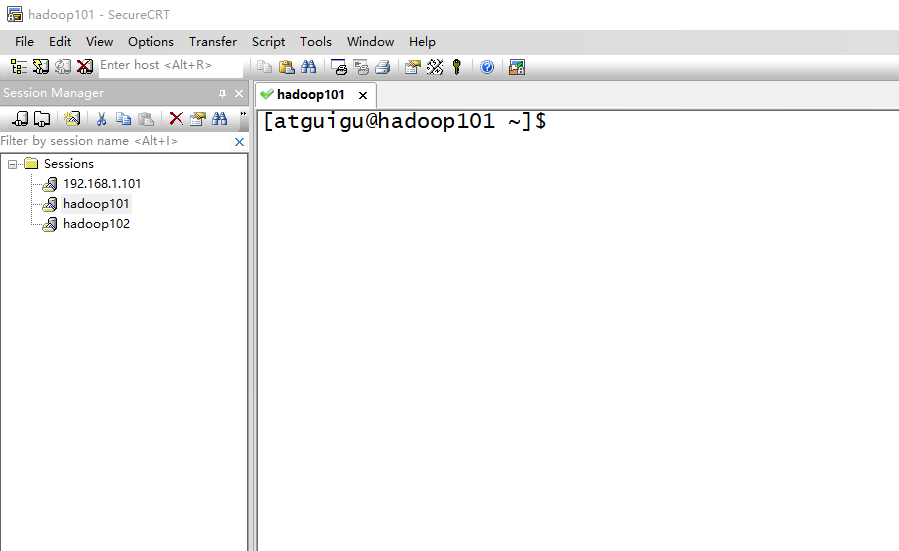</p>
<p>&#x56FE;2-28 &#x5BFC;&#x5165;JDK</p>
<p>&#x201C;alt+p&#x201D;&#x8FDB;&#x5165;sftp&#x6A21;&#x5F0F;&#xFF0C;&#x5982;&#x56FE;2-29&#x6240;&#x793A;</p>
<p>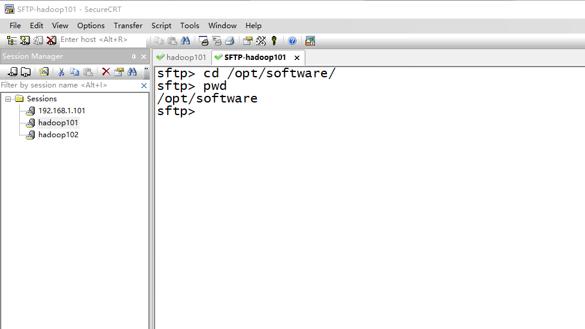</p>
<p>&#x56FE;2-29 &#x8FDB;&#x5165;sftp&#x6A21;&#x5F0F;</p>
<p>&#x9009;&#x62E9;jdk1.8&#x62D6;&#x5165;&#xFF0C;&#x5982;&#x56FE;2-30&#xFF0C;2-31&#x6240;&#x793A;</p>
<p>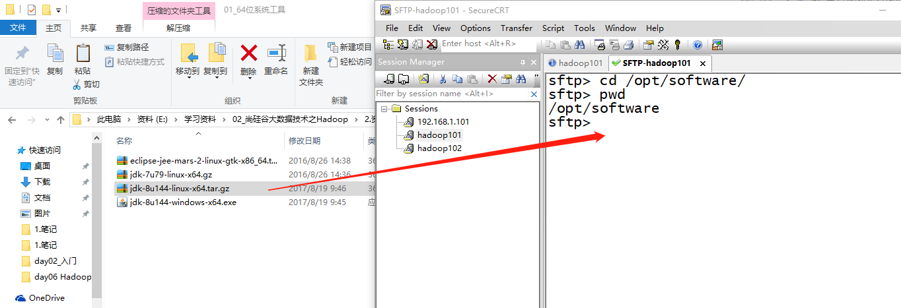</p>
<p>&#x56FE;2-30 &#x62D6;&#x5165;jdk1.8</p>
<p>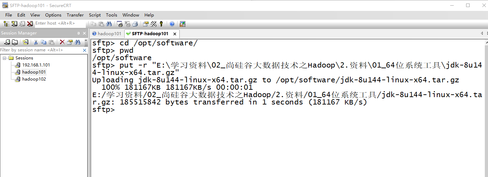</p>
<p>&#x56FE;2-31 &#x62D6;&#x5165;jdk1.8&#x5B8C;&#x6210;</p>
<ol>
<li><p>&#x5728;Linux&#x7CFB;&#x7EDF;&#x4E0B;&#x7684;opt&#x76EE;&#x5F55;&#x4E2D;&#x67E5;&#x770B;&#x8F6F;&#x4EF6;&#x5305;&#x662F;&#x5426;&#x5BFC;&#x5165;&#x6210;&#x529F;</p>
<p>[atguigu\@hadoop101 opt]$ cd software/</p>
<p>[atguigu\@hadoop101 software]$ ls</p>
<p>hadoop-2.7.2.tar.gz jdk-8u144-linux-x64.tar.gz</p>
</li>
<li><p>&#x89E3;&#x538B;JDK&#x5230;/opt/module&#x76EE;&#x5F55;&#x4E0B;</p>
<p>[atguigu\@hadoop101 software]$ tar -zxvf jdk-8u144-linux-x64.tar.gz -C
/opt/module/</p>
</li>
<li><p>&#x914D;&#x7F6E;JDK&#x73AF;&#x5883;&#x53D8;&#x91CF;</p>
</li>
</ol>
<p>&#xFF08;1&#xFF09;&#x5148;&#x83B7;&#x53D6;JDK&#x8DEF;&#x5F84;</p>
<blockquote>
<p>  [atguigu\@hadoop101 jdk1.8.0_144]$ pwd</p>
<p>  /opt/module/jdk1.8.0_144</p>
</blockquote>
<p>&#xFF08;2&#xFF09;&#x6253;&#x5F00;/etc/profile&#x6587;&#x4EF6;</p>
<blockquote>
<p>  [atguigu\@hadoop101 software]$ sudo vi /etc/profile</p>
<p>  &#x5728;profile&#x6587;&#x4EF6;&#x672B;&#x5C3E;&#x6DFB;&#x52A0;JDK&#x8DEF;&#x5F84;</p>
<p>  #JAVA_HOME</p>
<p>  export JAVA_HOME=/opt/module/jdk1.8.0_144</p>
<p>  export PATH=$PATH:$JAVA_HOME/bin</p>
</blockquote>
<p>&#xFF08;3&#xFF09;&#x4FDD;&#x5B58;&#x540E;&#x9000;&#x51FA;</p>
<blockquote>
<p>  :wq</p>
</blockquote>
<p>&#xFF08;4&#xFF09;&#x8BA9;&#x4FEE;&#x6539;&#x540E;&#x7684;&#x6587;&#x4EF6;&#x751F;&#x6548;</p>
<blockquote>
<p>  [atguigu\@hadoop101 jdk1.8.0_144]$ source /etc/profile</p>
</blockquote>
<ol>
<li>&#x6D4B;&#x8BD5;JDK&#x662F;&#x5426;&#x5B89;&#x88C5;&#x6210;&#x529F;</li>
</ol>
<blockquote>
<p>  [atguigu\@hadoop101 jdk1.8.0_144]# java -version</p>
<p>  java version &quot;1.8.0_144&quot;</p>
</blockquote>
<p>&#x6CE8;&#x610F;&#xFF1A;&#x91CD;&#x542F;&#xFF08;&#x5982;&#x679C;java -version&#x53EF;&#x4EE5;&#x7528;&#x5C31;&#x4E0D;&#x7528;&#x91CD;&#x542F;&#xFF09;</p>
<blockquote>
<p>  [atguigu\@hadoop101 jdk1.8.0_144]$ sync</p>
<p>  [atguigu\@hadoop101 jdk1.8.0_144]$ sudo reboot</p>
</blockquote>
<h2 id="33-&#x5B89;&#x88C5;hadoop">3.3 &#x5B89;&#x88C5;Hadoop</h2>
<ol>
<li>Hadoop&#x4E0B;&#x8F7D;&#x5730;&#x5740;&#xFF1A;</li>
</ol>
<p><a href="https://archive.apache.org/dist/hadoop/common/hadoop-2.7.2/" target="_blank">https://archive.apache.org/dist/hadoop/common/hadoop-2.7.2/</a></p>
<ol>
<li>&#x7528;SecureCRT&#x5DE5;&#x5177;&#x5C06;hadoop-2.7.2.tar.gz&#x5BFC;&#x5165;&#x5230;opt&#x76EE;&#x5F55;&#x4E0B;&#x9762;&#x7684;software&#x6587;&#x4EF6;&#x5939;&#x4E0B;&#x9762;</li>
</ol>
<p>&#x5207;&#x6362;&#x5230;sftp&#x8FDE;&#x63A5;&#x9875;&#x9762;&#xFF0C;&#x9009;&#x62E9;Linux&#x4E0B;&#x7F16;&#x8BD1;&#x7684;hadoop jar&#x5305;&#x62D6;&#x5165;&#xFF0C;&#x5982;&#x56FE;2-32&#x6240;&#x793A;</p>
<p>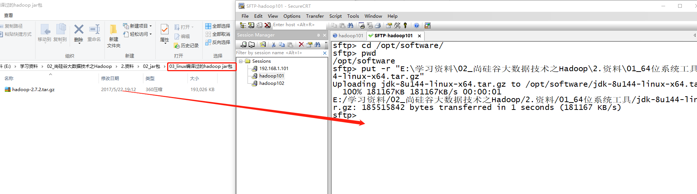</p>
<p>&#x56FE;2-32 &#x62D6;&#x5165;hadoop&#x7684;tar&#x5305;</p>
<p>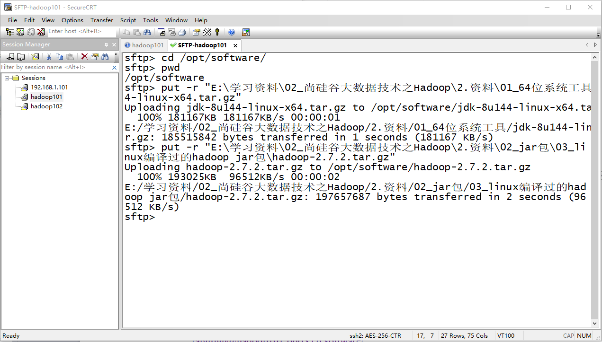</p>
<p>&#x56FE;2-33 &#x62D6;&#x5165;Hadoop&#x7684;tar&#x5305;&#x6210;&#x529F;</p>
<ol>
<li><p>&#x8FDB;&#x5165;&#x5230;Hadoop&#x5B89;&#x88C5;&#x5305;&#x8DEF;&#x5F84;&#x4E0B;</p>
<p>[atguigu\@hadoop101 ~]$ cd /opt/software/</p>
</li>
<li><p>&#x89E3;&#x538B;&#x5B89;&#x88C5;&#x6587;&#x4EF6;&#x5230;/opt/module&#x4E0B;&#x9762;</p>
<p>[atguigu\@hadoop101 software]$ tar -zxvf hadoop-2.7.2.tar.gz -C
/opt/module/</p>
</li>
<li><p>&#x67E5;&#x770B;&#x662F;&#x5426;&#x89E3;&#x538B;&#x6210;&#x529F;</p>
<p>[atguigu\@hadoop101 software]$ ls /opt/module/</p>
<p>hadoop-2.7.2</p>
</li>
<li><p>&#x5C06;Hadoop&#x6DFB;&#x52A0;&#x5230;&#x73AF;&#x5883;&#x53D8;&#x91CF;</p>
</li>
</ol>
<p>&#xFF08;1&#xFF09;&#x83B7;&#x53D6;Hadoop&#x5B89;&#x88C5;&#x8DEF;&#x5F84;</p>
<blockquote>
<p>  [atguigu\@hadoop101 hadoop-2.7.2]$ pwd</p>
<p>  /opt/module/hadoop-2.7.2</p>
</blockquote>
<p>&#xFF08;2&#xFF09;&#x6253;&#x5F00;/etc/profile&#x6587;&#x4EF6;</p>
<blockquote>
<p>  [atguigu\@hadoop101 hadoop-2.7.2]$ sudo vi /etc/profile</p>
<p>  &#x5728;profile&#x6587;&#x4EF6;&#x672B;&#x5C3E;&#x6DFB;&#x52A0;JDK&#x8DEF;&#x5F84;&#xFF1A;&#xFF08;shitf+g&#xFF09;</p>
<p>  ##HADOOP_HOME</p>
<p>  export HADOOP_HOME=/opt/module/hadoop-2.7.2</p>
<p>  export PATH=$PATH:$HADOOP_HOME/bin</p>
<p>  export PATH=$PATH:$HADOOP_HOME/sbin</p>
</blockquote>
<p>&#xFF08;3&#xFF09;&#x4FDD;&#x5B58;&#x540E;&#x9000;&#x51FA;</p>
<blockquote>
<p>  :wq</p>
</blockquote>
<p>&#xFF08;4&#xFF09;&#x8BA9;&#x4FEE;&#x6539;&#x540E;&#x7684;&#x6587;&#x4EF6;&#x751F;&#x6548;</p>
<blockquote>
<p>  [atguigu\@ hadoop101 hadoop-2.7.2]$ source /etc/profile</p>
</blockquote>
<ol>
<li>&#x6D4B;&#x8BD5;&#x662F;&#x5426;&#x5B89;&#x88C5;&#x6210;&#x529F;</li>
</ol>
<blockquote>
<p>  [atguigu\@hadoop101 hadoop-2.7.2]$ hadoop version</p>
<p>  Hadoop 2.7.2</p>
</blockquote>
<ol>
<li>&#x91CD;&#x542F;(&#x5982;&#x679C;Hadoop&#x547D;&#x4EE4;&#x4E0D;&#x80FD;&#x7528;&#x518D;&#x91CD;&#x542F;)</li>
</ol>
<blockquote>
<p>  [atguigu\@ hadoop101 hadoop-2.7.2]$ sync</p>
<p>  [atguigu\@ hadoop101 hadoop-2.7.2]$ sudo reboot</p>
</blockquote>
<h2 id="34-hadoop&#x76EE;&#x5F55;&#x7ED3;&#x6784;">3.4 Hadoop&#x76EE;&#x5F55;&#x7ED3;&#x6784;</h2>
<p>1&#x3001;&#x67E5;&#x770B;Hadoop&#x76EE;&#x5F55;&#x7ED3;&#x6784;</p>
<blockquote>
<p>  [atguigu\@hadoop101 hadoop-2.7.2]$ ll</p>
<p>  &#x603B;&#x7528;&#x91CF; 52</p>
<p>  drwxr-xr-x. 2 atguigu atguigu 4096 5&#x6708; 22 2017 <strong>bin</strong></p>
<p>  drwxr-xr-x. 3 atguigu atguigu 4096 5&#x6708; 22 2017 <strong>etc</strong></p>
<p>  drwxr-xr-x. 2 atguigu atguigu 4096 5&#x6708; 22 2017 include</p>
<p>  drwxr-xr-x. 3 atguigu atguigu 4096 5&#x6708; 22 2017 <strong>lib</strong></p>
<p>  drwxr-xr-x. 2 atguigu atguigu 4096 5&#x6708; 22 2017 libexec</p>
<p>  -rw-r--r--. 1 atguigu atguigu 15429 5&#x6708; 22 2017 LICENSE.txt</p>
<p>  -rw-r--r--. 1 atguigu atguigu 101 5&#x6708; 22 2017 NOTICE.txt</p>
<p>  -rw-r--r--. 1 atguigu atguigu 1366 5&#x6708; 22 2017 README.txt</p>
<p>  drwxr-xr-x. 2 atguigu atguigu 4096 5&#x6708; 22 2017 <strong>sbin</strong></p>
<p>  drwxr-xr-x. 4 atguigu atguigu 4096 5&#x6708; 22 2017 <strong>share</strong></p>
</blockquote>
<p>2&#x3001;&#x91CD;&#x8981;&#x76EE;&#x5F55;</p>
<p>&#xFF08;1&#xFF09;bin&#x76EE;&#x5F55;&#xFF1A;&#x5B58;&#x653E;&#x5BF9;Hadoop&#x76F8;&#x5173;&#x670D;&#x52A1;&#xFF08;HDFS,YARN&#xFF09;&#x8FDB;&#x884C;&#x64CD;&#x4F5C;&#x7684;&#x811A;&#x672C;</p>
<p>&#xFF08;2&#xFF09;etc&#x76EE;&#x5F55;&#xFF1A;Hadoop&#x7684;&#x914D;&#x7F6E;&#x6587;&#x4EF6;&#x76EE;&#x5F55;&#xFF0C;&#x5B58;&#x653E;Hadoop&#x7684;&#x914D;&#x7F6E;&#x6587;&#x4EF6;</p>
<p>&#xFF08;3&#xFF09;lib&#x76EE;&#x5F55;&#xFF1A;&#x5B58;&#x653E;Hadoop&#x7684;&#x672C;&#x5730;&#x5E93;&#xFF08;&#x5BF9;&#x6570;&#x636E;&#x8FDB;&#x884C;&#x538B;&#x7F29;&#x89E3;&#x538B;&#x7F29;&#x529F;&#x80FD;&#xFF09;</p>
<p>&#xFF08;4&#xFF09;sbin&#x76EE;&#x5F55;&#xFF1A;&#x5B58;&#x653E;&#x542F;&#x52A8;&#x6216;&#x505C;&#x6B62;Hadoop&#x76F8;&#x5173;&#x670D;&#x52A1;&#x7684;&#x811A;&#x672C;</p>
<p>&#xFF08;5&#xFF09;share&#x76EE;&#x5F55;&#xFF1A;&#x5B58;&#x653E;Hadoop&#x7684;&#x4F9D;&#x8D56;jar&#x5305;&#x3001;&#x6587;&#x6863;&#x3001;&#x548C;&#x5B98;&#x65B9;&#x6848;&#x4F8B;</p>
<h1 id="&#x7B2C;4&#x7AE0;-hadoop&#x8FD0;&#x884C;&#x6A21;&#x5F0F;">&#x7B2C;4&#x7AE0; Hadoop&#x8FD0;&#x884C;&#x6A21;&#x5F0F;</h1>
<p>Hadoop&#x8FD0;&#x884C;&#x6A21;&#x5F0F;&#x5305;&#x62EC;&#xFF1A;&#x672C;&#x5730;&#x6A21;&#x5F0F;&#x3001;&#x4F2A;&#x5206;&#x5E03;&#x5F0F;&#x6A21;&#x5F0F;&#x4EE5;&#x53CA;&#x5B8C;&#x5168;&#x5206;&#x5E03;&#x5F0F;&#x6A21;&#x5F0F;&#x3002;</p>
<p>Hadoop&#x5B98;&#x65B9;&#x7F51;&#x7AD9;&#xFF1A;<a href="http://hadoop.apache.org/" target="_blank">http://hadoop.apache.org/</a></p>
<h2 id="41-&#x672C;&#x5730;&#x8FD0;&#x884C;&#x6A21;&#x5F0F;">4.1 &#x672C;&#x5730;&#x8FD0;&#x884C;&#x6A21;&#x5F0F;</h2>
<h3 id="411-&#x5B98;&#x65B9;grep&#x6848;&#x4F8B;">4.1.1 &#x5B98;&#x65B9;Grep&#x6848;&#x4F8B;</h3>
<ol>
<li>&#x521B;&#x5EFA;&#x5728;hadoop-2.7.2&#x6587;&#x4EF6;&#x4E0B;&#x9762;&#x521B;&#x5EFA;&#x4E00;&#x4E2A;input&#x6587;&#x4EF6;&#x5939;</li>
</ol>
<blockquote>
<p>  [atguigu\@hadoop101 hadoop-2.7.2]$ mkdir input</p>
</blockquote>
<ol>
<li>&#x5C06;Hadoop&#x7684;xml&#x914D;&#x7F6E;&#x6587;&#x4EF6;&#x590D;&#x5236;&#x5230;input</li>
</ol>
<blockquote>
<p>  [atguigu\@hadoop101 hadoop-2.7.2]$ cp etc/hadoop/*.xml input</p>
</blockquote>
<ol>
<li>&#x6267;&#x884C;share&#x76EE;&#x5F55;&#x4E0B;&#x7684;MapReduce&#x7A0B;&#x5E8F;</li>
</ol>
<blockquote>
<p>  [atguigu\@hadoop101 hadoop-2.7.2]$ bin/hadoop jar</p>
<p>  share/hadoop/mapreduce/hadoop-mapreduce-examples-2.7.2.jar grep input output
  &apos;dfs[a-z.]+&apos;</p>
</blockquote>
<ol>
<li>&#x67E5;&#x770B;&#x8F93;&#x51FA;&#x7ED3;&#x679C;</li>
</ol>
<blockquote>
<p>  [atguigu\@hadoop101 hadoop-2.7.2]$ cat output/*</p>
</blockquote>
<h3 id="412-&#x5B98;&#x65B9;wordcount&#x6848;&#x4F8B;">4.1.2 &#x5B98;&#x65B9;WordCount&#x6848;&#x4F8B;</h3>
<ol>
<li>&#x521B;&#x5EFA;&#x5728;hadoop-2.7.2&#x6587;&#x4EF6;&#x4E0B;&#x9762;&#x521B;&#x5EFA;&#x4E00;&#x4E2A;wcinput&#x6587;&#x4EF6;&#x5939;</li>
</ol>
<blockquote>
<p>  [atguigu\@hadoop101 hadoop-2.7.2]$ mkdir wcinput</p>
</blockquote>
<ol>
<li>&#x5728;wcinput&#x6587;&#x4EF6;&#x4E0B;&#x521B;&#x5EFA;&#x4E00;&#x4E2A;wc.input&#x6587;&#x4EF6;</li>
</ol>
<blockquote>
<p>  [atguigu\@hadoop101 hadoop-2.7.2]$ cd wcinput</p>
<p>  [atguigu\@hadoop101 wcinput]$ touch wc.input</p>
</blockquote>
<ol>
<li>&#x7F16;&#x8F91;wc.input&#x6587;&#x4EF6;</li>
</ol>
<blockquote>
<p>  [atguigu\@hadoop101 wcinput]$ vi wc.input</p>
</blockquote>
<p>&#x5728;&#x6587;&#x4EF6;&#x4E2D;&#x8F93;&#x5165;&#x5982;&#x4E0B;&#x5185;&#x5BB9;</p>
<blockquote>
<p>  hadoop yarn</p>
<p>  hadoop mapreduce</p>
<p>  atguigu</p>
<p>  atguigu</p>
<p>  &#x4FDD;&#x5B58;&#x9000;&#x51FA;&#xFF1A;&#xFF1A;wq</p>
</blockquote>
<ol>
<li><p>&#x56DE;&#x5230;Hadoop&#x76EE;&#x5F55;/opt/module/hadoop-2.7.2</p>
</li>
<li><p>&#x6267;&#x884C;&#x7A0B;&#x5E8F;</p>
</li>
</ol>
<blockquote>
<p>  [atguigu\@hadoop101 hadoop-2.7.2]$ hadoop jar</p>
<p>  share/hadoop/mapreduce/hadoop-mapreduce-examples-2.7.2.jar wordcount wcinput
  wcoutput</p>
</blockquote>
<ol>
<li>&#x67E5;&#x770B;&#x7ED3;&#x679C;</li>
</ol>
<blockquote>
<p>  [atguigu\@hadoop101 hadoop-2.7.2]$ cat wcoutput/part-r-00000</p>
<p>  atguigu 2</p>
<p>  hadoop 2</p>
<p>  mapreduce 1</p>
<p>  yarn 1</p>
</blockquote>
<h2 id="42-&#x4F2A;&#x5206;&#x5E03;&#x5F0F;&#x8FD0;&#x884C;&#x6A21;&#x5F0F;">4.2 &#x4F2A;&#x5206;&#x5E03;&#x5F0F;&#x8FD0;&#x884C;&#x6A21;&#x5F0F;</h2>
<h3 id="421-&#x542F;&#x52A8;hdfs&#x5E76;&#x8FD0;&#x884C;mapreduce&#x7A0B;&#x5E8F;">4.2.1 &#x542F;&#x52A8;HDFS&#x5E76;&#x8FD0;&#x884C;MapReduce&#x7A0B;&#x5E8F;</h3>
<ol>
<li>&#x5206;&#x6790;</li>
</ol>
<p>&#xFF08;1&#xFF09;&#x914D;&#x7F6E;&#x96C6;&#x7FA4;</p>
<p>&#xFF08;2&#xFF09;&#x542F;&#x52A8;&#x3001;&#x6D4B;&#x8BD5;&#x96C6;&#x7FA4;&#x589E;&#x3001;&#x5220;&#x3001;&#x67E5;</p>
<p>&#xFF08;3&#xFF09;&#x6267;&#x884C;WordCount&#x6848;&#x4F8B;</p>
<ol>
<li>&#x6267;&#x884C;&#x6B65;&#x9AA4;</li>
</ol>
<p>&#xFF08;1&#xFF09;&#x914D;&#x7F6E;&#x96C6;&#x7FA4;</p>
<p>&#xFF08;a&#xFF09;&#x914D;&#x7F6E;&#xFF1A;hadoop-env.sh</p>
<blockquote>
<p>  Linux&#x7CFB;&#x7EDF;&#x4E2D;&#x83B7;&#x53D6;JDK&#x7684;&#x5B89;&#x88C5;&#x8DEF;&#x5F84;&#xFF1A;</p>
<p>  [atguigu\@ hadoop101 ~]# echo $JAVA_HOME</p>
<p>  /opt/module/jdk1.8.0_144</p>
<p>  &#x4FEE;&#x6539;JAVA_HOME &#x8DEF;&#x5F84;&#xFF1A;</p>
<p>  export JAVA_HOME=/opt/module/jdk1.8.0_144</p>
<p>  &#xFF08;b&#xFF09;&#x914D;&#x7F6E;&#xFF1A;core-site.xml</p>
</blockquote>
<table>
<thead>
<tr>
<th>\&lt;!-- &#x6307;&#x5B9A;HDFS&#x4E2D;NameNode&#x7684;&#x5730;&#x5740; --&gt; \<property\> \<name\>fs.defaultFS\&lt;/name&gt;  \<value\>hdfs://hadoop101:9000\&lt;/value&gt; \&lt;/property&gt; \&lt;!-- &#x6307;&#x5B9A;Hadoop&#x8FD0;&#x884C;&#x65F6;&#x4EA7;&#x751F;&#x6587;&#x4EF6;&#x7684;&#x5B58;&#x50A8;&#x76EE;&#x5F55; --&gt; \<property\>  \<name\>hadoop.tmp.dir\&lt;/name&gt;  \<value\>/opt/module/hadoop-2.7.2/data/tmp\&lt;/value&gt; \&lt;/property&gt;</value\></name\></property\></value\></name\></property\></th>
</tr>
</thead>
<tbody>
<tr>
<td></td>
</tr>
</tbody>
</table>
<blockquote>
<p>  &#xFF08;c&#xFF09;&#x914D;&#x7F6E;&#xFF1A;hdfs-site.xml</p>
</blockquote>
<table>
<thead>
<tr>
<th>\&lt;!-- &#x6307;&#x5B9A;HDFS&#x526F;&#x672C;&#x7684;&#x6570;&#x91CF; --&gt; \<property\>  \<name\>dfs.replication\&lt;/name&gt;  \<value\>1\&lt;/value&gt; \&lt;/property&gt;</value\></name\></property\></th>
</tr>
</thead>
<tbody>
<tr>
<td></td>
</tr>
</tbody>
</table>
<p>&#xFF08;2&#xFF09;&#x542F;&#x52A8;&#x96C6;&#x7FA4;</p>
<blockquote>
<p>  &#xFF08;a&#xFF09;<strong>&#x683C;&#x5F0F;&#x5316;NameNode</strong>&#xFF08;&#x7B2C;&#x4E00;&#x6B21;&#x542F;&#x52A8;&#x65F6;&#x683C;&#x5F0F;&#x5316;&#xFF0C;&#x4EE5;&#x540E;&#x5C31;&#x4E0D;&#x8981;&#x603B;&#x683C;&#x5F0F;&#x5316;&#xFF09;</p>
<p>  [atguigu\@hadoop101 hadoop-2.7.2]$ bin/hdfs namenode -format</p>
</blockquote>
<p>&#xFF08;b&#xFF09;&#x542F;&#x52A8;NameNode</p>
<blockquote>
<p>  [atguigu\@hadoop101 hadoop-2.7.2]$ sbin/hadoop-daemon.sh start namenode</p>
</blockquote>
<p>&#xFF08;c&#xFF09;&#x542F;&#x52A8;DataNode</p>
<blockquote>
<p>  [atguigu\@hadoop101 hadoop-2.7.2]$ sbin/hadoop-daemon.sh start datanode</p>
</blockquote>
<p>&#xFF08;3&#xFF09;&#x67E5;&#x770B;&#x96C6;&#x7FA4;</p>
<p>&#xFF08;a&#xFF09;&#x67E5;&#x770B;&#x662F;&#x5426;&#x542F;&#x52A8;&#x6210;&#x529F;</p>
<blockquote>
<p>  [atguigu\@hadoop101 hadoop-2.7.2]$ jps</p>
<p>  13586 NameNode</p>
<p>  13668 DataNode</p>
<p>  13786 Jps</p>
<p>  &#x6CE8;&#x610F;&#xFF1A;jps&#x662F;JDK&#x4E2D;&#x7684;&#x547D;&#x4EE4;&#xFF0C;&#x4E0D;&#x662F;Linux&#x547D;&#x4EE4;&#x3002;&#x4E0D;&#x5B89;&#x88C5;JDK&#x4E0D;&#x80FD;&#x4F7F;&#x7528;jps</p>
</blockquote>
<p>&#xFF08;b&#xFF09;web&#x7AEF;&#x67E5;&#x770B;HDFS&#x6587;&#x4EF6;&#x7CFB;&#x7EDF;</p>
<blockquote>
<p>  <a href="http://hadoop101:50070/dfshealth.html\#tab-overview" target="_blank">http://hadoop101:50070/dfshealth.html\#tab-overview</a></p>
<p>  &#x6CE8;&#x610F;&#xFF1A;&#x5982;&#x679C;&#x4E0D;&#x80FD;&#x67E5;&#x770B;&#xFF0C;&#x770B;&#x5982;&#x4E0B;&#x5E16;&#x5B50;&#x5904;&#x7406;</p>
<p>  <a href="http://www.cnblogs.com/zlslch/p/6604189.html" target="_blank">http://www.cnblogs.com/zlslch/p/6604189.html</a></p>
</blockquote>
<p>&#xFF08;c&#xFF09;&#x67E5;&#x770B;&#x4EA7;&#x751F;&#x7684;Log&#x65E5;&#x5FD7;</p>
<p>&#x8BF4;&#x660E;&#xFF1A;&#x5728;&#x4F01;&#x4E1A;&#x4E2D;&#x9047;&#x5230;Bug&#x65F6;&#xFF0C;&#x7ECF;&#x5E38;&#x6839;&#x636E;&#x65E5;&#x5FD7;&#x63D0;&#x793A;&#x4FE1;&#x606F;&#x53BB;&#x5206;&#x6790;&#x95EE;&#x9898;&#x3001;&#x89E3;&#x51B3;Bug&#x3002;</p>
<blockquote>
<p>  &#x5F53;&#x524D;&#x76EE;&#x5F55;&#xFF1A;/opt/module/hadoop-2.7.2/logs</p>
<p>  [atguigu\@hadoop101 logs]$ ls</p>
<p>  hadoop-atguigu-datanode-hadoop.atguigu.com.log</p>
<p>  hadoop-atguigu-datanode-hadoop.atguigu.com.out</p>
<p>  hadoop-atguigu-namenode-hadoop.atguigu.com.log</p>
<p>  hadoop-atguigu-namenode-hadoop.atguigu.com.out</p>
<p>  SecurityAuth-root.audit</p>
<p>  [atguigu\@hadoop101 logs]# cat hadoop-atguigu-datanode-hadoop101.log</p>
<p>  <strong>&#xFF08;d&#xFF09;&#x601D;&#x8003;&#xFF1A;&#x4E3A;&#x4EC0;&#x4E48;&#x4E0D;&#x80FD;&#x4E00;&#x76F4;&#x683C;&#x5F0F;&#x5316;NameNode&#xFF0C;&#x683C;&#x5F0F;&#x5316;NameNode&#xFF0C;&#x8981;&#x6CE8;&#x610F;&#x4EC0;&#x4E48;&#xFF1F;</strong></p>
<p>  [atguigu\@hadoop101 hadoop-2.7.2]$ cd data/tmp/dfs/name/current/</p>
<p>  [atguigu\@hadoop101 current]$ cat VERSION</p>
<p>  <strong>clusterID=CID-f0330a58-36fa-4a2a-a65f-2688269b5837</strong></p>
<p>  [atguigu\@hadoop101 hadoop-2.7.2]$ cd data/tmp/dfs/data/current/</p>
<p>  <strong>clusterID=CID-f0330a58-36fa-4a2a-a65f-2688269b5837</strong></p>
<p>  &#x6CE8;&#x610F;&#xFF1A;&#x683C;&#x5F0F;&#x5316;NameNode&#xFF0C;&#x4F1A;&#x4EA7;&#x751F;&#x65B0;&#x7684;&#x96C6;&#x7FA4;id,&#x5BFC;&#x81F4;NameNode&#x548C;DataNode&#x7684;&#x96C6;&#x7FA4;id&#x4E0D;&#x4E00;&#x81F4;&#xFF0C;&#x96C6;&#x7FA4;&#x627E;&#x4E0D;&#x5230;&#x5DF2;&#x5F80;&#x6570;&#x636E;&#x3002;&#x6240;&#x4EE5;&#xFF0C;&#x683C;&#x5F0F;NameNode&#x65F6;&#xFF0C;&#x4E00;&#x5B9A;&#x8981;&#x5148;&#x5220;&#x9664;data&#x6570;&#x636E;&#x548C;log&#x65E5;&#x5FD7;&#xFF0C;&#x7136;&#x540E;&#x518D;&#x683C;&#x5F0F;&#x5316;NameNode&#x3002;</p>
</blockquote>
<p>&#xFF08;4&#xFF09;&#x64CD;&#x4F5C;&#x96C6;&#x7FA4;</p>
<p>&#xFF08;a&#xFF09;&#x5728;HDFS&#x6587;&#x4EF6;&#x7CFB;&#x7EDF;&#x4E0A;<strong>&#x521B;&#x5EFA;</strong>&#x4E00;&#x4E2A;input&#x6587;&#x4EF6;&#x5939;</p>
<blockquote>
<p>  [atguigu\@hadoop101 hadoop-2.7.2]$ bin/hdfs dfs -mkdir -p
  /user/atguigu/input</p>
</blockquote>
<p>&#xFF08;b&#xFF09;&#x5C06;&#x6D4B;&#x8BD5;&#x6587;&#x4EF6;&#x5185;&#x5BB9;<strong>&#x4E0A;&#x4F20;</strong>&#x5230;&#x6587;&#x4EF6;&#x7CFB;&#x7EDF;&#x4E0A;</p>
<blockquote>
<p>  [atguigu\@hadoop101 hadoop-2.7.2]$bin/hdfs dfs -put wcinput/wc.input</p>
<p>  /user/atguigu/input/</p>
</blockquote>
<p>&#xFF08;c&#xFF09;<strong>&#x67E5;&#x770B;</strong>&#x4E0A;&#x4F20;&#x7684;&#x6587;&#x4EF6;&#x662F;&#x5426;&#x6B63;&#x786E;</p>
<blockquote>
<p>  [atguigu\@hadoop101 hadoop-2.7.2]$ bin/hdfs dfs -ls /user/atguigu/input/</p>
<p>  [atguigu\@hadoop101 hadoop-2.7.2]$ bin/hdfs dfs -cat /user/atguigu/
  input/wc.input</p>
</blockquote>
<p>&#xFF08;d&#xFF09;&#x8FD0;&#x884C;MapReduce&#x7A0B;&#x5E8F;</p>
<blockquote>
<p>  [atguigu\@hadoop101 hadoop-2.7.2]$ bin/hadoop jar</p>
<p>  share/hadoop/mapreduce/hadoop-mapreduce-examples-2.7.2.jar wordcount
  /user/atguigu/input/ /user/atguigu/output</p>
</blockquote>
<p>&#xFF08;e&#xFF09;&#x67E5;&#x770B;&#x8F93;&#x51FA;&#x7ED3;&#x679C;</p>
<blockquote>
<p>  &#x547D;&#x4EE4;&#x884C;&#x67E5;&#x770B;&#xFF1A;</p>
<p>  [atguigu\@hadoop101 hadoop-2.7.2]$ bin/hdfs dfs -cat
  /user/atguigu/output/*</p>
<p>  &#x6D4F;&#x89C8;&#x5668;&#x67E5;&#x770B;&#xFF0C;&#x5982;&#x56FE;2-34&#x6240;&#x793A;</p>
</blockquote>
<p>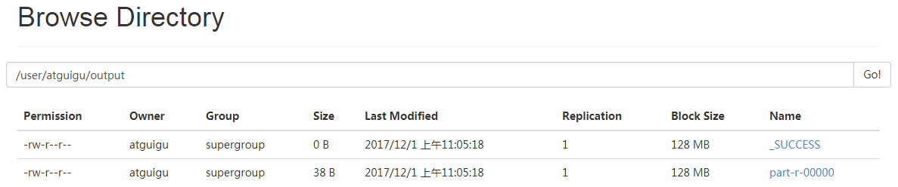</p>
<p>&#x56FE;2-34 &#x67E5;&#x770B;output&#x6587;&#x4EF6;</p>
<p>&#xFF08;f&#xFF09;&#x5C06;&#x6D4B;&#x8BD5;&#x6587;&#x4EF6;&#x5185;&#x5BB9;<strong>&#x4E0B;&#x8F7D;</strong>&#x5230;&#x672C;&#x5730;</p>
<blockquote>
<p>  [atguigu\@hadoop101 hadoop-2.7.2]$ hdfs dfs -get
  /user/atguigu/output/part-r-00000 ./wcoutput/</p>
<p>  &#xFF08;g&#xFF09;<strong>&#x5220;&#x9664;</strong>&#x8F93;&#x51FA;&#x7ED3;&#x679C;</p>
<p>  [atguigu\@hadoop101 hadoop-2.7.2]$ hdfs dfs -rm -r /user/atguigu/output</p>
</blockquote>
<h3 id="422-&#x542F;&#x52A8;yarn&#x5E76;&#x8FD0;&#x884C;mapreduce&#x7A0B;&#x5E8F;">4.2.2 &#x542F;&#x52A8;YARN&#x5E76;&#x8FD0;&#x884C;MapReduce&#x7A0B;&#x5E8F;</h3>
<ol>
<li>&#x5206;&#x6790;</li>
</ol>
<p>&#xFF08;1&#xFF09;&#x914D;&#x7F6E;&#x96C6;&#x7FA4;&#x5728;YARN&#x4E0A;&#x8FD0;&#x884C;MR</p>
<p>&#xFF08;2&#xFF09;&#x542F;&#x52A8;&#x3001;&#x6D4B;&#x8BD5;&#x96C6;&#x7FA4;&#x589E;&#x3001;&#x5220;&#x3001;&#x67E5;</p>
<p>&#xFF08;3&#xFF09;&#x5728;YARN&#x4E0A;&#x6267;&#x884C;WordCount&#x6848;&#x4F8B;</p>
<ol>
<li>&#x6267;&#x884C;&#x6B65;&#x9AA4;</li>
</ol>
<p>&#xFF08;1&#xFF09;&#x914D;&#x7F6E;&#x96C6;&#x7FA4;</p>
<p>&#xFF08;a&#xFF09;&#x914D;&#x7F6E;yarn-env.sh</p>
<blockquote>
<p>  &#x914D;&#x7F6E;&#x4E00;&#x4E0B;JAVA_HOME</p>
<p>  export JAVA_HOME=/opt/module/jdk1.8.0_144</p>
<p>  &#xFF08;b&#xFF09;&#x914D;&#x7F6E;yarn-site.xml</p>
<p>  \&lt;!-- Reducer&#x83B7;&#x53D6;&#x6570;&#x636E;&#x7684;&#x65B9;&#x5F0F; --&gt;</p>
<p>  \<property\></property\></p>
<p>  \<name\>yarn.nodemanager.aux-services\&lt;/name&gt;</name\></p>
<p>  \<value\>mapreduce_shuffle\&lt;/value&gt;</value\></p>
<p>  \&lt;/property&gt;</p>
<p>  \&lt;!-- &#x6307;&#x5B9A;YARN&#x7684;ResourceManager&#x7684;&#x5730;&#x5740; --&gt;</p>
<p>  \<property\></property\></p>
<p>  \<name\>yarn.resourcemanager.hostname\&lt;/name&gt;</name\></p>
<p>  \<value\>hadoop101\&lt;/value&gt;</value\></p>
<p>  \&lt;/property&gt;</p>
</blockquote>
<p>&#xFF08;c&#xFF09;&#x914D;&#x7F6E;&#xFF1A;mapred-env.sh</p>
<blockquote>
<p>  &#x914D;&#x7F6E;&#x4E00;&#x4E0B;JAVA_HOME</p>
<p>  export JAVA_HOME=/opt/module/jdk1.8.0_144</p>
</blockquote>
<p>&#xFF08;d&#xFF09;&#x914D;&#x7F6E;&#xFF1A; (&#x5BF9;mapred-site.xml.template&#x91CD;&#x65B0;&#x547D;&#x540D;&#x4E3A;) mapred-site.xml</p>
<blockquote>
<p>  [atguigu\@hadoop101 hadoop]$ mv mapred-site.xml.template mapred-site.xml</p>
<p>  [atguigu\@hadoop101 hadoop]$ vi mapred-site.xml</p>
<p>  \&lt;!-- &#x6307;&#x5B9A;MR&#x8FD0;&#x884C;&#x5728;YARN&#x4E0A; --&gt;</p>
<p>  \<property\></property\></p>
<p>  \<name\>mapreduce.framework.name\&lt;/name&gt;</name\></p>
<p>  \<value\>yarn\&lt;/value&gt;</value\></p>
<p>  \&lt;/property&gt;</p>
</blockquote>
<p>&#xFF08;2&#xFF09;&#x542F;&#x52A8;&#x96C6;&#x7FA4;</p>
<blockquote>
<p>  &#xFF08;a&#xFF09;&#x542F;&#x52A8;&#x524D;&#x5FC5;&#x987B;&#x4FDD;&#x8BC1;NameNode&#x548C;DataNode&#x5DF2;&#x7ECF;&#x542F;&#x52A8;</p>
<p>  &#xFF08;b&#xFF09;&#x542F;&#x52A8;ResourceManager</p>
<p>  [atguigu\@hadoop101 hadoop-2.7.2]$ sbin/yarn-daemon.sh start
  resourcemanager</p>
<p>  &#xFF08;c&#xFF09;&#x542F;&#x52A8;NodeManager</p>
<p>  [atguigu\@hadoop101 hadoop-2.7.2]$ sbin/yarn-daemon.sh start nodemanager</p>
</blockquote>
<p>&#xFF08;3&#xFF09;&#x96C6;&#x7FA4;&#x64CD;&#x4F5C;</p>
<blockquote>
<p>  &#xFF08;a&#xFF09;YARN&#x7684;&#x6D4F;&#x89C8;&#x5668;&#x9875;&#x9762;&#x67E5;&#x770B;&#xFF0C;&#x5982;&#x56FE;2-35&#x6240;&#x793A;</p>
<p>  <a href="http://hadoop101:8088/cluster" target="_blank">http://hadoop101:8088/cluster</a></p>
</blockquote>
<p>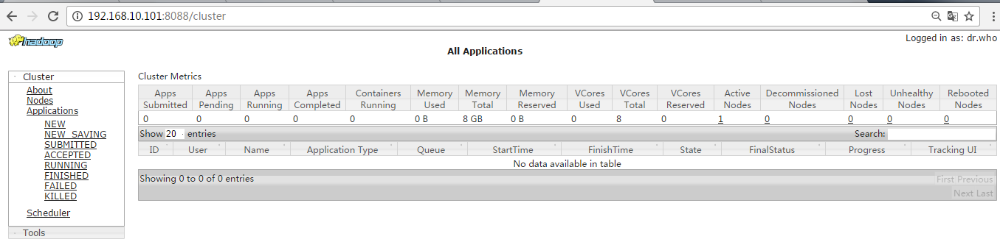</p>
<p>&#x56FE;2-35 YARN&#x7684;&#x6D4F;&#x89C8;&#x5668;&#x9875;&#x9762;</p>
<p>&#xFF08;b&#xFF09;&#x5220;&#x9664;&#x6587;&#x4EF6;&#x7CFB;&#x7EDF;&#x4E0A;&#x7684;output&#x6587;&#x4EF6;</p>
<blockquote>
<p>  [atguigu\@hadoop101 hadoop-2.7.2]$ bin/hdfs dfs -rm -R /user/atguigu/output</p>
</blockquote>
<p>&#xFF08;c&#xFF09;&#x6267;&#x884C;MapReduce&#x7A0B;&#x5E8F;</p>
<blockquote>
<p>  [atguigu\@hadoop101 hadoop-2.7.2]$ bin/hadoop jar</p>
<p>  share/hadoop/mapreduce/hadoop-mapreduce-examples-2.7.2.jar wordcount
  /user/atguigu/input /user/atguigu/output</p>
</blockquote>
<p>&#xFF08;d&#xFF09;&#x67E5;&#x770B;&#x8FD0;&#x884C;&#x7ED3;&#x679C;&#xFF0C;&#x5982;&#x56FE;2-36&#x6240;&#x793A;</p>
<blockquote>
<p>  [atguigu\@hadoop101 hadoop-2.7.2]$ bin/hdfs dfs -cat
  /user/atguigu/output/*</p>
</blockquote>
<p>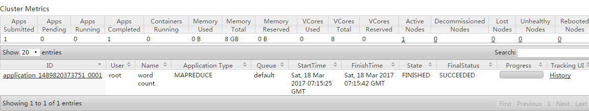</p>
<p>&#x56FE;2-36 &#x67E5;&#x770B;&#x8FD0;&#x884C;&#x7ED3;&#x679C;</p>
<h3 id="423-&#x914D;&#x7F6E;&#x5386;&#x53F2;&#x670D;&#x52A1;&#x5668;">4.2.3 &#x914D;&#x7F6E;&#x5386;&#x53F2;&#x670D;&#x52A1;&#x5668;</h3>
<p>&#x4E3A;&#x4E86;&#x67E5;&#x770B;&#x7A0B;&#x5E8F;&#x7684;&#x5386;&#x53F2;&#x8FD0;&#x884C;&#x60C5;&#x51B5;&#xFF0C;&#x9700;&#x8981;&#x914D;&#x7F6E;&#x4E00;&#x4E0B;&#x5386;&#x53F2;&#x670D;&#x52A1;&#x5668;&#x3002;&#x5177;&#x4F53;&#x914D;&#x7F6E;&#x6B65;&#x9AA4;&#x5982;&#x4E0B;&#xFF1A;</p>
<ol>
<li>&#x914D;&#x7F6E;mapred-site.xml</li>
</ol>
<blockquote>
<p>  [atguigu\@hadoop101 hadoop]$ vi mapred-site.xml</p>
<p>  &#x5728;&#x8BE5;&#x6587;&#x4EF6;&#x91CC;&#x9762;&#x589E;&#x52A0;&#x5982;&#x4E0B;&#x914D;&#x7F6E;&#x3002;</p>
<p>  \&lt;!-- &#x5386;&#x53F2;&#x670D;&#x52A1;&#x5668;&#x7AEF;&#x5730;&#x5740; --&gt;</p>
<p>  \<property\></property\></p>
<p>  \<name\>mapreduce.jobhistory.address\&lt;/name&gt;</name\></p>
<p>  \<value\>hadoop101:10020\&lt;/value&gt;</value\></p>
<p>  \&lt;/property&gt;</p>
<p>  \&lt;!-- &#x5386;&#x53F2;&#x670D;&#x52A1;&#x5668;web&#x7AEF;&#x5730;&#x5740; --&gt;</p>
<p>  \<property\></property\></p>
<p>  \<name\>mapreduce.jobhistory.webapp.address\&lt;/name&gt;</name\></p>
<p>  \<value\>hadoop101:19888\&lt;/value&gt;</value\></p>
<p>  \&lt;/property&gt;</p>
</blockquote>
<ol>
<li>&#x542F;&#x52A8;&#x5386;&#x53F2;&#x670D;&#x52A1;&#x5668;</li>
</ol>
<blockquote>
<p>  [atguigu\@hadoop101 hadoop-2.7.2]$ sbin/mr-jobhistory-daemon.sh start
  historyserver</p>
</blockquote>
<ol>
<li>&#x67E5;&#x770B;&#x5386;&#x53F2;&#x670D;&#x52A1;&#x5668;&#x662F;&#x5426;&#x542F;&#x52A8;</li>
</ol>
<blockquote>
<p>  [atguigu\@hadoop101 hadoop-2.7.2]$ jps</p>
</blockquote>
<ol>
<li>&#x67E5;&#x770B;JobHistory</li>
</ol>
<p><a href="http://hadoop101:19888/jobhistory" target="_blank">http://hadoop101:19888/jobhistory</a></p>
<h3 id="424-&#x914D;&#x7F6E;&#x65E5;&#x5FD7;&#x7684;&#x805A;&#x96C6;">4.2.4 &#x914D;&#x7F6E;&#x65E5;&#x5FD7;&#x7684;&#x805A;&#x96C6;</h3>
<p>&#x65E5;&#x5FD7;&#x805A;&#x96C6;&#x6982;&#x5FF5;&#xFF1A;&#x5E94;&#x7528;&#x8FD0;&#x884C;&#x5B8C;&#x6210;&#x4EE5;&#x540E;&#xFF0C;&#x5C06;&#x7A0B;&#x5E8F;&#x8FD0;&#x884C;&#x65E5;&#x5FD7;&#x4FE1;&#x606F;&#x4E0A;&#x4F20;&#x5230;HDFS&#x7CFB;&#x7EDF;&#x4E0A;&#x3002;</p>
<p>&#x65E5;&#x5FD7;&#x805A;&#x96C6;&#x529F;&#x80FD;&#x597D;&#x5904;&#xFF1A;&#x53EF;&#x4EE5;&#x65B9;&#x4FBF;&#x7684;&#x67E5;&#x770B;&#x5230;&#x7A0B;&#x5E8F;&#x8FD0;&#x884C;&#x8BE6;&#x60C5;&#xFF0C;&#x65B9;&#x4FBF;&#x5F00;&#x53D1;&#x8C03;&#x8BD5;&#x3002;</p>
<p>&#x6CE8;&#x610F;&#xFF1A;&#x5F00;&#x542F;&#x65E5;&#x5FD7;&#x805A;&#x96C6;&#x529F;&#x80FD;&#xFF0C;&#x9700;&#x8981;&#x91CD;&#x65B0;&#x542F;&#x52A8;NodeManager
&#x3001;ResourceManager&#x548C;HistoryManager&#x3002;</p>
<p>&#x5F00;&#x542F;&#x65E5;&#x5FD7;&#x805A;&#x96C6;&#x529F;&#x80FD;&#x5177;&#x4F53;&#x6B65;&#x9AA4;&#x5982;&#x4E0B;&#xFF1A;</p>
<ol>
<li><p>&#x914D;&#x7F6E;yarn-site.xml</p>
<p>[atguigu\@hadoop101 hadoop]$ vi yarn-site.xml</p>
<p>&#x5728;&#x8BE5;&#x6587;&#x4EF6;&#x91CC;&#x9762;&#x589E;&#x52A0;&#x5982;&#x4E0B;&#x914D;&#x7F6E;&#x3002;</p>
<p>\&lt;!-- &#x65E5;&#x5FD7;&#x805A;&#x96C6;&#x529F;&#x80FD;&#x4F7F;&#x80FD; --&gt;</p>
<p>\<property\></property\></p>
<p>\<name\>yarn.log-aggregation-enable\&lt;/name&gt;</name\></p>
<p>\<value\>true\&lt;/value&gt;</value\></p>
<p>\&lt;/property&gt;</p>
<p>\&lt;!-- &#x65E5;&#x5FD7;&#x4FDD;&#x7559;&#x65F6;&#x95F4;&#x8BBE;&#x7F6E;7&#x5929; --&gt;</p>
<p>\<property\></property\></p>
<p>\<name\>yarn.log-aggregation.retain-seconds\&lt;/name&gt;</name\></p>
<p>\<value\>604800\&lt;/value&gt;</value\></p>
<p>\&lt;/property&gt;</p>
</li>
<li><p>&#x5173;&#x95ED;NodeManager &#x3001;ResourceManager&#x548C;HistoryManager</p>
<p>[atguigu\@hadoop101 hadoop-2.7.2]$ sbin/yarn-daemon.sh stop resourcemanager</p>
<p>[atguigu\@hadoop101 hadoop-2.7.2]$ sbin/yarn-daemon.sh stop nodemanager</p>
<p>[atguigu\@hadoop101 hadoop-2.7.2]$ sbin/mr-jobhistory-daemon.sh stop
historyserver</p>
</li>
<li><p>&#x542F;&#x52A8;NodeManager &#x3001;ResourceManager&#x548C;HistoryManager</p>
<p>[atguigu\@hadoop101 hadoop-2.7.2]$ sbin/yarn-daemon.sh start
resourcemanager</p>
<p>[atguigu\@hadoop101 hadoop-2.7.2]$ sbin/yarn-daemon.sh start nodemanager</p>
<p>[atguigu\@hadoop101 hadoop-2.7.2]$ sbin/mr-jobhistory-daemon.sh start
historyserver</p>
</li>
<li><p>&#x5220;&#x9664;HDFS&#x4E0A;&#x5DF2;&#x7ECF;&#x5B58;&#x5728;&#x7684;&#x8F93;&#x51FA;&#x6587;&#x4EF6;</p>
<p>[atguigu\@hadoop101 hadoop-2.7.2]$ bin/hdfs dfs -rm -R /user/atguigu/output</p>
</li>
<li><p>&#x6267;&#x884C;WordCount&#x7A0B;&#x5E8F;</p>
<p>[atguigu\@hadoop101 hadoop-2.7.2]$ hadoop jar</p>
<p>share/hadoop/mapreduce/hadoop-mapreduce-examples-2.7.2.jar wordcount
/user/atguigu/input /user/atguigu/output</p>
</li>
<li><p>&#x67E5;&#x770B;&#x65E5;&#x5FD7;&#xFF0C;&#x5982;&#x56FE;2-37&#xFF0C;2-38&#xFF0C;2-39&#x6240;&#x793A;</p>
<p><a href="http://hadoop101:19888/jobhistory" target="_blank">http://hadoop101:19888/jobhistory</a></p>
</li>
</ol>
<p>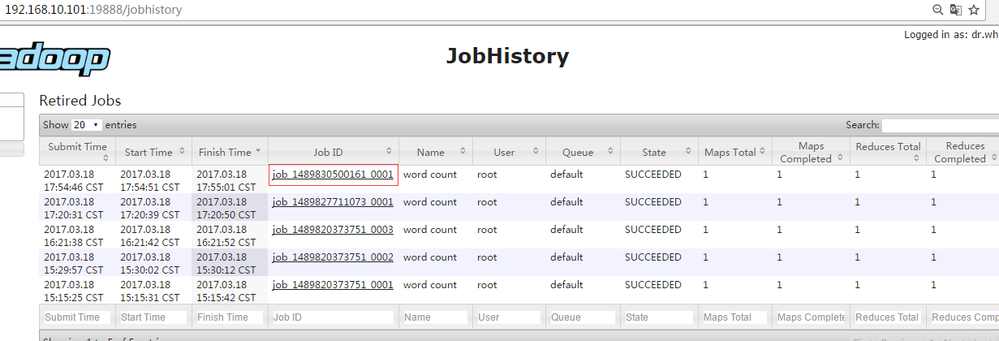</p>
<p>&#x56FE;2-37 Job History</p>
<p>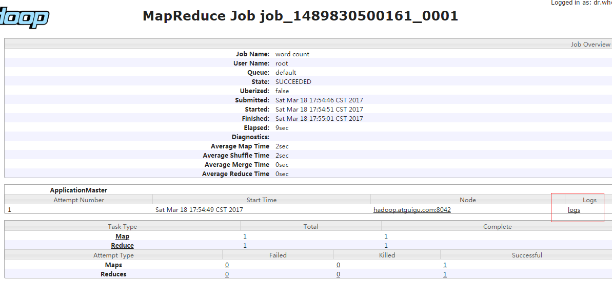</p>
<p>&#x56FE;2-38 job&#x8FD0;&#x884C;&#x60C5;&#x51B5;</p>
<p>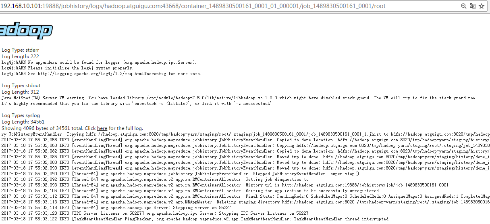</p>
<p>&#x56FE;2-39 &#x67E5;&#x770B;&#x65E5;&#x5FD7;</p>
<h3 id="425-&#x914D;&#x7F6E;&#x6587;&#x4EF6;&#x8BF4;&#x660E;">4.2.5 &#x914D;&#x7F6E;&#x6587;&#x4EF6;&#x8BF4;&#x660E;</h3>
<p>Hadoop&#x914D;&#x7F6E;&#x6587;&#x4EF6;&#x5206;&#x4E24;&#x7C7B;&#xFF1A;&#x9ED8;&#x8BA4;&#x914D;&#x7F6E;&#x6587;&#x4EF6;&#x548C;&#x81EA;&#x5B9A;&#x4E49;&#x914D;&#x7F6E;&#x6587;&#x4EF6;&#xFF0C;&#x53EA;&#x6709;&#x7528;&#x6237;&#x60F3;&#x4FEE;&#x6539;&#x67D0;&#x4E00;&#x9ED8;&#x8BA4;&#x914D;&#x7F6E;&#x503C;&#x65F6;&#xFF0C;&#x624D;&#x9700;&#x8981;&#x4FEE;&#x6539;&#x81EA;&#x5B9A;&#x4E49;&#x914D;&#x7F6E;&#x6587;&#x4EF6;&#xFF0C;&#x66F4;&#x6539;&#x76F8;&#x5E94;&#x5C5E;&#x6027;&#x503C;&#x3002;</p>
<p>&#xFF08;1&#xFF09;&#x9ED8;&#x8BA4;&#x914D;&#x7F6E;&#x6587;&#x4EF6;&#xFF1A;</p>
<p>&#x8868;2-1</p>
<table>
<thead>
<tr>
<th>&#x8981;&#x83B7;&#x53D6;&#x7684;&#x9ED8;&#x8BA4;&#x6587;&#x4EF6;</th>
<th>&#x6587;&#x4EF6;&#x5B58;&#x653E;&#x5728;Hadoop&#x7684;jar&#x5305;&#x4E2D;&#x7684;&#x4F4D;&#x7F6E;</th>
</tr>
</thead>
<tbody>
<tr>
<td>[core-default.xml]</td>
<td>hadoop-common-2.7.2.jar/ core-default.xml</td>
</tr>
<tr>
<td>[hdfs-default.xml]</td>
<td>hadoop-hdfs-2.7.2.jar/ hdfs-default.xml</td>
</tr>
<tr>
<td>[yarn-default.xml]</td>
<td>hadoop-yarn-common-2.7.2.jar/ yarn-default.xml</td>
</tr>
<tr>
<td>[mapred-default.xml]</td>
<td>hadoop-mapreduce-client-core-2.7.2.jar/ mapred-default.xml</td>
</tr>
</tbody>
</table>
<p>&#xFF08;2&#xFF09;&#x81EA;&#x5B9A;&#x4E49;&#x914D;&#x7F6E;&#x6587;&#x4EF6;&#xFF1A;</p>
<p><strong>core-site.xml&#x3001;hdfs-site.xml&#x3001;yarn-site.xml&#x3001;mapred-site.xml</strong>&#x56DB;&#x4E2A;&#x914D;&#x7F6E;&#x6587;&#x4EF6;&#x5B58;&#x653E;&#x5728;$HADOOP_HOME/etc/hadoop&#x8FD9;&#x4E2A;&#x8DEF;&#x5F84;&#x4E0A;&#xFF0C;&#x7528;&#x6237;&#x53EF;&#x4EE5;&#x6839;&#x636E;&#x9879;&#x76EE;&#x9700;&#x6C42;&#x91CD;&#x65B0;&#x8FDB;&#x884C;&#x4FEE;&#x6539;&#x914D;&#x7F6E;&#x3002;</p>
<h2 id="43-&#x5B8C;&#x5168;&#x5206;&#x5E03;&#x5F0F;&#x8FD0;&#x884C;&#x6A21;&#x5F0F;&#xFF08;&#x5F00;&#x53D1;&#x91CD;&#x70B9;&#xFF09;">4.3 &#x5B8C;&#x5168;&#x5206;&#x5E03;&#x5F0F;&#x8FD0;&#x884C;&#x6A21;&#x5F0F;&#xFF08;&#x5F00;&#x53D1;&#x91CD;&#x70B9;&#xFF09;</h2>
<p>&#x5206;&#x6790;&#xFF1A;</p>
<p>1&#xFF09;&#x51C6;&#x5907;3&#x53F0;&#x5BA2;&#x6237;&#x673A;&#xFF08;&#x5173;&#x95ED;&#x9632;&#x706B;&#x5899;&#x3001;&#x9759;&#x6001;ip&#x3001;&#x4E3B;&#x673A;&#x540D;&#x79F0;&#xFF09;</p>
<p>2&#xFF09;&#x5B89;&#x88C5;JDK</p>
<p>3&#xFF09;&#x914D;&#x7F6E;&#x73AF;&#x5883;&#x53D8;&#x91CF;</p>
<p>4&#xFF09;&#x5B89;&#x88C5;Hadoop</p>
<p>5&#xFF09;&#x914D;&#x7F6E;&#x73AF;&#x5883;&#x53D8;&#x91CF;</p>
<p>6&#xFF09;&#x914D;&#x7F6E;&#x96C6;&#x7FA4;</p>
<p>7&#xFF09;&#x5355;&#x70B9;&#x542F;&#x52A8;</p>
<p>8&#xFF09;&#x914D;&#x7F6E;ssh</p>
<p>9&#xFF09;&#x7FA4;&#x8D77;&#x5E76;&#x6D4B;&#x8BD5;&#x96C6;&#x7FA4;</p>
<h3 id="431-&#x865A;&#x62DF;&#x673A;&#x51C6;&#x5907;">4.3.1 &#x865A;&#x62DF;&#x673A;&#x51C6;&#x5907;</h3>
<p>&#x8BE6;&#x89C1;3.1&#x7AE0;&#x3002;</p>
<h3 id="432-&#x7F16;&#x5199;&#x96C6;&#x7FA4;&#x5206;&#x53D1;&#x811A;&#x672C;xsync">4.3.2 &#x7F16;&#x5199;&#x96C6;&#x7FA4;&#x5206;&#x53D1;&#x811A;&#x672C;xsync</h3>
<ol>
<li>scp&#xFF08;secure copy&#xFF09;&#x5B89;&#x5168;&#x62F7;&#x8D1D;</li>
</ol>
<p>&#xFF08;1&#xFF09;scp&#x5B9A;&#x4E49;&#xFF1A;</p>
<blockquote>
<p>  scp&#x53EF;&#x4EE5;&#x5B9E;&#x73B0;&#x670D;&#x52A1;&#x5668;&#x4E0E;&#x670D;&#x52A1;&#x5668;&#x4E4B;&#x95F4;&#x7684;&#x6570;&#x636E;&#x62F7;&#x8D1D;&#x3002;&#xFF08;from server1 to server2&#xFF09;</p>
</blockquote>
<p>&#xFF08;2&#xFF09;&#x57FA;&#x672C;&#x8BED;&#x6CD5;</p>
<blockquote>
<p>  scp -r $pdir/$fname $user\@hadoop$host:$pdir/$fname</p>
<p>  &#x547D;&#x4EE4; &#x9012;&#x5F52; &#x8981;&#x62F7;&#x8D1D;&#x7684;&#x6587;&#x4EF6;&#x8DEF;&#x5F84;/&#x540D;&#x79F0; &#x76EE;&#x7684;&#x7528;&#x6237;\@&#x4E3B;&#x673A;:&#x76EE;&#x7684;&#x8DEF;&#x5F84;/&#x540D;&#x79F0;</p>
</blockquote>
<p>&#xFF08;3&#xFF09;&#x6848;&#x4F8B;&#x5B9E;&#x64CD;</p>
<blockquote>
<p>  &#xFF08;a&#xFF09;&#x5728;hadoop101&#x4E0A;&#xFF0C;&#x5C06;hadoop101&#x4E2D;/opt/module&#x76EE;&#x5F55;&#x4E0B;&#x7684;&#x8F6F;&#x4EF6;&#x62F7;&#x8D1D;&#x5230;hadoop102&#x4E0A;&#x3002;</p>
<p>  [atguigu\@hadoop101 /]$ scp -r /opt/module root\@hadoop102:/opt/module</p>
<p>  &#xFF08;b&#xFF09;&#x5728;hadoop103&#x4E0A;&#xFF0C;&#x5C06;hadoop101&#x670D;&#x52A1;&#x5668;&#x4E0A;&#x7684;/opt/module&#x76EE;&#x5F55;&#x4E0B;&#x7684;&#x8F6F;&#x4EF6;&#x62F7;&#x8D1D;&#x5230;hadoop103&#x4E0A;&#x3002;</p>
<p>  [atguigu\@hadoop103 opt]$sudo scp -r atguigu\@hadoop101:/opt/module
  root\@hadoop103:/opt/module</p>
<p>  &#xFF08;c&#xFF09;&#x5728;hadoop103&#x4E0A;&#x64CD;&#x4F5C;&#x5C06;hadoop101&#x4E2D;/opt/module&#x76EE;&#x5F55;&#x4E0B;&#x7684;&#x8F6F;&#x4EF6;&#x62F7;&#x8D1D;&#x5230;hadoop104&#x4E0A;&#x3002;</p>
<p>  [atguigu\@hadoop103 opt]$ scp -r atguigu\@hadoop101:/opt/module
  root\@hadoop104:/opt/module</p>
<p>  &#x6CE8;&#x610F;&#xFF1A;&#x62F7;&#x8D1D;&#x8FC7;&#x6765;&#x7684;/opt/module&#x76EE;&#x5F55;&#xFF0C;&#x522B;&#x5FD8;&#x4E86;&#x5728;hadoop102&#x3001;hadoop103&#x3001;hadoop104&#x4E0A;&#x4FEE;&#x6539;&#x6240;&#x6709;&#x6587;&#x4EF6;&#x7684;&#xFF0C;&#x6240;&#x6709;&#x8005;&#x548C;&#x6240;&#x6709;&#x8005;&#x7EC4;&#x3002;sudo
  chown atguigu:atguigu -R /opt/module</p>
<p>  &#xFF08;d&#xFF09;&#x5C06;hadoop101&#x4E2D;/etc/profile&#x6587;&#x4EF6;&#x62F7;&#x8D1D;&#x5230;hadoop102&#x7684;/etc/profile&#x4E0A;&#x3002;</p>
<p>  [atguigu\@hadoop101 ~]$ sudo scp /etc/profile root\@hadoop102:/etc/profile</p>
<p>  &#xFF08;e&#xFF09;&#x5C06;hadoop101&#x4E2D;/etc/profile&#x6587;&#x4EF6;&#x62F7;&#x8D1D;&#x5230;hadoop103&#x7684;/etc/profile&#x4E0A;&#x3002;</p>
<p>  [atguigu\@hadoop101 ~]$ sudo scp /etc/profile root\@hadoop103:/etc/profile</p>
<p>  &#xFF08;f&#xFF09;&#x5C06;hadoop101&#x4E2D;/etc/profile&#x6587;&#x4EF6;&#x62F7;&#x8D1D;&#x5230;hadoop104&#x7684;/etc/profile&#x4E0A;&#x3002;</p>
<p>  [atguigu\@hadoop101 ~]$ sudo scp /etc/profile root\@hadoop104:/etc/profile</p>
<p>  &#x6CE8;&#x610F;&#xFF1A;&#x62F7;&#x8D1D;&#x8FC7;&#x6765;&#x7684;&#x914D;&#x7F6E;&#x6587;&#x4EF6;&#x522B;&#x5FD8;&#x4E86;source&#x4E00;&#x4E0B;/etc/profile&#xFF0C;&#x3002;</p>
</blockquote>
<ol>
<li>rsync &#x8FDC;&#x7A0B;&#x540C;&#x6B65;&#x5DE5;&#x5177;</li>
</ol>
<p>rsync&#x4E3B;&#x8981;&#x7528;&#x4E8E;&#x5907;&#x4EFD;&#x548C;&#x955C;&#x50CF;&#x3002;&#x5177;&#x6709;&#x901F;&#x5EA6;&#x5FEB;&#x3001;&#x907F;&#x514D;&#x590D;&#x5236;&#x76F8;&#x540C;&#x5185;&#x5BB9;&#x548C;&#x652F;&#x6301;&#x7B26;&#x53F7;&#x94FE;&#x63A5;&#x7684;&#x4F18;&#x70B9;&#x3002;</p>
<p>rsync&#x548C;scp&#x533A;&#x522B;&#xFF1A;&#x7528;rsync&#x505A;&#x6587;&#x4EF6;&#x7684;&#x590D;&#x5236;&#x8981;&#x6BD4;scp&#x7684;&#x901F;&#x5EA6;&#x5FEB;&#xFF0C;rsync&#x53EA;&#x5BF9;&#x5DEE;&#x5F02;&#x6587;&#x4EF6;&#x505A;&#x66F4;&#x65B0;&#x3002;scp&#x662F;&#x628A;&#x6240;&#x6709;&#x6587;&#x4EF6;&#x90FD;&#x590D;&#x5236;&#x8FC7;&#x53BB;&#x3002;</p>
<p>&#xFF08;1&#xFF09;&#x57FA;&#x672C;&#x8BED;&#x6CD5;</p>
<blockquote>
<p>  rsync -rvl $pdir/$fname $user\@hadoop$host:$pdir/$fname</p>
<p>  &#x547D;&#x4EE4; &#x9009;&#x9879;&#x53C2;&#x6570; &#x8981;&#x62F7;&#x8D1D;&#x7684;&#x6587;&#x4EF6;&#x8DEF;&#x5F84;/&#x540D;&#x79F0; &#x76EE;&#x7684;&#x7528;&#x6237;\@&#x4E3B;&#x673A;:&#x76EE;&#x7684;&#x8DEF;&#x5F84;/&#x540D;&#x79F0;</p>
</blockquote>
<p>&#x9009;&#x9879;&#x53C2;&#x6570;&#x8BF4;&#x660E;</p>
<p>&#x8868;2-2</p>
<table>
<thead>
<tr>
<th>&#x9009;&#x9879;</th>
<th>&#x529F;&#x80FD;</th>
</tr>
</thead>
<tbody>
<tr>
<td>-r</td>
<td>&#x9012;&#x5F52;</td>
</tr>
<tr>
<td>-v</td>
<td>&#x663E;&#x793A;&#x590D;&#x5236;&#x8FC7;&#x7A0B;</td>
</tr>
<tr>
<td>-l</td>
<td>&#x62F7;&#x8D1D;&#x7B26;&#x53F7;&#x8FDE;&#x63A5;</td>
</tr>
</tbody>
</table>
<p>&#xFF08;2&#xFF09;&#x6848;&#x4F8B;&#x5B9E;&#x64CD;</p>
<p>&#xFF08;a&#xFF09;&#x628A;hadoop101&#x673A;&#x5668;&#x4E0A;&#x7684;/opt/software&#x76EE;&#x5F55;&#x540C;&#x6B65;&#x5230;hadoop102&#x670D;&#x52A1;&#x5668;&#x7684;root&#x7528;&#x6237;&#x4E0B;&#x7684;/opt/&#x76EE;&#x5F55;</p>
<blockquote>
<p>  [atguigu\@hadoop101 opt]$ rsync -rvl /opt/software/
  root\@hadoop102:/opt/software</p>
</blockquote>
<ol>
<li>xsync&#x96C6;&#x7FA4;&#x5206;&#x53D1;&#x811A;&#x672C;</li>
</ol>
<p>&#xFF08;1&#xFF09;&#x9700;&#x6C42;&#xFF1A;&#x5FAA;&#x73AF;&#x590D;&#x5236;&#x6587;&#x4EF6;&#x5230;&#x6240;&#x6709;&#x8282;&#x70B9;&#x7684;&#x76F8;&#x540C;&#x76EE;&#x5F55;&#x4E0B;</p>
<p>&#xFF08;2&#xFF09;&#x9700;&#x6C42;&#x5206;&#x6790;&#xFF1A;</p>
<blockquote>
<p>  &#xFF08;a&#xFF09;rsync&#x547D;&#x4EE4;&#x539F;&#x59CB;&#x62F7;&#x8D1D;&#xFF1A;</p>
<p>  rsync -rvl /opt/module root\@hadoop103:/opt/</p>
</blockquote>
<p>&#xFF08;b&#xFF09;&#x671F;&#x671B;&#x811A;&#x672C;&#xFF1A;</p>
<blockquote>
<p>  xsync&#x8981;&#x540C;&#x6B65;&#x7684;&#x6587;&#x4EF6;&#x540D;&#x79F0;</p>
</blockquote>
<p>&#xFF08;c&#xFF09;&#x8BF4;&#x660E;&#xFF1A;&#x5728;/home/atguigu/bin&#x8FD9;&#x4E2A;&#x76EE;&#x5F55;&#x4E0B;&#x5B58;&#x653E;&#x7684;&#x811A;&#x672C;&#xFF0C;atguigu&#x7528;&#x6237;&#x53EF;&#x4EE5;&#x5728;&#x7CFB;&#x7EDF;&#x4EFB;&#x4F55;&#x5730;&#x65B9;&#x76F4;&#x63A5;&#x6267;&#x884C;&#x3002;</p>
<p>&#xFF08;3&#xFF09;&#x811A;&#x672C;&#x5B9E;&#x73B0;</p>
<blockquote>
<p>  &#xFF08;a&#xFF09;&#x5728;/home/atguigu&#x76EE;&#x5F55;&#x4E0B;&#x521B;&#x5EFA;bin&#x76EE;&#x5F55;&#xFF0C;&#x5E76;&#x5728;bin&#x76EE;&#x5F55;&#x4E0B;xsync&#x521B;&#x5EFA;&#x6587;&#x4EF6;&#xFF0C;&#x6587;&#x4EF6;&#x5185;&#x5BB9;&#x5982;&#x4E0B;&#xFF1A;</p>
<p>  [atguigu\@hadoop102 ~]$ mkdir bin</p>
<p>  [atguigu\@hadoop102 ~]$ cd bin/</p>
<p>  [atguigu\@hadoop102 bin]$ touch xsync</p>
<p>  [atguigu\@hadoop102 bin]$ vi xsync</p>
<p>  &#x5728;&#x8BE5;&#x6587;&#x4EF6;&#x4E2D;&#x7F16;&#x5199;&#x5982;&#x4E0B;&#x4EE3;&#x7801;</p>
<p>  #!/bin/bash</p>
<p>  #1 &#x83B7;&#x53D6;&#x8F93;&#x5165;&#x53C2;&#x6570;&#x4E2A;&#x6570;&#xFF0C;&#x5982;&#x679C;&#x6CA1;&#x6709;&#x53C2;&#x6570;&#xFF0C;&#x76F4;&#x63A5;&#x9000;&#x51FA;</p>
<p>  pcount=$#</p>
<p>  if((pcount==0)); then</p>
<p>  echo no args;</p>
<p>  exit;</p>
<p>  fi</p>
<p>  #2 &#x83B7;&#x53D6;&#x6587;&#x4EF6;&#x540D;&#x79F0;</p>
<p>  p1=$1</p>
<p>  fname=`basename $p1`</p>
<p>  echo fname=$fname</p>
<p>  #3 &#x83B7;&#x53D6;&#x4E0A;&#x7EA7;&#x76EE;&#x5F55;&#x5230;&#x7EDD;&#x5BF9;&#x8DEF;&#x5F84;</p>
<p>  pdir=`cd -P $(dirname $p1); pwd`</p>
<p>  echo pdir=$pdir</p>
<p>  #4 &#x83B7;&#x53D6;&#x5F53;&#x524D;&#x7528;&#x6237;&#x540D;&#x79F0;</p>
<p>  user=`whoami`</p>
<p>  #5 &#x5FAA;&#x73AF;</p>
<p>  for((host=103; host\&lt;105; host++)); do</p>
<p>  echo ------------------- hadoop$host --------------</p>
<p>  rsync -rvl $pdir/$fname $user\@hadoop$host:$pdir</p>
<p>  done</p>
<p>  &#xFF08;b&#xFF09;&#x4FEE;&#x6539;&#x811A;&#x672C; xsync &#x5177;&#x6709;&#x6267;&#x884C;&#x6743;&#x9650;</p>
<p>  [atguigu\@hadoop102 bin]$ chmod 777 xsync</p>
<p>  &#xFF08;c&#xFF09;&#x8C03;&#x7528;&#x811A;&#x672C;&#x5F62;&#x5F0F;&#xFF1A;xsync &#x6587;&#x4EF6;&#x540D;&#x79F0;</p>
<p>  [atguigu\@hadoop102 bin]$ xsync /home/atguigu/bin</p>
<p>  &#x6CE8;&#x610F;&#xFF1A;&#x5982;&#x679C;&#x5C06;xsync&#x653E;&#x5230;/home/atguigu/bin&#x76EE;&#x5F55;&#x4E0B;&#x4ECD;&#x7136;&#x4E0D;&#x80FD;&#x5B9E;&#x73B0;&#x5168;&#x5C40;&#x4F7F;&#x7528;&#xFF0C;&#x53EF;&#x4EE5;&#x5C06;xsync&#x79FB;&#x52A8;&#x5230;/usr/local/bin&#x76EE;&#x5F55;&#x4E0B;&#x3002;</p>
</blockquote>
<h3 id="433-&#x96C6;&#x7FA4;&#x914D;&#x7F6E;">4.3.3 &#x96C6;&#x7FA4;&#x914D;&#x7F6E;</h3>
<ol>
<li>&#x96C6;&#x7FA4;&#x90E8;&#x7F72;&#x89C4;&#x5212;</li>
</ol>
<p>&#x8868;2-3</p>
<table>
<thead>
<tr>
<th></th>
<th>hadoop102</th>
<th>hadoop103</th>
<th>hadoop104</th>
</tr>
</thead>
<tbody>
<tr>
<td>HDFS</td>
<td>NameNode DataNode</td>
<td>DataNode</td>
<td>SecondaryNameNode DataNode</td>
</tr>
<tr>
<td>YARN</td>
<td>NodeManager</td>
<td>ResourceManager NodeManager</td>
<td>NodeManager</td>
</tr>
</tbody>
</table>
<ol>
<li>&#x914D;&#x7F6E;&#x96C6;&#x7FA4;</li>
</ol>
<p>&#xFF08;1&#xFF09;&#x6838;&#x5FC3;&#x914D;&#x7F6E;&#x6587;&#x4EF6;</p>
<blockquote>
<p>  &#x914D;&#x7F6E;core-site.xml</p>
<p>  [atguigu\@hadoop102 hadoop]$ vi core-site.xml</p>
<p>  &#x5728;&#x8BE5;&#x6587;&#x4EF6;&#x4E2D;&#x7F16;&#x5199;&#x5982;&#x4E0B;&#x914D;&#x7F6E;</p>
<p>  \&lt;!-- &#x6307;&#x5B9A;HDFS&#x4E2D;NameNode&#x7684;&#x5730;&#x5740; --&gt;</p>
<p>  \<property\></property\></p>
<p>  \<name\>fs.defaultFS\&lt;/name&gt;</name\></p>
<p>  \<value\>hdfs://hadoop102:9000\&lt;/value&gt;</value\></p>
<p>  \&lt;/property&gt;</p>
<p>  \&lt;!-- &#x6307;&#x5B9A;Hadoop&#x8FD0;&#x884C;&#x65F6;&#x4EA7;&#x751F;&#x6587;&#x4EF6;&#x7684;&#x5B58;&#x50A8;&#x76EE;&#x5F55; --&gt;</p>
<p>  \<property\></property\></p>
<p>  \<name\>hadoop.tmp.dir\&lt;/name&gt;</name\></p>
<p>  \<value\>/opt/module/hadoop-2.7.2/data/tmp\&lt;/value&gt;</value\></p>
<p>  \&lt;/property&gt;</p>
</blockquote>
<p>&#xFF08;2&#xFF09;HDFS&#x914D;&#x7F6E;&#x6587;&#x4EF6;</p>
<blockquote>
<p>  &#x914D;&#x7F6E;hadoop-env.sh</p>
<p>  [atguigu\@hadoop102 hadoop]$ vi hadoop-env.sh</p>
<p>  export JAVA_HOME=/opt/module/jdk1.8.0_144</p>
<p>  &#x914D;&#x7F6E;hdfs-site.xml</p>
<p>  [atguigu\@hadoop102 hadoop]$ vi hdfs-site.xml</p>
<p>  &#x5728;&#x8BE5;&#x6587;&#x4EF6;&#x4E2D;&#x7F16;&#x5199;&#x5982;&#x4E0B;&#x914D;&#x7F6E;</p>
<p>  \<property\></property\></p>
<p>  \<name\>dfs.replication\&lt;/name&gt;</name\></p>
<p>  \<value\>3\&lt;/value&gt;</value\></p>
<p>  \&lt;/property&gt;</p>
<p>  \&lt;!-- &#x6307;&#x5B9A;Hadoop&#x8F85;&#x52A9;&#x540D;&#x79F0;&#x8282;&#x70B9;&#x4E3B;&#x673A;&#x914D;&#x7F6E; --&gt;</p>
<p>  \<property\></property\></p>
<p>  \<name\>dfs.namenode.secondary.http-address\&lt;/name&gt;</name\></p>
<p>  \<value\>hadoop104:50090\&lt;/value&gt;</value\></p>
<p>  \&lt;/property&gt;</p>
<p>  &#xFF08;3&#xFF09;YARN&#x914D;&#x7F6E;&#x6587;&#x4EF6;</p>
<p>  &#x914D;&#x7F6E;yarn-env.sh</p>
<p>  [atguigu\@hadoop102 hadoop]$ vi yarn-env.sh</p>
<p>  export JAVA_HOME=/opt/module/jdk1.8.0_144</p>
<p>  &#x914D;&#x7F6E;yarn-site.xml</p>
<p>  [atguigu\@hadoop102 hadoop]$ vi yarn-site.xml</p>
<p>  &#x5728;&#x8BE5;&#x6587;&#x4EF6;&#x4E2D;&#x589E;&#x52A0;&#x5982;&#x4E0B;&#x914D;&#x7F6E;</p>
<p>  \&lt;!-- Reducer&#x83B7;&#x53D6;&#x6570;&#x636E;&#x7684;&#x65B9;&#x5F0F; --&gt;</p>
<p>  \<property\></property\></p>
<p>  \<name\>yarn.nodemanager.aux-services\&lt;/name&gt;</name\></p>
<p>  \<value\>mapreduce_shuffle\&lt;/value&gt;</value\></p>
<p>  \&lt;/property&gt;</p>
<p>  \&lt;!-- &#x6307;&#x5B9A;YARN&#x7684;ResourceManager&#x7684;&#x5730;&#x5740; --&gt;</p>
<p>  \<property\></property\></p>
<p>  \<name\>yarn.resourcemanager.hostname\&lt;/name&gt;</name\></p>
<p>  \<value\>hadoop103\&lt;/value&gt;</value\></p>
<p>  \&lt;/property&gt;</p>
<p>  &#xFF08;4&#xFF09;MapReduce&#x914D;&#x7F6E;&#x6587;&#x4EF6;</p>
<p>  &#x914D;&#x7F6E;mapred-env.sh</p>
<p>  [atguigu\@hadoop102 hadoop]$ vi mapred-env.sh</p>
<p>  export JAVA_HOME=/opt/module/jdk1.8.0_144</p>
<p>  &#x914D;&#x7F6E;mapred-site.xml</p>
<p>  [atguigu\@hadoop102 hadoop]$ cp mapred-site.xml.template mapred-site.xml</p>
<p>  [atguigu\@hadoop102 hadoop]$ vi mapred-site.xml</p>
<p>  &#x5728;&#x8BE5;&#x6587;&#x4EF6;&#x4E2D;&#x589E;&#x52A0;&#x5982;&#x4E0B;&#x914D;&#x7F6E;</p>
<p>  \&lt;!-- &#x6307;&#x5B9A;MR&#x8FD0;&#x884C;&#x5728;Yarn&#x4E0A; --&gt;</p>
<p>  \<property\></property\></p>
<p>  \<name\>mapreduce.framework.name\&lt;/name&gt;</name\></p>
<p>  \<value\>yarn\&lt;/value&gt;</value\></p>
<p>  \&lt;/property&gt;</p>
</blockquote>
<p>3&#xFF0E;&#x5728;&#x96C6;&#x7FA4;&#x4E0A;&#x5206;&#x53D1;&#x914D;&#x7F6E;&#x597D;&#x7684;Hadoop&#x914D;&#x7F6E;&#x6587;&#x4EF6;</p>
<blockquote>
<p>  [atguigu\@hadoop102 hadoop]$ xsync /opt/module/hadoop-2.7.2/</p>
</blockquote>
<p>4&#xFF0E;&#x67E5;&#x770B;&#x6587;&#x4EF6;&#x5206;&#x53D1;&#x60C5;&#x51B5;</p>
<blockquote>
<p>  [atguigu\@hadoop103 hadoop]$ cat
  /opt/module/hadoop-2.7.2/etc/hadoop/core-site.xml</p>
</blockquote>
<h3 id="434-&#x96C6;&#x7FA4;&#x5355;&#x70B9;&#x542F;&#x52A8;">4.3.4 &#x96C6;&#x7FA4;&#x5355;&#x70B9;&#x542F;&#x52A8;</h3>
<p>&#xFF08;1&#xFF09;&#x5982;&#x679C;&#x96C6;&#x7FA4;&#x662F;&#x7B2C;&#x4E00;&#x6B21;&#x542F;&#x52A8;&#xFF0C;&#x9700;&#x8981;<strong>&#x683C;&#x5F0F;&#x5316;NameNode</strong></p>
<blockquote>
<p>  [atguigu\@hadoop102 hadoop-2.7.2]$ hadoop namenode -format</p>
</blockquote>
<p>&#xFF08;2&#xFF09;&#x5728;hadoop102&#x4E0A;&#x542F;&#x52A8;NameNode</p>
<blockquote>
<p>  [atguigu\@hadoop102 hadoop-2.7.2]$ hadoop-daemon.sh start namenode</p>
<p>  [atguigu\@hadoop102 hadoop-2.7.2]$ jps</p>
<p>  3461 NameNode</p>
</blockquote>
<p>&#xFF08;3&#xFF09;&#x5728;hadoop102&#x3001;hadoop103&#x4EE5;&#x53CA;hadoop104&#x4E0A;&#x5206;&#x522B;&#x542F;&#x52A8;DataNode</p>
<blockquote>
<p>  [atguigu\@hadoop102 hadoop-2.7.2]$ hadoop-daemon.sh start datanode</p>
<p>  [atguigu\@hadoop102 hadoop-2.7.2]$ jps</p>
<p>  3461 NameNode</p>
<p>  3608 Jps</p>
<p>  3561 DataNode</p>
<p>  [atguigu\@hadoop103 hadoop-2.7.2]$ hadoop-daemon.sh start datanode</p>
<p>  [atguigu\@hadoop103 hadoop-2.7.2]$ jps</p>
<p>  3190 DataNode</p>
<p>  3279 Jps</p>
<p>  [atguigu\@hadoop104 hadoop-2.7.2]$ hadoop-daemon.sh start datanode</p>
<p>  [atguigu\@hadoop104 hadoop-2.7.2]$ jps</p>
<p>  3237 Jps</p>
<p>  3163 DataNode</p>
</blockquote>
<p>&#xFF08;4&#xFF09;&#x601D;&#x8003;&#xFF1A;&#x6BCF;&#x6B21;&#x90FD;&#x4E00;&#x4E2A;&#x4E00;&#x4E2A;&#x8282;&#x70B9;&#x542F;&#x52A8;&#xFF0C;&#x5982;&#x679C;&#x8282;&#x70B9;&#x6570;&#x589E;&#x52A0;&#x5230;1000&#x4E2A;&#x600E;&#x4E48;&#x529E;&#xFF1F;</p>
<p>&#x65E9;&#x4E0A;&#x6765;&#x4E86;&#x5F00;&#x59CB;&#x4E00;&#x4E2A;&#x4E00;&#x4E2A;&#x8282;&#x70B9;&#x542F;&#x52A8;&#xFF0C;&#x5230;&#x665A;&#x4E0A;&#x4E0B;&#x73ED;&#x521A;&#x597D;&#x5B8C;&#x6210;&#xFF0C;&#x4E0B;&#x73ED;&#xFF1F;</p>
<p></p>
<h3 id="435-ssh&#x65E0;&#x5BC6;&#x767B;&#x5F55;&#x914D;&#x7F6E;">4.3.5 SSH&#x65E0;&#x5BC6;&#x767B;&#x5F55;&#x914D;&#x7F6E;</h3>
<ol>
<li>&#x914D;&#x7F6E;ssh</li>
</ol>
<p>&#xFF08;1&#xFF09;&#x57FA;&#x672C;&#x8BED;&#x6CD5;</p>
<blockquote>
<p>  ssh&#x53E6;&#x4E00;&#x53F0;&#x7535;&#x8111;&#x7684;ip&#x5730;&#x5740;</p>
</blockquote>
<p>&#xFF08;2&#xFF09;ssh&#x8FDE;&#x63A5;&#x65F6;&#x51FA;&#x73B0;Host key verification failed&#x7684;&#x89E3;&#x51B3;&#x65B9;&#x6CD5;</p>
<blockquote>
<p>  [atguigu\@hadoop102 opt] $ ssh 192.168.1.103</p>
<p>  The authenticity of host &apos;192.168.1.103 (192.168.1.103)&apos; can&apos;t be
  established.</p>
<p>  RSA key fingerprint is cf:1e:de:d7:d0:4c:2d:98:60:b4:fd:ae:b1:2d:ad:06.</p>
<p>  Are you sure you want to continue connecting (yes/no)?</p>
<p>  Host key verification failed.</p>
<p>  &#xFF08;3&#xFF09;&#x89E3;&#x51B3;&#x65B9;&#x6848;&#x5982;&#x4E0B;&#xFF1A;&#x76F4;&#x63A5;&#x8F93;&#x5165;yes</p>
</blockquote>
<ol>
<li>&#x65E0;&#x5BC6;&#x94A5;&#x914D;&#x7F6E;</li>
</ol>
<p>&#xFF08;1&#xFF09;&#x514D;&#x5BC6;&#x767B;&#x5F55;&#x539F;&#x7406;&#xFF0C;&#x5982;&#x56FE;2-40&#x6240;&#x793A;</p>
<p>&#x56FE;2-40 &#x514D;&#x5BC6;&#x767B;&#x9646;&#x539F;&#x7406;</p>
<p>&#xFF08;2&#xFF09;&#x751F;&#x6210;&#x516C;&#x94A5;&#x548C;&#x79C1;&#x94A5;&#xFF1A;</p>
<blockquote>
<p>  [atguigu\@hadoop102 .ssh]$ ssh-keygen -t rsa</p>
<p>  &#x7136;&#x540E;&#x6572;&#xFF08;&#x4E09;&#x4E2A;&#x56DE;&#x8F66;&#xFF09;&#xFF0C;&#x5C31;&#x4F1A;&#x751F;&#x6210;&#x4E24;&#x4E2A;&#x6587;&#x4EF6;id_rsa&#xFF08;&#x79C1;&#x94A5;&#xFF09;&#x3001;id_rsa.pub&#xFF08;&#x516C;&#x94A5;&#xFF09;</p>
</blockquote>
<p>&#xFF08;3&#xFF09;&#x5C06;&#x516C;&#x94A5;&#x62F7;&#x8D1D;&#x5230;&#x8981;&#x514D;&#x5BC6;&#x767B;&#x5F55;&#x7684;&#x76EE;&#x6807;&#x673A;&#x5668;&#x4E0A;</p>
<blockquote>
<p>  [atguigu\@hadoop102 .ssh]$ ssh-copy-id hadoop102</p>
<p>  [atguigu\@hadoop102 .ssh]$ ssh-copy-id hadoop103</p>
<p>  [atguigu\@hadoop102 .ssh]$ ssh-copy-id hadoop104</p>
<p>  &#x6CE8;&#x610F;&#xFF1A;</p>
<p>  &#x8FD8;&#x9700;&#x8981;&#x5728;hadoop102&#x4E0A;&#x91C7;&#x7528;root&#x8D26;&#x53F7;&#xFF0C;&#x914D;&#x7F6E;&#x4E00;&#x4E0B;&#x65E0;&#x5BC6;&#x767B;&#x5F55;&#x5230;hadoop102&#x3001;hadoop103&#x3001;hadoop104&#xFF1B;</p>
<p>  &#x8FD8;&#x9700;&#x8981;&#x5728;hadoop103&#x4E0A;&#x91C7;&#x7528;atguigu&#x8D26;&#x53F7;&#x914D;&#x7F6E;&#x4E00;&#x4E0B;&#x65E0;&#x5BC6;&#x767B;&#x5F55;&#x5230;hadoop102&#x3001;hadoop103&#x3001;hadoop104&#x670D;&#x52A1;&#x5668;&#x4E0A;&#x3002;</p>
</blockquote>
<ol>
<li>.ssh&#x6587;&#x4EF6;&#x5939;&#x4E0B;&#xFF08;~/.ssh&#xFF09;&#x7684;&#x6587;&#x4EF6;&#x529F;&#x80FD;&#x89E3;&#x91CA;</li>
</ol>
<p>&#x8868;2-4</p>
<table>
<thead>
<tr>
<th>known_hosts</th>
<th>&#x8BB0;&#x5F55;ssh&#x8BBF;&#x95EE;&#x8FC7;&#x8BA1;&#x7B97;&#x673A;&#x7684;&#x516C;&#x94A5;(public key)</th>
</tr>
</thead>
<tbody>
<tr>
<td>id_rsa</td>
<td>&#x751F;&#x6210;&#x7684;&#x79C1;&#x94A5;</td>
</tr>
<tr>
<td>id_rsa.pub</td>
<td>&#x751F;&#x6210;&#x7684;&#x516C;&#x94A5;</td>
</tr>
<tr>
<td>authorized_keys</td>
<td>&#x5B58;&#x653E;&#x6388;&#x6743;&#x8FC7;&#x5F97;&#x65E0;&#x5BC6;&#x767B;&#x5F55;&#x670D;&#x52A1;&#x5668;&#x516C;&#x94A5;</td>
</tr>
</tbody>
</table>
<h3 id="436-&#x7FA4;&#x8D77;&#x96C6;&#x7FA4;">4.3.6 &#x7FA4;&#x8D77;&#x96C6;&#x7FA4;</h3>
<ol>
<li>&#x914D;&#x7F6E;slaves</li>
</ol>
<blockquote>
<p>  /opt/module/hadoop-2.7.2/etc/hadoop/slaves</p>
<p>  [atguigu\@hadoop102 hadoop]$ vi slaves</p>
<p>  &#x5728;&#x8BE5;&#x6587;&#x4EF6;&#x4E2D;&#x589E;&#x52A0;&#x5982;&#x4E0B;&#x5185;&#x5BB9;&#xFF1A;</p>
<p>  hadoop102</p>
<p>  hadoop103</p>
<p>  hadoop104</p>
<p>  &#x6CE8;&#x610F;&#xFF1A;&#x8BE5;&#x6587;&#x4EF6;&#x4E2D;&#x6DFB;&#x52A0;&#x7684;&#x5185;&#x5BB9;&#x7ED3;&#x5C3E;&#x4E0D;&#x5141;&#x8BB8;&#x6709;&#x7A7A;&#x683C;&#xFF0C;&#x6587;&#x4EF6;&#x4E2D;&#x4E0D;&#x5141;&#x8BB8;&#x6709;&#x7A7A;&#x884C;&#x3002;</p>
<p>  &#x540C;&#x6B65;&#x6240;&#x6709;&#x8282;&#x70B9;&#x914D;&#x7F6E;&#x6587;&#x4EF6;</p>
<p>  [atguigu\@hadoop102 hadoop]$ xsync slaves</p>
</blockquote>
<ol>
<li>&#x542F;&#x52A8;&#x96C6;&#x7FA4;</li>
</ol>
<p>&#xFF08;1&#xFF09;&#x5982;&#x679C;&#x96C6;&#x7FA4;&#x662F;&#x7B2C;&#x4E00;&#x6B21;&#x542F;&#x52A8;&#xFF0C;&#x9700;&#x8981;&#x683C;&#x5F0F;&#x5316;NameNode&#xFF08;&#x6CE8;&#x610F;&#x683C;&#x5F0F;&#x5316;&#x4E4B;&#x524D;&#xFF0C;&#x4E00;&#x5B9A;&#x8981;&#x5148;&#x505C;&#x6B62;&#x4E0A;&#x6B21;&#x542F;&#x52A8;&#x7684;&#x6240;&#x6709;namenode&#x548C;datanode&#x8FDB;&#x7A0B;&#xFF0C;&#x7136;&#x540E;&#x518D;&#x5220;&#x9664;data&#x548C;log&#x6570;&#x636E;&#xFF09;</p>
<blockquote>
<p>  [atguigu\@hadoop102 hadoop-2.7.2]$ bin/hdfs namenode -format</p>
<p>  &#xFF08;2&#xFF09;&#x542F;&#x52A8;HDFS</p>
<p>  [atguigu\@hadoop102 hadoop-2.7.2]$ sbin/start-dfs.sh</p>
<p>  [atguigu\@hadoop102 hadoop-2.7.2]$ jps</p>
<p>  4166 NameNode</p>
<p>  4482 Jps</p>
<p>  4263 DataNode</p>
<p>  [atguigu\@hadoop103 hadoop-2.7.2]$ jps</p>
<p>  3218 DataNode</p>
<p>  3288 Jps</p>
<p>  [atguigu\@hadoop104 hadoop-2.7.2]$ jps</p>
<p>  3221 DataNode</p>
<p>  3283 SecondaryNameNode</p>
<p>  3364 Jps</p>
</blockquote>
<p>&#xFF08;3&#xFF09;&#x542F;&#x52A8;YARN</p>
<blockquote>
<p>  [atguigu\@hadoop103 hadoop-2.7.2]$ sbin/start-yarn.sh</p>
<p>  &#x6CE8;&#x610F;&#xFF1A;NameNode&#x548C;ResourceManger&#x5982;&#x679C;&#x4E0D;&#x662F;&#x540C;&#x4E00;&#x53F0;&#x673A;&#x5668;&#xFF0C;&#x4E0D;&#x80FD;&#x5728;NameNode&#x4E0A;&#x542F;&#x52A8;
  YARN&#xFF0C;&#x5E94;&#x8BE5;&#x5728;ResouceManager&#x6240;&#x5728;&#x7684;&#x673A;&#x5668;&#x4E0A;&#x542F;&#x52A8;YARN&#x3002;</p>
<p>  &#xFF08;4&#xFF09;Web&#x7AEF;&#x67E5;&#x770B;SecondaryNameNode</p>
<p>  &#xFF08;a&#xFF09;&#x6D4F;&#x89C8;&#x5668;&#x4E2D;&#x8F93;&#x5165;&#xFF1A;<a href="http://hadoop104:50090/status.html" target="_blank">http://hadoop104:50090/status.html</a></p>
</blockquote>
<p>&#xFF08;b&#xFF09;&#x67E5;&#x770B;SecondaryNameNode&#x4FE1;&#x606F;&#xFF0C;&#x5982;&#x56FE;2-41&#x6240;&#x793A;&#x3002;</p>
<p>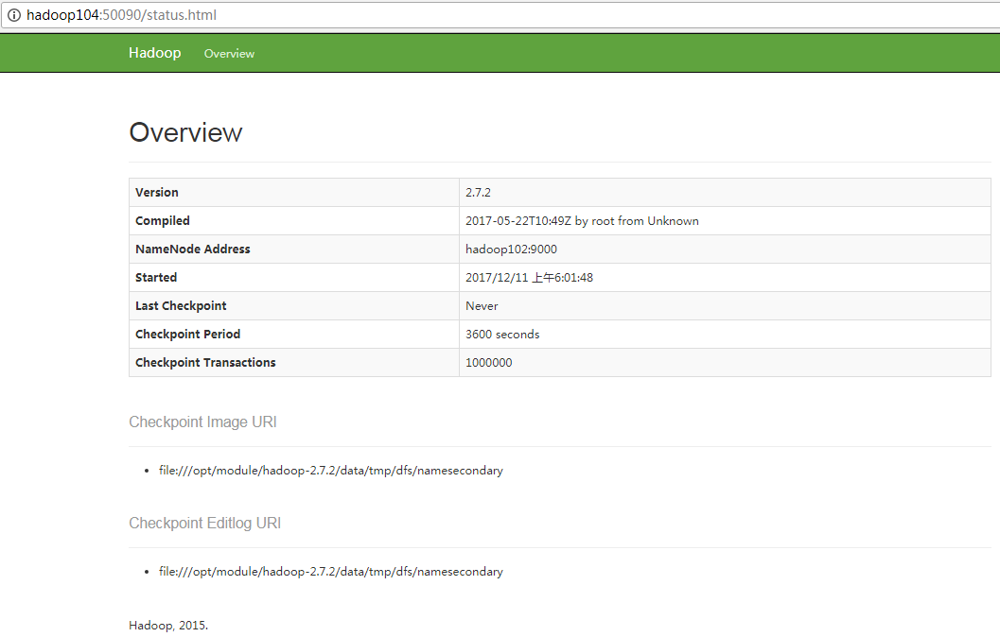</p>
<blockquote>
<p>  &#x56FE;2-41 SecondaryNameNode&#x7684;Web&#x7AEF;</p>
</blockquote>
<ol>
<li>&#x96C6;&#x7FA4;&#x57FA;&#x672C;&#x6D4B;&#x8BD5;</li>
</ol>
<p>&#xFF08;1&#xFF09;&#x4E0A;&#x4F20;&#x6587;&#x4EF6;&#x5230;&#x96C6;&#x7FA4;</p>
<p>&#x4E0A;&#x4F20;&#x5C0F;&#x6587;&#x4EF6;</p>
<blockquote>
<p>  [atguigu\@hadoop102 hadoop-2.7.2]$ hdfs dfs -mkdir -p /user/atguigu/input</p>
<p>  [atguigu\@hadoop102 hadoop-2.7.2]$ hdfs dfs -put wcinput/wc.input
  /user/atguigu/input</p>
</blockquote>
<p>&#x4E0A;&#x4F20;&#x5927;&#x6587;&#x4EF6;</p>
<blockquote>
<p>  [atguigu\@hadoop102 hadoop-2.7.2]$ bin/hadoop fs -put</p>
<p>  /opt/software/hadoop-2.7.2.tar.gz /user/atguigu/input</p>
</blockquote>
<p>&#xFF08;2&#xFF09;&#x4E0A;&#x4F20;&#x6587;&#x4EF6;&#x540E;&#x67E5;&#x770B;&#x6587;&#x4EF6;&#x5B58;&#x653E;&#x5728;&#x4EC0;&#x4E48;&#x4F4D;&#x7F6E;</p>
<blockquote>
<p>  &#xFF08;a&#xFF09;&#x67E5;&#x770B;HDFS&#x6587;&#x4EF6;&#x5B58;&#x50A8;&#x8DEF;&#x5F84;</p>
<p>  [atguigu\@hadoop102 subdir0]$ pwd</p>
<p>  /opt/module/hadoop-2.7.2/data/tmp/dfs/data/current/BP-938951106-192.168.10.107-1495462844069/current/finalized/subdir0/subdir0</p>
<p>  &#xFF08;b&#xFF09;&#x67E5;&#x770B;HDFS&#x5728;&#x78C1;&#x76D8;&#x5B58;&#x50A8;&#x6587;&#x4EF6;&#x5185;&#x5BB9;</p>
<p>  [atguigu\@hadoop102 subdir0]$ cat blk_1073741825</p>
<p>  hadoop yarn</p>
<p>  hadoop mapreduce</p>
<p>  atguigu</p>
<p>  atguigu</p>
</blockquote>
<p>&#xFF08;3&#xFF09;&#x62FC;&#x63A5;</p>
<blockquote>
<p>  -rw-rw-r--. 1 atguigu atguigu 134217728 5&#x6708; 23 16:01 <strong>blk_1073741836</strong></p>
<p>  -rw-rw-r--. 1 atguigu atguigu 1048583 5&#x6708; 23 16:01 blk_1073741836_1012.meta</p>
<p>  -rw-rw-r--. 1 atguigu atguigu 63439959 5&#x6708; 23 16:01 <strong>blk_1073741837</strong></p>
<p>  -rw-rw-r--. 1 atguigu atguigu 495635 5&#x6708; 23 16:01 blk_1073741837_1013.meta</p>
<p>  [atguigu\@hadoop102 subdir0]$ cat blk_1073741836&gt;&gt;tmp.file</p>
<p>  [atguigu\@hadoop102 subdir0]$ cat blk_1073741837&gt;&gt;tmp.file</p>
<p>  [atguigu\@hadoop102 subdir0]$ tar -zxvf tmp.file</p>
</blockquote>
<p>&#xFF08;4&#xFF09;&#x4E0B;&#x8F7D;</p>
<blockquote>
<p>  [atguigu\@hadoop102 hadoop-2.7.2]$ bin/hadoop fs -get</p>
<p>  /user/atguigu/input/hadoop-2.7.2.tar.gz ./</p>
</blockquote>
<h3 id="437-&#x96C6;&#x7FA4;&#x542F;&#x52A8;&#x505C;&#x6B62;&#x65B9;&#x5F0F;&#x603B;&#x7ED3;">4.3.7 &#x96C6;&#x7FA4;&#x542F;&#x52A8;/&#x505C;&#x6B62;&#x65B9;&#x5F0F;&#x603B;&#x7ED3;</h3>
<ol>
<li>&#x5404;&#x4E2A;&#x670D;&#x52A1;&#x7EC4;&#x4EF6;&#x9010;&#x4E00;&#x542F;&#x52A8;/&#x505C;&#x6B62;</li>
</ol>
<p>&#xFF08;1&#xFF09;&#x5206;&#x522B;&#x542F;&#x52A8;/&#x505C;&#x6B62;HDFS&#x7EC4;&#x4EF6;</p>
<p>hadoop-daemon.sh start / stop namenode / datanode / secondarynamenode</p>
<p>&#xFF08;2&#xFF09;&#x542F;&#x52A8;/&#x505C;&#x6B62;YARN</p>
<p>yarn-daemon.sh start / stop resourcemanager / nodemanager</p>
<ol>
<li>&#x5404;&#x4E2A;&#x6A21;&#x5757;&#x5206;&#x5F00;&#x542F;&#x52A8;/&#x505C;&#x6B62;&#xFF08;&#x914D;&#x7F6E;ssh&#x662F;&#x524D;&#x63D0;&#xFF09;&#x5E38;&#x7528;</li>
</ol>
<p>&#xFF08;1&#xFF09;&#x6574;&#x4F53;&#x542F;&#x52A8;/&#x505C;&#x6B62;HDFS</p>
<p>start-dfs.sh / stop-dfs.sh</p>
<p>&#xFF08;2&#xFF09;&#x6574;&#x4F53;&#x542F;&#x52A8;/&#x505C;&#x6B62;YARN</p>
<p>start-yarn.sh / stop-yarn.sh</p>
<h3 id="438-&#x96C6;&#x7FA4;&#x65F6;&#x95F4;&#x540C;&#x6B65;">4.3.8 &#x96C6;&#x7FA4;&#x65F6;&#x95F4;&#x540C;&#x6B65;</h3>
<p>&#x65F6;&#x95F4;&#x540C;&#x6B65;&#x7684;&#x65B9;&#x5F0F;&#xFF1A;&#x627E;&#x4E00;&#x4E2A;&#x673A;&#x5668;&#xFF0C;&#x4F5C;&#x4E3A;&#x65F6;&#x95F4;&#x670D;&#x52A1;&#x5668;&#xFF0C;&#x6240;&#x6709;&#x7684;&#x673A;&#x5668;&#x4E0E;&#x8FD9;&#x53F0;&#x96C6;&#x7FA4;&#x65F6;&#x95F4;&#x8FDB;&#x884C;&#x5B9A;&#x65F6;&#x7684;&#x540C;&#x6B65;&#xFF0C;&#x6BD4;&#x5982;&#xFF0C;&#x6BCF;&#x9694;&#x5341;&#x5206;&#x949F;&#xFF0C;&#x540C;&#x6B65;&#x4E00;&#x6B21;&#x65F6;&#x95F4;&#x3002;</p>
<p><strong>&#x914D;&#x7F6E;&#x65F6;&#x95F4;&#x540C;&#x6B65;&#x5177;&#x4F53;&#x5B9E;&#x64CD;&#xFF1A;</strong></p>
<ol>
<li>&#x65F6;&#x95F4;&#x670D;&#x52A1;&#x5668;&#x914D;&#x7F6E;&#xFF08;&#x5FC5;&#x987B;root&#x7528;&#x6237;&#xFF09;</li>
</ol>
<p>&#xFF08;1&#xFF09;&#x68C0;&#x67E5;ntp&#x662F;&#x5426;&#x5B89;&#x88C5;</p>
<blockquote>
<p>  [<strong>root</strong>\@hadoop102 &#x684C;&#x9762;]# rpm -qa|grep ntp</p>
</blockquote>
<p>ntp-4.2.6p5-10.el6.centos.x86_64</p>
<p>fontpackages-filesystem-1.41-1.1.el6.noarch</p>
<p>ntpdate-4.2.6p5-10.el6.centos.x86_64</p>
<p>&#xFF08;2&#xFF09;&#x4FEE;&#x6539;ntp&#x914D;&#x7F6E;&#x6587;&#x4EF6;</p>
<blockquote>
<p>  [<strong>root</strong>\@hadoop102 &#x684C;&#x9762;]# vi /etc/ntp.conf</p>
<p>  &#x4FEE;&#x6539;&#x5185;&#x5BB9;&#x5982;&#x4E0B;</p>
<p>  a&#xFF09;&#x4FEE;&#x6539;1&#xFF08;&#x6388;&#x6743;192.168.1.0-192.168.1.255&#x7F51;&#x6BB5;&#x4E0A;&#x7684;&#x6240;&#x6709;&#x673A;&#x5668;&#x53EF;&#x4EE5;&#x4ECE;&#x8FD9;&#x53F0;&#x673A;&#x5668;&#x4E0A;&#x67E5;&#x8BE2;&#x548C;&#x540C;&#x6B65;&#x65F6;&#x95F4;&#xFF09;</p>
<p>  <strong>#</strong>restrict 192.168.1.0 mask 255.255.255.0 nomodify notrap&#x4E3A;</p>
<p>  restrict 192.168.1.0 mask 255.255.255.0 nomodify notrap</p>
</blockquote>
<p>b&#xFF09;&#x4FEE;&#x6539;2&#xFF08;&#x96C6;&#x7FA4;&#x5728;&#x5C40;&#x57DF;&#x7F51;&#x4E2D;&#xFF0C;&#x4E0D;&#x4F7F;&#x7528;&#x5176;&#x4ED6;&#x4E92;&#x8054;&#x7F51;&#x4E0A;&#x7684;&#x65F6;&#x95F4;&#xFF09;</p>
<blockquote>
<p>  server 0.centos.pool.ntp.org iburst</p>
<p>  server 1.centos.pool.ntp.org iburst</p>
<p>  server 2.centos.pool.ntp.org iburst</p>
<p>  server 3.centos.pool.ntp.org iburst&#x4E3A;</p>
<p>  <strong>#</strong>server 0.centos.pool.ntp.org iburst</p>
<p>  <strong>#</strong>server 1.centos.pool.ntp.org iburst</p>
<p>  <strong>#</strong>server 2.centos.pool.ntp.org iburst</p>
<p>  <strong>#</strong>server 3.centos.pool.ntp.org iburst</p>
<p>  c&#xFF09;&#x6DFB;&#x52A0;3&#xFF08;&#x5F53;&#x8BE5;&#x8282;&#x70B9;&#x4E22;&#x5931;&#x7F51;&#x7EDC;&#x8FDE;&#x63A5;&#xFF0C;&#x4F9D;&#x7136;&#x53EF;&#x4EE5;&#x91C7;&#x7528;&#x672C;&#x5730;&#x65F6;&#x95F4;&#x4F5C;&#x4E3A;&#x65F6;&#x95F4;&#x670D;&#x52A1;&#x5668;&#x4E3A;&#x96C6;&#x7FA4;&#x4E2D;&#x7684;&#x5176;&#x4ED6;&#x8282;&#x70B9;&#x63D0;&#x4F9B;&#x65F6;&#x95F4;&#x540C;&#x6B65;&#xFF09;</p>
<p>  server 127.127.1.0</p>
<p>  fudge 127.127.1.0 stratum 10</p>
</blockquote>
<p>&#xFF08;3&#xFF09;&#x4FEE;&#x6539;/etc/sysconfig/ntpd &#x6587;&#x4EF6;</p>
<blockquote>
<p>  [<strong>root</strong>\@hadoop102 &#x684C;&#x9762;]# vim /etc/sysconfig/ntpd</p>
<p>  &#x589E;&#x52A0;&#x5185;&#x5BB9;&#x5982;&#x4E0B;&#xFF08;&#x8BA9;&#x786C;&#x4EF6;&#x65F6;&#x95F4;&#x4E0E;&#x7CFB;&#x7EDF;&#x65F6;&#x95F4;&#x4E00;&#x8D77;&#x540C;&#x6B65;&#xFF09;</p>
<p>  SYNC_HWCLOCK=yes</p>
</blockquote>
<p>&#xFF08;4&#xFF09;&#x91CD;&#x65B0;&#x542F;&#x52A8;ntpd&#x670D;&#x52A1;</p>
<blockquote>
<p>  [<strong>root</strong>\@hadoop102 &#x684C;&#x9762;]# service ntpd status</p>
</blockquote>
<p>ntpd &#x5DF2;&#x505C;</p>
<blockquote>
<p>  [<strong>root</strong>\@hadoop102 &#x684C;&#x9762;]# service ntpd start</p>
<p>  &#x6B63;&#x5728;&#x542F;&#x52A8; ntpd&#xFF1A; [&#x786E;&#x5B9A;]</p>
</blockquote>
<p>&#xFF08;5&#xFF09;&#x8BBE;&#x7F6E;ntpd&#x670D;&#x52A1;&#x5F00;&#x673A;&#x542F;&#x52A8;</p>
<blockquote>
<p>  [<strong>root</strong>\@hadoop102 &#x684C;&#x9762;]# chkconfig ntpd on</p>
</blockquote>
<ol>
<li>&#x5176;&#x4ED6;&#x673A;&#x5668;&#x914D;&#x7F6E;&#xFF08;&#x5FC5;&#x987B;root&#x7528;&#x6237;&#xFF09;</li>
</ol>
<p>&#xFF08;1&#xFF09;&#x5728;&#x5176;&#x4ED6;&#x673A;&#x5668;&#x914D;&#x7F6E;10&#x5206;&#x949F;&#x4E0E;&#x65F6;&#x95F4;&#x670D;&#x52A1;&#x5668;&#x540C;&#x6B65;&#x4E00;&#x6B21;</p>
<blockquote>
<p>  [<strong>root</strong>\@hadoop103&#x684C;&#x9762;]# crontab -e</p>
<p>  &#x7F16;&#x5199;&#x5B9A;&#x65F6;&#x4EFB;&#x52A1;&#x5982;&#x4E0B;&#xFF1A;</p>
<p>  */10 * * * * /usr/sbin/ntpdate hadoop102</p>
</blockquote>
<p>&#xFF08;2&#xFF09;&#x4FEE;&#x6539;&#x4EFB;&#x610F;&#x673A;&#x5668;&#x65F6;&#x95F4;</p>
<blockquote>
<p>  [<strong>root</strong>\@hadoop103&#x684C;&#x9762;]# date -s &quot;2017-9-11 11:11:11&quot;</p>
</blockquote>
<p>&#xFF08;3&#xFF09;&#x5341;&#x5206;&#x949F;&#x540E;&#x67E5;&#x770B;&#x673A;&#x5668;&#x662F;&#x5426;&#x4E0E;&#x65F6;&#x95F4;&#x670D;&#x52A1;&#x5668;&#x540C;&#x6B65;</p>
<blockquote>
<p>  [<strong>root</strong>\@hadoop103&#x684C;&#x9762;]# date</p>
<p>  &#x8BF4;&#x660E;&#xFF1A;&#x6D4B;&#x8BD5;&#x7684;&#x65F6;&#x5019;&#x53EF;&#x4EE5;&#x5C06;10&#x5206;&#x949F;&#x8C03;&#x6574;&#x4E3A;1&#x5206;&#x949F;&#xFF0C;&#x8282;&#x7701;&#x65F6;&#x95F4;&#x3002;</p>
</blockquote>
<h1 id="&#x7B2C;5&#x7AE0;-hadoop&#x7F16;&#x8BD1;&#x6E90;&#x7801;&#xFF08;&#x9762;&#x8BD5;&#x91CD;&#x70B9;&#xFF09;">&#x7B2C;5&#x7AE0; Hadoop&#x7F16;&#x8BD1;&#x6E90;&#x7801;&#xFF08;&#x9762;&#x8BD5;&#x91CD;&#x70B9;&#xFF09;</h1>
<h2 id="51-&#x524D;&#x671F;&#x51C6;&#x5907;&#x5DE5;&#x4F5C;">5.1 &#x524D;&#x671F;&#x51C6;&#x5907;&#x5DE5;&#x4F5C;</h2>
<ol>
<li>CentOS&#x8054;&#x7F51;</li>
</ol>
<p>&#x914D;&#x7F6E;CentOS&#x80FD;&#x8FDE;&#x63A5;&#x5916;&#x7F51;&#x3002;Linux&#x865A;&#x62DF;&#x673A;ping <a href="http://www.baidu.com" target="_blank">www.baidu.com</a>
&#x662F;&#x7545;&#x901A;&#x7684;</p>
<p>&#x6CE8;&#x610F;&#xFF1A;&#x91C7;&#x7528;root&#x89D2;&#x8272;&#x7F16;&#x8BD1;&#xFF0C;&#x51CF;&#x5C11;&#x6587;&#x4EF6;&#x5939;&#x6743;&#x9650;&#x51FA;&#x73B0;&#x95EE;&#x9898;</p>
<ol>
<li>jar&#x5305;&#x51C6;&#x5907;(hadoop&#x6E90;&#x7801;&#x3001;JDK8&#x3001;maven&#x3001;ant &#x3001;protobuf)</li>
</ol>
<p>&#xFF08;1&#xFF09;hadoop-2.7.2-src.tar.gz</p>
<p>&#xFF08;2&#xFF09;jdk-8u144-linux-x64.tar.gz</p>
<p>&#xFF08;3&#xFF09;apache-ant-1.9.9-bin.tar.gz&#xFF08;build&#x5DE5;&#x5177;&#xFF0C;&#x6253;&#x5305;&#x7528;&#x7684;&#xFF09;</p>
<p>&#xFF08;4&#xFF09;apache-maven-3.0.5-bin.tar.gz</p>
<p>&#xFF08;5&#xFF09;protobuf-2.5.0.tar.gz&#xFF08;&#x5E8F;&#x5217;&#x5316;&#x7684;&#x6846;&#x67B6;&#xFF09;</p>
<h2 id="52-jar&#x5305;&#x5B89;&#x88C5;">5.2 jar&#x5305;&#x5B89;&#x88C5;</h2>
<p>&#x6CE8;&#x610F;&#xFF1A;&#x6240;&#x6709;&#x64CD;&#x4F5C;&#x5FC5;&#x987B;&#x5728;root&#x7528;&#x6237;&#x4E0B;&#x5B8C;&#x6210;</p>
<ol>
<li><p>JDK&#x89E3;&#x538B;&#x3001;&#x914D;&#x7F6E;&#x73AF;&#x5883;&#x53D8;&#x91CF;
JAVA_HOME&#x548C;PATH&#xFF0C;&#x9A8C;&#x8BC1;<a href="http://lib.csdn.net/base/javase" target="_blank">java</a>-version(&#x5982;&#x4E0B;&#x90FD;&#x9700;&#x8981;&#x9A8C;&#x8BC1;&#x662F;&#x5426;&#x914D;&#x7F6E;&#x6210;&#x529F;)</p>
<p>[root\@hadoop101 software] # tar -zxf jdk-8u144-linux-x64.tar.gz -C
/opt/module/</p>
<p>[root\@hadoop101 software]# vi /etc/profile</p>
<p>#JAVA_HOME&#xFF1A;</p>
<p>export JAVA_HOME=/opt/module/jdk1.8.0_144</p>
<p>export PATH=$PATH:$JAVA_HOME/bin</p>
<p>[root\@hadoop101 software]#source /etc/profile</p>
<p><strong>&#x9A8C;&#x8BC1;&#x547D;&#x4EE4;&#xFF1A;java -version</strong></p>
</li>
<li><p>Maven&#x89E3;&#x538B;&#x3001;&#x914D;&#x7F6E; MAVEN_HOME&#x548C;PATH</p>
<p>[root\@hadoop101 software]# tar -zxvf apache-maven-3.0.5-bin.tar.gz -C
/opt/module/</p>
<p>[root\@hadoop101 apache-maven-3.0.5]# vi conf/settings.xml</p>
<p>\<mirrors\></mirrors\></p>
<p>\&lt;!-- mirror</p>
<p>| Specifies a repository mirror site to use instead of a given repository.
The repository that</p>
<p>| this mirror serves has an ID that matches the mirrorOf element of this
mirror. IDs are used</p>
<p>| for inheritance and direct lookup purposes, and must be unique across the
set of mirrors.</p>
<p>|</p>
<p>\<mirror\></mirror\></p>
<p>\<id\>mirrorId\&lt;/id&gt;</id\></p>
<p>\<mirrorof\>repositoryId\&lt;/mirrorOf&gt;</mirrorof\></p>
<p>\<name\>Human Readable Name for this Mirror.\&lt;/name&gt;</name\></p>
<p>\<url\><a href="http://my.repository.com/repo/path\" target="_blank">http://my.repository.com/repo/path\</a>&lt;/url&gt;</url\></p>
<p>\&lt;/mirror&gt;</p>
<p>--&gt;</p>
<p>\<mirror\></mirror\></p>
<p>\<id\>nexus-aliyun\&lt;/id&gt;</id\></p>
<p>\<mirrorof\>central\&lt;/mirrorOf&gt;</mirrorof\></p>
<p>\<name\>Nexus aliyun\&lt;/name&gt;</name\></p>
<p>\<url\><a href="http://maven.aliyun.com/nexus/content/groups/public\" target="_blank">http://maven.aliyun.com/nexus/content/groups/public\</a>&lt;/url&gt;</url\></p>
<p>\&lt;/mirror&gt;</p>
<p>\&lt;/mirrors&gt;</p>
</li>
</ol>
<blockquote>
<p>  [root\@hadoop101 apache-maven-3.0.5]# vi /etc/profile</p>
<p>  #MAVEN_HOME</p>
<p>  export MAVEN_HOME=/opt/module/apache-maven-3.0.5</p>
<p>  export PATH=$PATH:$MAVEN_HOME/bin</p>
<p>  [root\@hadoop101 software]#source /etc/profile</p>
<p>  <strong>&#x9A8C;&#x8BC1;&#x547D;&#x4EE4;&#xFF1A;mvn -version</strong></p>
</blockquote>
<ol>
<li><p>ant&#x89E3;&#x538B;&#x3001;&#x914D;&#x7F6E; ANT _HOME&#x548C;PATH</p>
<p>[root\@hadoop101 software]# tar -zxvf apache-ant-1.9.9-bin.tar.gz -C
/opt/module/</p>
<p>[root\@hadoop101 apache-ant-1.9.9]# vi /etc/profile</p>
<p>#ANT_HOME</p>
<p>export ANT_HOME=/opt/module/apache-ant-1.9.9</p>
<p>export PATH=$PATH:$ANT_HOME/bin</p>
<p>[root\@hadoop101 software]#source /etc/profile</p>
<p><strong>&#x9A8C;&#x8BC1;&#x547D;&#x4EE4;&#xFF1A;ant -version</strong></p>
</li>
<li><p>&#x5B89;&#x88C5; glibc-headers &#x548C; g++ &#x547D;&#x4EE4;&#x5982;&#x4E0B;</p>
<p>[root\@hadoop101 apache-ant-1.9.9]# yum install glibc-headers</p>
<p>[root\@hadoop101 apache-ant-1.9.9]# yum install gcc-c++</p>
</li>
<li><p>&#x5B89;&#x88C5;make&#x548C;cmake</p>
<p>[root\@hadoop101 apache-ant-1.9.9]# yum install make</p>
<p>[root\@hadoop101 apache-ant-1.9.9]# yum install cmake</p>
</li>
<li><p>&#x89E3;&#x538B;protobuf
&#xFF0C;&#x8FDB;&#x5165;&#x5230;&#x89E3;&#x538B;&#x540E;protobuf&#x4E3B;&#x76EE;&#x5F55;&#xFF0C;/opt/module/protobuf-2.5.0&#xFF0C;&#x7136;&#x540E;&#x76F8;&#x7EE7;&#x6267;&#x884C;&#x547D;&#x4EE4;</p>
<p>[root\@hadoop101 software]# tar -zxvf protobuf-2.5.0.tar.gz -C /opt/module/</p>
<p>[root\@hadoop101 opt]# cd /opt/module/protobuf-2.5.0/</p>
<p>[root\@hadoop101 protobuf-2.5.0]#./configure</p>
<p>[root\@hadoop101 protobuf-2.5.0]# make</p>
<p>[root\@hadoop101 protobuf-2.5.0]# make check</p>
<p>[root\@hadoop101 protobuf-2.5.0]# make install</p>
<p>[root\@hadoop101 protobuf-2.5.0]# ldconfig</p>
<p>[root\@hadoop101 hadoop-dist]# vi /etc/profile</p>
<p>#LD_LIBRARY_PATH</p>
<p>export LD_LIBRARY_PATH=/opt/module/protobuf-2.5.0</p>
<p>export PATH=$PATH:$LD_LIBRARY_PATH</p>
<p>[root\@hadoop101 software]#source /etc/profile</p>
<p><strong>&#x9A8C;&#x8BC1;&#x547D;&#x4EE4;&#xFF1A;protoc --version</strong></p>
</li>
<li><p>&#x5B89;&#x88C5;openssl&#x5E93;</p>
<p>[root\@hadoop101 software]#yum install openssl-devel</p>
</li>
<li><p>&#x5B89;&#x88C5; ncurses-devel&#x5E93;</p>
<p>[root\@hadoop101 software]#yum install ncurses-devel</p>
<p>&#x5230;&#x6B64;&#xFF0C;&#x7F16;&#x8BD1;&#x5DE5;&#x5177;&#x5B89;&#x88C5;&#x57FA;&#x672C;&#x5B8C;&#x6210;&#x3002;</p>
</li>
</ol>
<h2 id="53-&#x7F16;&#x8BD1;&#x6E90;&#x7801;">5.3 &#x7F16;&#x8BD1;&#x6E90;&#x7801;</h2>
<ol>
<li>&#x89E3;&#x538B;&#x6E90;&#x7801;&#x5230;/opt/&#x76EE;&#x5F55;</li>
</ol>
<blockquote>
<p>  [root\@hadoop101 software]# tar -zxvf hadoop-2.7.2-src.tar.gz -C /opt/</p>
</blockquote>
<ol>
<li>&#x8FDB;&#x5165;&#x5230;hadoop&#x6E90;&#x7801;&#x4E3B;&#x76EE;&#x5F55;</li>
</ol>
<blockquote>
<p>  [root\@hadoop101 hadoop-2.7.2-src]# pwd</p>
<p>  /opt/hadoop-2.7.2-src</p>
</blockquote>
<ol>
<li>&#x901A;&#x8FC7;maven&#x6267;&#x884C;&#x7F16;&#x8BD1;&#x547D;&#x4EE4;</li>
</ol>
<blockquote>
<p>  [root\@hadoop101 hadoop-2.7.2-src]#mvn package -Pdist,native -DskipTests
  -Dtar</p>
<p>  &#x7B49;&#x5F85;&#x65F6;&#x95F4;30&#x5206;&#x949F;&#x5DE6;&#x53F3;&#xFF0C;&#x6700;&#x7EC8;&#x6210;&#x529F;&#x662F;&#x5168;&#x90E8;SUCCESS&#xFF0C;&#x5982;&#x56FE;2-42&#x6240;&#x793A;&#x3002;</p>
</blockquote>
<p>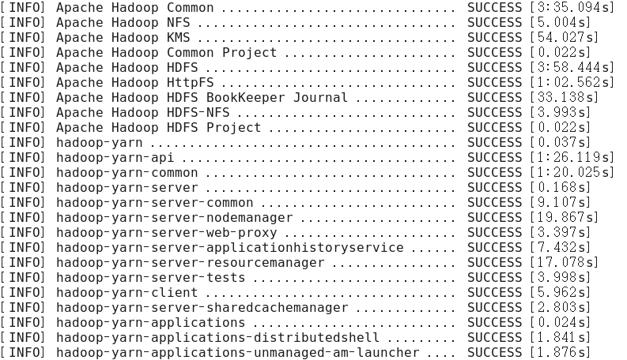</p>
<p>&#x56FE;2-42 &#x7F16;&#x8BD1;&#x6E90;&#x7801;</p>
<ol>
<li>&#x6210;&#x529F;&#x7684;64&#x4F4D;hadoop&#x5305;&#x5728;/opt/hadoop-2.7.2-src/hadoop-dist/target&#x4E0B;</li>
</ol>
<blockquote>
<p>  [root\@hadoop101 target]# pwd</p>
<p>  /opt/hadoop-2.7.2-src/hadoop-dist/target</p>
</blockquote>
<ol>
<li>&#x7F16;&#x8BD1;&#x6E90;&#x7801;&#x8FC7;&#x7A0B;&#x4E2D;&#x5E38;&#x89C1;&#x7684;&#x95EE;&#x9898;&#x53CA;&#x89E3;&#x51B3;&#x65B9;&#x6848;</li>
</ol>
<p>&#xFF08;1&#xFF09;MAVEN install&#x65F6;&#x5019;JVM&#x5185;&#x5B58;&#x6EA2;&#x51FA;</p>
<p>&#x5904;&#x7406;&#x65B9;&#x5F0F;&#xFF1A;&#x5728;&#x73AF;&#x5883;&#x914D;&#x7F6E;&#x6587;&#x4EF6;&#x548C;maven&#x7684;&#x6267;&#x884C;&#x6587;&#x4EF6;&#x5747;&#x53EF;&#x8C03;&#x6574;MAVEN_OPT&#x7684;heap&#x5927;&#x5C0F;&#x3002;&#xFF08;&#x8BE6;&#x60C5;&#x67E5;&#x9605;MAVEN
&#x7F16;&#x8BD1;
JVM&#x8C03;&#x4F18;&#x95EE;&#x9898;&#xFF0C;&#x5982;&#xFF1A;<a href="http://outofmemory.cn/code-snippet/12652/maven-outofmemoryerror-method&#xFF09;" target="_blank">http://outofmemory.cn/code-snippet/12652/maven-outofmemoryerror-method&#xFF09;</a></p>
<p>&#xFF08;2&#xFF09;&#x7F16;&#x8BD1;&#x671F;&#x95F4;maven&#x62A5;&#x9519;&#x3002;&#x53EF;&#x80FD;&#x7F51;&#x7EDC;&#x963B;&#x585E;&#x95EE;&#x9898;&#x5BFC;&#x81F4;&#x4F9D;&#x8D56;&#x5E93;&#x4E0B;&#x8F7D;&#x4E0D;&#x5B8C;&#x6574;&#x5BFC;&#x81F4;&#xFF0C;&#x591A;&#x6B21;&#x6267;&#x884C;&#x547D;&#x4EE4;&#xFF08;&#x4E00;&#x6B21;&#x901A;&#x8FC7;&#x6BD4;&#x8F83;&#x96BE;&#xFF09;&#xFF1A;</p>
<p>[root\@hadoop101 hadoop-2.7.2-src]#mvn package -Pdist,nativeN -DskipTests -Dtar</p>
<p>&#xFF08;3&#xFF09;&#x62A5;ant&#x3001;protobuf&#x7B49;&#x9519;&#x8BEF;&#xFF0C;&#x63D2;&#x4EF6;&#x4E0B;&#x8F7D;&#x672A;&#x5B8C;&#x6574;&#x6216;&#x8005;&#x63D2;&#x4EF6;&#x7248;&#x672C;&#x95EE;&#x9898;&#xFF0C;&#x6700;&#x5F00;&#x59CB;&#x94FE;&#x63A5;&#x6709;&#x8F83;&#x591A;&#x7279;&#x6B8A;&#x60C5;&#x51B5;&#xFF0C;&#x540C;&#x65F6;&#x63A8;&#x8350;</p>
<p>2.7.0&#x7248;&#x672C;&#x7684;&#x95EE;&#x9898;&#x6C47;&#x603B;&#x5E16;&#x5B50; <a href="http://www.tuicool.com/articles/IBn63qf" target="_blank">http://www.tuicool.com/articles/IBn63qf</a></p>
<h1 id="&#x7B2C;6&#x7AE0;-&#x5E38;&#x89C1;&#x9519;&#x8BEF;&#x53CA;&#x89E3;&#x51B3;&#x65B9;&#x6848;">&#x7B2C;6&#x7AE0; &#x5E38;&#x89C1;&#x9519;&#x8BEF;&#x53CA;&#x89E3;&#x51B3;&#x65B9;&#x6848;</h1>
<p>1&#xFF09;&#x9632;&#x706B;&#x5899;&#x6CA1;&#x5173;&#x95ED;&#x3001;&#x6216;&#x8005;&#x6CA1;&#x6709;&#x542F;&#x52A8;YARN</p>
<p><em>INFO client.RMProxy: Connecting to ResourceManager at
hadoop108/192.168.10.108:8032</em></p>
<p>2&#xFF09;&#x4E3B;&#x673A;&#x540D;&#x79F0;&#x914D;&#x7F6E;&#x9519;&#x8BEF;</p>
<p>3&#xFF09;IP&#x5730;&#x5740;&#x914D;&#x7F6E;&#x9519;&#x8BEF;</p>
<p>4&#xFF09;ssh&#x6CA1;&#x6709;&#x914D;&#x7F6E;&#x597D;</p>
<p>5&#xFF09;root&#x7528;&#x6237;&#x548C;atguigu&#x4E24;&#x4E2A;&#x7528;&#x6237;&#x542F;&#x52A8;&#x96C6;&#x7FA4;&#x4E0D;&#x7EDF;&#x4E00;</p>
<p>6&#xFF09;&#x914D;&#x7F6E;&#x6587;&#x4EF6;&#x4FEE;&#x6539;&#x4E0D;&#x7EC6;&#x5FC3;</p>
<p>7&#xFF09;&#x672A;&#x7F16;&#x8BD1;&#x6E90;&#x7801;</p>
<blockquote>
<p>  <em>Unable to load native-hadoop library for your platform... using
  builtin-java classes where applicable</em></p>
<p>  <em>17/05/22 15:38:58 INFO client.RMProxy: Connecting to ResourceManager at
  hadoop108/192.168.10.108:8032</em></p>
</blockquote>
<p>8&#xFF09;&#x4E0D;&#x8BC6;&#x522B;&#x4E3B;&#x673A;&#x540D;&#x79F0;</p>
<blockquote>
<p>  java.net.UnknownHostException: hadoop102: hadoop102</p>
<p>  at java.net.InetAddress.getLocalHost(InetAddress.java:1475)</p>
<p>  at
  org.apache.hadoop.mapreduce.JobSubmitter.submitJobInternal(JobSubmitter.java:146)</p>
<p>  at org.apache.hadoop.mapreduce.Job$10.run(Job.java:1290)</p>
<p>  at org.apache.hadoop.mapreduce.Job$10.run(Job.java:1287)</p>
<p>  at java.security.AccessController.doPrivileged(Native Method)</p>
<p>  at javax.security.auth.Subject.doAs(Subject.java:415)</p>
</blockquote>
<p>&#x89E3;&#x51B3;&#x529E;&#x6CD5;&#xFF1A;</p>
<p>&#xFF08;1&#xFF09;&#x5728;/etc/hosts&#x6587;&#x4EF6;&#x4E2D;&#x6DFB;&#x52A0;192.168.1.102 hadoop102</p>
<p>&#xFF08;2&#xFF09;&#x4E3B;&#x673A;&#x540D;&#x79F0;&#x4E0D;&#x8981;&#x8D77;hadoop hadoop000&#x7B49;&#x7279;&#x6B8A;&#x540D;&#x79F0;</p>
<p>9&#xFF09;DataNode&#x548C;NameNode&#x8FDB;&#x7A0B;&#x540C;&#x65F6;&#x53EA;&#x80FD;&#x5DE5;&#x4F5C;&#x4E00;&#x4E2A;&#x3002;</p>
<p>10&#xFF09;&#x6267;&#x884C;&#x547D;&#x4EE4;&#x4E0D;&#x751F;&#x6548;&#xFF0C;&#x7C98;&#x8D34;word&#x4E2D;&#x547D;&#x4EE4;&#x65F6;&#xFF0C;&#x9047;&#x5230;-&#x548C;&#x957F;&#x2013;&#x6CA1;&#x533A;&#x5206;&#x5F00;&#x3002;&#x5BFC;&#x81F4;&#x547D;&#x4EE4;&#x5931;&#x6548;</p>
<p>&#x89E3;&#x51B3;&#x529E;&#x6CD5;&#xFF1A;&#x5C3D;&#x91CF;&#x4E0D;&#x8981;&#x7C98;&#x8D34;word&#x4E2D;&#x4EE3;&#x7801;&#x3002;</p>
<p>11&#xFF09;jps&#x53D1;&#x73B0;&#x8FDB;&#x7A0B;&#x5DF2;&#x7ECF;&#x6CA1;&#x6709;&#xFF0C;&#x4F46;&#x662F;&#x91CD;&#x65B0;&#x542F;&#x52A8;&#x96C6;&#x7FA4;&#xFF0C;&#x63D0;&#x793A;&#x8FDB;&#x7A0B;&#x5DF2;&#x7ECF;&#x5F00;&#x542F;&#x3002;&#x539F;&#x56E0;&#x662F;&#x5728;linux&#x7684;&#x6839;&#x76EE;&#x5F55;&#x4E0B;/tmp&#x76EE;&#x5F55;&#x4E2D;&#x5B58;&#x5728;&#x542F;&#x52A8;&#x7684;&#x8FDB;&#x7A0B;&#x4E34;&#x65F6;&#x6587;&#x4EF6;&#xFF0C;&#x5C06;&#x96C6;&#x7FA4;&#x76F8;&#x5173;&#x8FDB;&#x7A0B;&#x5220;&#x9664;&#x6389;&#xFF0C;&#x518D;&#x91CD;&#x65B0;&#x542F;&#x52A8;&#x96C6;&#x7FA4;&#x3002;</p>
<p>12&#xFF09;jps&#x4E0D;&#x751F;&#x6548;&#x3002;</p>
<p>&#x539F;&#x56E0;&#xFF1A;&#x5168;&#x5C40;&#x53D8;&#x91CF;hadoop java&#x6CA1;&#x6709;&#x751F;&#x6548;&#x3002;&#x89E3;&#x51B3;&#x529E;&#x6CD5;&#xFF1A;&#x9700;&#x8981;source /etc/profile&#x6587;&#x4EF6;&#x3002;</p>
<p>13&#xFF09;8088&#x7AEF;&#x53E3;&#x8FDE;&#x63A5;&#x4E0D;&#x4E0A;</p>
<p>[atguigu\@hadoop102 &#x684C;&#x9762;]$ cat /etc/hosts</p>
<p>&#x6CE8;&#x91CA;&#x6389;&#x5982;&#x4E0B;&#x4EE3;&#x7801;</p>
<p>#127.0.0.1 localhost localhost.localdomain localhost4 localhost4.localdomain4</p>
<p>#::1 hadoop102</p>

                                
                                </section>
                            
    </div>
    <div class="search-results">
        <div class="has-results">
            
            <h1 class="search-results-title"><span class='search-results-count'></span> results matching "<span class='search-query'></span>"</h1>
            <ul class="search-results-list"></ul>
            
        </div>
        <div class="no-results">
            
            <h1 class="search-results-title">No results matching "<span class='search-query'></span>"</h1>
            
        </div>
    </div>
</div>

                        </div>
                    </div>
                
            </div>

            
                
                <a href="1.大数据概述.html" class="navigation navigation-prev " aria-label="Previous page: 1.大数据概述">
                    <i class="fa fa-angle-left"></i>
                </a>
                
                
                <a href="3.HDFS.html" class="navigation navigation-next " aria-label="Next page: 3.HDFS">
                    <i class="fa fa-angle-right"></i>
                </a>
                
            
        
    </div>

    <script>
        var gitbook = gitbook || [];
        gitbook.push(function() {
            gitbook.page.hasChanged({"page":{"title":"2.Hadoop（入门）","level":"3.1.2","depth":2,"next":{"title":"3.HDFS","level":"3.1.3","depth":2,"path":"19.Hadoop/3.HDFS.md","ref":"19.Hadoop/3.HDFS.md","articles":[]},"previous":{"title":"1.大数据概述","level":"3.1.1","depth":2,"path":"19.Hadoop/1.大数据概述.md","ref":"19.Hadoop/1.大数据概述.md","articles":[]},"dir":"ltr"},"config":{"plugins":["disqus","back-to-top-button","code","advanced-emoji","github","splitter","-sharing","sharing-plus","insert-logo","livereload"],"styles":{"website":"styles/website.css","pdf":"styles/pdf.css","epub":"styles/epub.css","mobi":"styles/mobi.css","ebook":"styles/ebook.css","print":"styles/print.css"},"pluginsConfig":{"disqus":{"useIdentifier":false,"shortName":"gitbook-tutorial"},"github":{"url":"https://github.com/3218870799"},"livereload":{},"splitter":{},"search":{},"sharing-plus":{"qq":false,"all":["facebook","google","twitter","instapaper","linkedin","pocket","stumbleupon"],"douban":false,"facebook":true,"weibo":false,"instapaper":false,"whatsapp":false,"hatenaBookmark":false,"twitter":true,"messenger":false,"line":false,"vk":false,"pocket":true,"google":false,"viber":false,"stumbleupon":false,"qzone":false,"linkedin":false},"lunr":{"maxIndexSize":1000000,"ignoreSpecialCharacters":false},"code":{"copyButtons":true},"fontsettings":{"theme":"white","family":"sans","size":2},"highlight":{},"back-to-top-button":{},"advanced-emoji":{"embedEmojis":false},"sharing":{"qq":false,"all":["douban","facebook","google","hatenaBookmark","instapaper","linkedin","twitter","weibo","messenger","qq","qzone","viber","vk","weibo","pocket","stumbleupon","whatsapp"],"douban":false,"facebook":false,"weibo":true,"instapaper":false,"whatsapp":false,"hatenaBookmark":false,"twitter":false,"messenger":false,"line":true,"vk":false,"pocket":false,"google":true,"viber":false,"stumbleupon":false,"qzone":true,"linkedin":true},"theme-default":{"styles":{"website":"styles/website.css","pdf":"styles/pdf.css","epub":"styles/epub.css","mobi":"styles/mobi.css","ebook":"styles/ebook.css","print":"styles/print.css"},"showLevel":false},"insert-logo":{"style":"background:none;max-height:30px;min_height:30px","url":"logo.png"}},"theme":"default","author":"阿苍老师","pdf":{"pageNumbers":true,"fontSize":12,"fontFamily":"Arial","paperSize":"a4","chapterMark":"pagebreak","pageBreaksBefore":"/","margin":{"right":62,"left":62,"top":56,"bottom":56}},"structure":{"langs":"LANGS.md","readme":"README.md","glossary":"GLOSSARY.md","summary":"SUMMARY.md"},"variables":{},"title":"程序猿成长笔记","gitbook":"*"},"file":{"path":"19.Hadoop/2.Hadoop（入门）.md","mtime":"2021-08-08T08:12:38.519Z","type":"markdown"},"gitbook":{"version":"3.2.3","time":"2021-08-08T09:35:20.898Z"},"basePath":"..","book":{"language":""}});
        });
    </script>
</div>

        
    <script src="../gitbook/gitbook.js"></script>
    <script src="../gitbook/theme.js"></script>
    
        
        <script src="https://cdnjs.cloudflare.com/ajax/libs/URI.js/1.16.1/URI.min.js"></script>
        
    
        
        <script src="../gitbook/gitbook-plugin-disqus/plugin.js"></script>
        
    
        
        <script src="../gitbook/gitbook-plugin-back-to-top-button/plugin.js"></script>
        
    
        
        <script src="../gitbook/gitbook-plugin-code/plugin.js"></script>
        
    
        
        <script src="../gitbook/gitbook-plugin-github/plugin.js"></script>
        
    
        
        <script src="../gitbook/gitbook-plugin-splitter/splitter.js"></script>
        
    
        
        <script src="../gitbook/gitbook-plugin-sharing-plus/buttons.js"></script>
        
    
        
        <script src="../gitbook/gitbook-plugin-insert-logo/plugin.js"></script>
        
    
        
        <script src="../gitbook/gitbook-plugin-livereload/plugin.js"></script>
        
    
        
        <script src="../gitbook/gitbook-plugin-search/search-engine.js"></script>
        
    
        
        <script src="../gitbook/gitbook-plugin-search/search.js"></script>
        
    
        
        <script src="../gitbook/gitbook-plugin-lunr/lunr.min.js"></script>
        
    
        
        <script src="../gitbook/gitbook-plugin-lunr/search-lunr.js"></script>
        
    
        
        <script src="../gitbook/gitbook-plugin-fontsettings/fontsettings.js"></script>
        
    

    </body>
</html>

